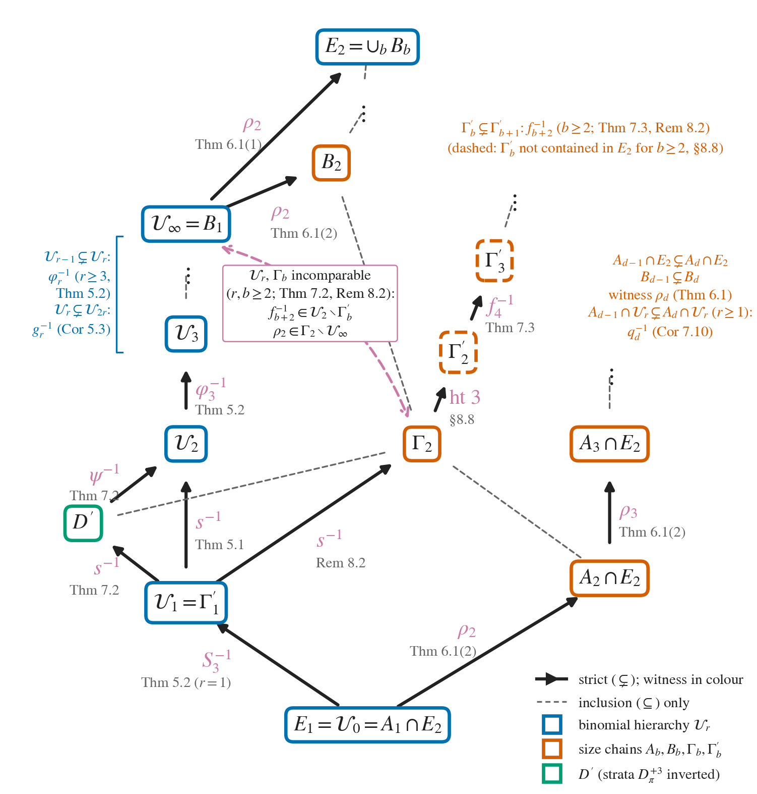
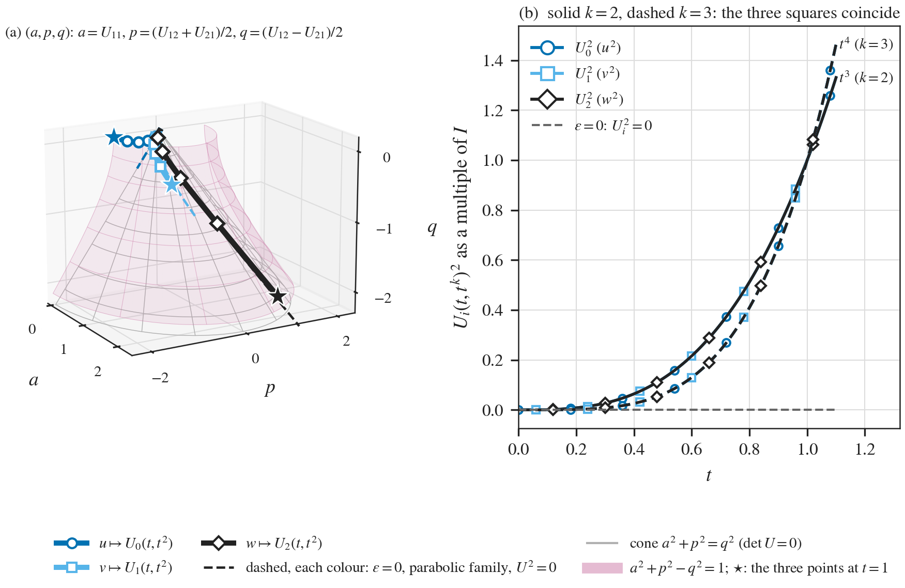
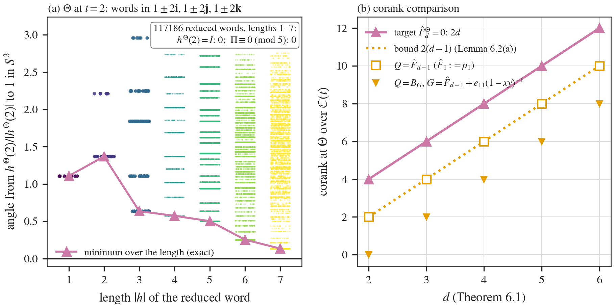
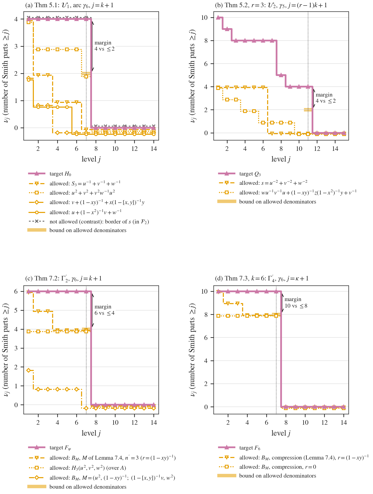
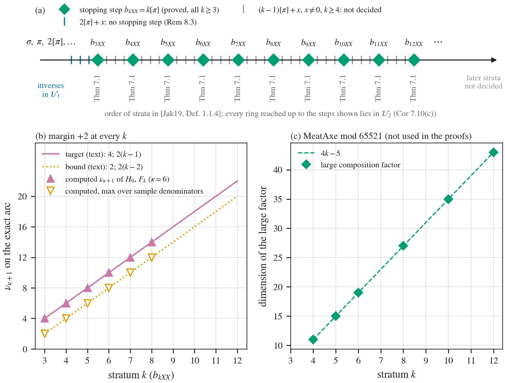
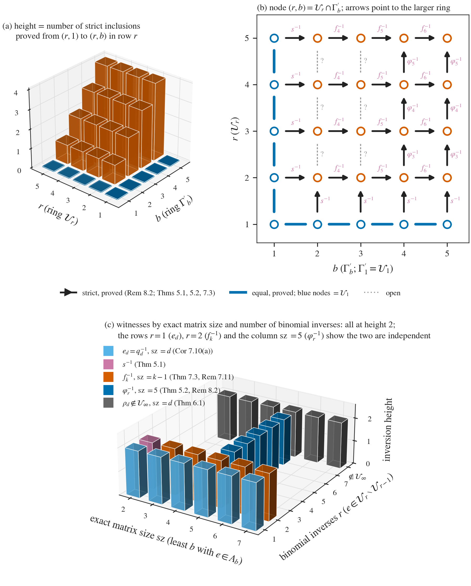

At a glance
What the paper contributes
The free field D of A = ℂ[F3] is built in stages: E1 inverts the nonzero elements of A, E2 those of E1, and so on. The stages never stabilise (Reutenauer; Herbera–Sánchez). The paper works inside the single stage E2, where one restricts which elements are inverted.
- A non-membership criterion (Theorem A = Theorem 3.4). If H−1 has its entries in the ring UΣ generated by the inverses of a family Σ of full matrices, each atomic factor of H is stably associated with an atomic factor of some Q ∈ Σ (Lemma 3.1). To refute that, it suffices that one atomic factor of H be more singular than every Q at some evaluation, measured by an invariant that does not grow on factors: Smith counts along an arc, the corank on a curve of integral quaternions, the corank at a character. The allowed denominators may themselves be singular there.
- Two hierarchies inside E2, strict at every step (Theorem B). The rings 𝒰r generated by inverses of sums of products of at most r inverse binomials: 𝒰r−1 ⊊ 𝒰r, with witness (u−2+v−2+w−2)−1 for r = 2; their union is a proper subring of E2. The matrix-size chain Ad−1 ∩ E2 ⊊ Ad ∩ E2 for every d ≥ 2. The two hierarchies are independent, and the size chain is already strict inside 𝒰2 (Corollary 7.10).
- Infinitely many stopping steps of the Dubrovin–Gräter–Hanke series inside E2 (Theorem C): for every k ≥ 3 the stratum of sums of k elements of Dπ, with explicit witnesses fk. That there are infinitely many stopping steps follows from Herbera–Sánchez, but no infinite family had been located within a fixed stage. The rings reached at these steps form a strict chain whose union is 𝒰2.
Main tools: Cohn's theory of firs, atoms and stable association, and of rational closures; Smith normal forms over ℂ[[t]] along an exact arc of 2×2 matrices; the free group generated by 1+2i, 1+2j, 1+2k; a grading argument that gives an atom for every k.
🚀 Start here: Theorem A: the non-membership criterion: one atomic factor against the allowed denominators.
Main results:
- Theorem A: the non-membership criterion: one atomic factor against the allowed denominators
- Theorem B: the binomial hierarchy and the size chain are strict inside E₂
- Theorem C: every k[π] is a stopping step of the Dubrovin–Gräter–Hanke series
🗺️ Map of the results (click a box to go to it)
Dependencies in the written proof: an arrow A → B means that this proof of B uses A. Every result rests on its written proof; the tags record what was checked besides, and each statement's “Evidence & scope” block says how far. The colour of a box is its strongest tag, in the order above; the tags in the box give the rest. Boxes with a thick border are the main results; click a box to read the statement.
📐 Setting (copied from the paper, §2.1)
\(P=\mathbb C\langle x,y,z\rangle \subset A=\mathbb C[F_3]\subset D\), where \(D\) is the free field, the universal field of fractions of \(P\) and of \(A\). We write \(u=1+x\), \(v=1+y\), \(w=1+z\). \(E_1=A[s^{-1}:0\neq s\in A]\subset D\) and \(E_2=E_1[e^{-1}:0\ne e\in E_1]\). A binomial is \(\ell =1-\beta h\), \(h\in F_3\setminus \{ 1\} \), \(\beta \in \mathbb C^\times \). For \(r\ge 0\), \(\mathcal F_r\) is the span of the products \(a_0\ell _1^{-1}a_1\cdots \ell _q^{-1}a_q\) with \(q\le r\), \(\ell _i\) binomials and \(a_i\in A\), and \(\mathcal U_r=E_1[\mathcal F_r^{-1}]\), the subring of \(D\) generated by \(E_1\) and the inverses of the nonzero elements of \(\mathcal F_r\); \(\mathcal U_\infty =\bigcup _r\mathcal U_r\). \(A_b\) is the subring of \(D\) generated by \(A\) and the entries of \(G^{-1}\) for all full \(a\times a\) matrices \(G\) over \(A\) with \(a\le b\). A square matrix over a subring of \(D\) is full if it is invertible over \(D\).
Abstract.
Let \(D\) be the free field of \(A=\mathbb C[F_3]\) and \(E_2\) the ring obtained from \(A\) by inverting twice. Two chains of subrings of \(E_2\) are strict at every step: the rings generated over \(E_1\) by inverses of sums of products of at most \(r\) inverse binomials (with coefficients in \(A\)), whose union is a proper subring of \(E_2\), and the rings generated by \(A\) and the entries of the inverses of full matrices over \(A\) of size at most \(d\), intersected with \(E_2\). We also locate infinitely many stopping steps of the Dubrovin–Gräter–Hanke complexity series inside \(E_2\), with explicit witnesses; that there are infinitely many stopping steps follows from the work of Herbera and Sánchez, but no infinite family had been located within a fixed stage. The tool is a non-membership criterion that compares one atomic factor with the allowed denominators through invariants that do not grow under passage to factors.
1 Introduction
The rational closure of \(A=\mathbb C[F_3]\) in its free field \(D\) is built in stages: \(E_1\) is generated by \(A\) and the inverses of its nonzero elements, \(E_2\) by \(E_1\) and the inverses of the nonzero elements of \(E_1\), and so on. These stages never stabilise [HS15, Thms 4.5, 4.6] (for infinitely many generators this is [Reu96, Thm 2.1]). Inside a single stage, where one restricts which elements are inverted, much less is known. How many nested inversions an element needs is a basic measure of its complexity, and the complexity series of Dubrovin, Gräter and Hanke [DGH03] records it step by step: at each inversion step (Case 3) it asks whether the inverses of one stratum already lie in the ring built so far [Jak19, Def. 1.1.4]. Answering that is a non-membership problem, and non-membership must exclude every formula, not exhibit one. We give a method that proves non-membership inside a single stage and use it to show that, already inside \(E_2\), two natural hierarchies of subrings are strict at every step and infinitely many stopping steps of the series occur.
The criterion. For a family \(\Sigma \) of full matrices over \(P=\mathbb C\langle x,y,z\rangle \) (full: invertible over \(D\)) let \(U_\Sigma \) be the subring of \(D\) generated by \(P\) and the entries of \(Q^{-1}\), \(Q\in \Sigma \); every subring of \(D\) generated by \(A\) and the entries of the inverses of a family of full matrices over \(A\) has this form (by polynomial lifts, §3.4), for a family containing \(x,y,z\). A full matrix over the fir \(P\) has a complete factorization into atoms, unique up to the order of the factors and stable association [Coh06, Thm 3.2.7 and the remark after it]. If \(H^{-1}\) has its entries in \(U_\Sigma \), each atomic factor of \(H\) is stably associated with an atomic factor of some \(Q\in \Sigma \) (Lemma 3.1). To refute such an association one evaluates.
Let \(\Sigma \) be a family of full matrices over \(P\) and \(H\) a full square matrix over \(P\) with an atomic factor \(G\) in a complete factorization. If for every \(Q\in \Sigma \) there is a monotone invariant \(\mu _Q\) (Definition 3.3) with \(\mu _Q(G){\gt}\mu _Q(Q)\), then \(H^{-1}\) does not have entries in \(U_\Sigma \).
Lean · ours, in partshow
as for Theorem 3.4: with the conclusion of Lemma 3.1 as a hypothesis
✅ Checked when this page was built: Criterion.lean compiles with Lean 4.35.0, no errors, no sorry. Axioms — not_inverseInU: propext, Classical.choice, Quot.sound.
Reproduce: Lean 4.35.0, Mathlib f0b4c8150aa0; in that Lean project, lake env lean Criterion.lean (SHA-256 of the compiled file: b3acc608d6445b7e…; a source page on this site may show it with comments edited, under its own hash).
Trust base: 🔒 kernel only — only part of the statement is formal (see the box). Lean: 1 result, standard axioms only
Proof: in this note·Formalized: Lean 4, by the author (public formalizations repository)·Covers: part: as for Theorem 3.4: with the conclusion of Lemma 3.1 as a hypothesis·Cite: p. 2, doi:10.5281/zenodo.23481332
🆕 Classical and new: new, as far as the paper found: no use of Smith profiles along an arc, nor of coranks of atoms at a representation where the allowed denominators are singular, to prove non-membership (§8.8). It rests on Lemma 3.1, which the paper does not claim (Remark 8.6); kernel dimensions already separate stable association classes [SV26].
↳ Not used by another result of the paper.
💡 In plain words (commentary, not part of the paper)
1. To show that an element is not in a ring generated by inverting a family \(\Sigma \) of matrices, one has to exclude every formula. Lemma 3.1 reduces this to atoms: if \(H^{-1}\) has its entries in \(U_\Sigma \), every atomic factor of \(H\) is stably associated with an atomic factor of a single \(Q\in \Sigma \). The criterion then compares numbers: a monotone invariant (Definition 3.3) does not change under stable association and does not grow when one passes to a factor, so if one atomic factor \(G\) of \(H\) scores higher than \(Q\), for every \(Q\in \Sigma \), then \(H^{-1}\) is not in \(U_\Sigma \). 2. The paper uses three invariants: the number \(\nu _j\) of Smith invariant factors of order \(\ge j\) along an arc on which \(u^2,v^2,w^2\) become the same scalar (§4.1); the corank on a curve of quaternions on which every binomial is invertible (§4.2); and the corank at the character \(\chi \colon x_j\mapsto -1\). The invariant may be chosen separately for each \(Q\), and it need not vanish on the allowed denominators: it only has to be smaller there than on the target. That is what makes the criterion work inside \(E_2\), where the allowed denominators are singular at the evaluations that detect the witnesses. 3. New and not new, as the paper says: the paper found no use of Smith profiles along an arc, nor of coranks of atoms at a representation where the allowed denominators are singular, to prove non-membership (§8.8). Lemma 3.1 is the analogue, for \(U_\Sigma \) and without factor-completeness, of results of Cohn, and the correspondence behind it is not claimed (Remark 8.6); kernel dimensions already separate stable association classes [SV26].
A monotone invariant is a number attached to square matrices that is unchanged by stable association and does not grow when passing to a factor. Write \(u=1+x\), \(v=1+y\), \(w=1+z\), where \(x,y,z\) are the generators of \(F_3\). We use three: the number \(\nu _j\) of Smith invariant factors of order \(\ge j\) of the evaluation along an arc \(P\to M_2(\mathbb C[[t]])\) on which \(u^2,v^2,w^2\) become the same scalar (§4.1), the corank on a curve of quaternions, integral at \(t=2\), on which every binomial is invertible (§4.2), and the corank at the character \(\chi \colon x_j\mapsto -1\), at which \(u,v,w\) vanish. The invariant need not vanish on the allowed denominators; it only has to be smaller there than on the target. So the denominators may be singular at the evaluation, a single curve bounds infinitely many of them at once, and an arc may be chosen separately for each denominator.
Results. A binomial is \(\ell =1-\beta h\) with \(h\in F_3\setminus \{ 1\} \) and \(\beta \in \mathbb C^\times \). Let \(\mathcal U_r\) be the subring generated by \(E_1\) and the inverses of the nonzero sums of products \(a_0\ell _1^{-1}a_1\cdots \ell _q^{-1}a_q\) with \(q\le r\) and \(a_i\in A\), and \(A_b\) the subring generated by \(A\) and the entries of the inverses of full \(a\times a\) matrices over \(A\), \(a\le b\) (the chain of Gerasimov and Malcolmson [Ger82, Mal84a]).
🆕 Classical and new: the rings 𝒰_r have not been studied, to the paper's knowledge; nor the strictness of the size chain inside E₂ for d ≥ 3. The case d = 2, and the strictness of the chain A_b in E(b), follow from [HS15, Thm 4.6] by pivoting (§8.8). The separation of the whole stages E(n) ⊊ E(n+1) is [Reu96], [HS15].
↳ Not used by another result of the paper.
💡 In plain words (commentary, not part of the paper)
1. Inside the second stage \(E_2\) of the rational closure of \(A=\mathbb C[F_3]\) two natural ways of measuring complexity give hierarchies that are strict at every step. (i) Count the inverse binomials: \(\mathcal U_r\) is generated by \(E_1\) and the inverses of sums of products of at most \(r\) inverse binomials, with coefficients in \(A\); then \(\mathcal U_{r-1}\subsetneq \mathcal U_r\) for every \(r\ge 1\), and for \(r=2\) the witness is \((u^{-2}+v^{-2}+w^{-2})^{-1}\). (ii) Count the size of the inverted matrices: \(A_{d-1}\cap E_2\subsetneq A_d\cap E_2\) for every \(d\ge 2\), and the union of all \(\mathcal U_r\) is still a proper subring of \(E_2\). 2. Why: each step is an application of Theorem A. For (i) the exact arc makes the squares \(u^2,v^2,w^2\) the same scalar \(t^{k+1}I\), so a quadratic target has four Smith parts at level \(k+1\), while every allowed denominator, with \(k\) chosen after it, has at most two (Theorem 5.1; Theorem 5.2 and Lemma 5.6 for \(r\ge 3\)). For (ii) the quaternion curve makes every binomial invertible, so every allowed border of an \(a\times a\) matrix has corank at most \(2a\), while the target \(\hat F_d\) vanishes there and has corank \(2d\) (Theorem 6.1, Lemma 6.2). 3. New and not new, as the paper says: the rings \(\mathcal U_r\), and the strictness of the size chain inside \(E_2\) for \(d\ge 3\), have not been studied to the paper’s knowledge; the case \(d=2\) follows from [HS15, Thm 4.6] by pivoting (§8.8), and the separation of the whole stages \(E(n)\subsetneq E(n+1)\) is [Reu96], [HS15]. The two hierarchies are independent (Remark 8.2, Remark 7.11).
The two hierarchies are independent. For \(r,b\ge 2\), \(\mathcal U_r\) is incomparable with \(A_b\cap E_2\); the chain \(A_d\) is already strict inside \(\mathcal U_1\), \(A_{d-1}\cap \mathcal U_r\subsetneq A_d\cap \mathcal U_r\) for \(d\ge 2\) and \(r\ge 1\), by inverses of sums of \(d+1\) inverse binomials (Corollary 7.10(a)); the witnesses \(\varphi _r^{-1}\) of Theorem B(i) (\(r\ge 3\), Theorem 5.2) all lie in \(A_5\), while \(f_k^{-1}\in \mathcal U_2\) needs matrices of size \(k-1\) (Remarks 7.11, 8.2).
The series of [DGH03] builds \(D\) as a union of subsets \(D_\alpha \), its strata, by adjoining sums, products and, once the current set is a ring, the inverses of the first stratum whose inverses are missing; such a stratum is a stopping step (§2.3). After \(A\) and the inverses of binomials, the first stratum that contains products of two inverse binomials is \(D_\pi \).
For every \(k\ge 3\), the stratum of sums of \(k\) elements of \(D_\pi \) is a stopping step of the Dubrovin–Gräter–Hanke series of \(D\) for the monoid \(\mathbb C^\times F_3\) of scalar multiples of group elements, in Jakobs’ formulation [Jak19, Def. 1.1.4]. Witnesses are \(u^{-2}+v^{-2}+w^{-2}\) for \(k=3\) and \(f_k=u^{-2}+w^{-2}+\sum _{i=1}^{k-2}y^iu^{-2}y^{-i}\) for \(k\ge 4\) (Theorems 7.1, 7.3).
🆕 Classical and new: infinitely many stopping steps follow from [HS15], but none had been located within a fixed stage; the first stopping step (sums of two monomials) is implicit in [Gra20, §4].
↳ Not used by another result of the paper.
💡 In plain words (commentary, not part of the paper)
1. The Dubrovin–Gräter–Hanke series builds the free field step by step: it adds sums, products and, when the current set is a ring, the inverses of the first stratum whose inverses are missing; such a stratum is a stopping step. After \(A\) and the inverse binomials, \(D_\pi \) is the first stratum with products of two inverse binomials. The theorem says that for every \(k\ge 3\) the stratum of sums of \(k\) elements of \(D_\pi \) is a stopping step, and all of this happens while the ring built is still inside \(E_2\). 2. Why: when the series reaches the stratum \(k[\pi ]\), the ring built so far lies in \(\Gamma '_{k-2}\cap E_2\) (Lemma 7.5, using the compression of Lemma 7.4), so it suffices to find a sum of \(k\) elements of \(D_\pi \) whose inverse is not in \(\Gamma '_{k-2}\): \(s=u^{-2}+v^{-2}+w^{-2}\) for \(k=3\) (Theorem 5.1) and \(f_k=u^{-2}+w^{-2}+\sum _{i=1}^{k-2}y^iu^{-2}y^{-i}\) for \(k\ge 4\) (Theorem 7.3). For every \(k\) an atom is needed; the paper gets it in the group algebra of the free group on \(u,y,w\) by a grading argument (Lemma 7.9) and applies Theorem A to that single atomic factor. 3. New and not new, as the paper says: that the series has infinitely many stopping steps in total already follows from [HS15, Thm 4.6]; what is added is that infinitely many occur inside the second stage, and which strata they are. The first stopping step (sums of two monomials) is implicit in [Gra20, §4]. The result is relative to the monoid \(\mathbb C^\times F_3\), in Jakobs’ formulation [Jak19, Def. 1.1.4], and it does not decide the intermediate strata \((k-1)[\pi ]+x\) with \(x\ne 0\), \(k\ge 4\) (Remark 8.3).
The rings reached at these steps form a strict chain \(\mathcal U_1=\mathcal D_3\subsetneq \mathcal D_4\subsetneq \cdots \) whose union is \(\mathcal U_2\) (Corollary 7.10(c)). The proof of Theorem C needs an atom for every \(k\); we obtain it in the group algebra of the free group on \(u,y,w\) by a grading argument and apply Theorem A to that single atomic factor. Figure 1 summarises the inclusions, with their witnesses.
🖼️ Figure 1

The subrings of \(D\) studied in this paper. A solid arrow is a strict inclusion, labelled by an element of the larger ring that is not in the smaller one and by the result that proves it; a dashed grey line is an inclusion not marked as strict; the dashed double arrow joins the incomparable rings \(\mathcal U_\infty \) and \(\Gamma _2\) (Theorems 6.1 and 7.2; more generally \(\mathcal U_r\) and \(\Gamma _b\) are incomparable for \(r,b\ge 2\), Remark 8.2). The inclusion \(\Gamma _2\subsetneq \Gamma _2'\) is witnessed by an element of inversion height \(3\) (§8.8). Dashed boxes: the rings \(\Gamma _b'\), which for \(b\ge 2\) are not contained in \(E_2\) (§8.8). The rings \(\Gamma _b\), \(\Gamma _b'\) and \(D'\) are defined in §2.4.
Relation to previous work. The known separations use witnesses of growing inversion height, so all but the first ones leave \(E_2\). Reutenauer (for infinitely many generators) and Herbera–Sánchez separate the whole stages \(E(n)\subsetneq E(n+1)\) [Reu96], [HS15], inverting every nonzero element. In a free algebra the chain \(A_b\) is strict by the elements of prescribed inversion height of [HS15, Thm 4.5]; over \(\mathbb C[F_3]\), [HS15, Thm 4.6] yields elements of \(A_b\) of height \(b-1\); a pivot at a unit entry turns them into entries of the inverse of a full \((b-1)\times (b-1)\) matrix over \(A\), hence into witnesses for every step \(A_{b-2}\subsetneq A_{b-1}\), and a second pivot gives \(E_1\subsetneq \mathcal U_1\); the case \(b=3\) also gives \(d=2\) in Theorem B(ii) (§8.8). Since the height is unbounded, they also give infinitely many stopping steps, none located in a fixed stage; for \(b\ge 4\) these witnesses lie outside \(E_2\). The first stopping step, the stratum of sums of two monomials, is implicit in [Gra20, §4]. Working inside \(E_2\) is harder because the allowed denominators are singular at the evaluations that detect the witnesses; Theorem A is designed for that situation. It uses Cohn’s theory of torsion modules over semifirs and of rational closures [Coh06, §3.2, Thm 7.1.2, Lemma 7.11.2]; Lemma 3.1 is the analogue, for \(U_\Sigma \) and without factor-completeness, of Cohn’s results on localization at factor-complete sets [Coh06, Thm 7.11.9]. Over \(\mathbb C\) the free-locus theorem [HKV22, Thm 2.12] gives an alternative route (Remark 3 after Lemma 3.1); kernel dimensions already separate stable association classes [SV26]. What the invariants of Definition 3.3 add is a certificate that an atom is absent from the allowed denominators when these are singular at the evaluation. A more detailed comparison is in §8.8.
Section 2 fixes the rings and the complexity series; §3 proves the criterion; §4 builds the two evaluations; §§5–7 prove Theorems B(i), B(ii) and C; §8 collects remarks and open problems. The appendix lists what is formally verified in Lean 4 and how the computations were checked. A companion site, karlesmarin.github.io/blueprints/inversion-height-two, shows every numbered result with its dependencies and what checked it, has interactive labs for Lemmas 4.1 and 4.5 and Theorem 5.1, and draws Figures 2–4 live (Appendix A.4).
2 Rings and notation
2.1 Rings
\(P=\mathbb C\langle x,y,z\rangle \subset A=\mathbb C[F_3]\subset D\), where \(D\) is the free field, the universal field of fractions of \(P\) and of \(A\). For \(A\): \(A=P_\Sigma \) with \(\Sigma \) the diagonal matrices with entries in \(\{ x,y,z,1\} \) [Coh06, Cor. 7.11.8], and a universal localization of a ring with universal field \(D\) that maps to some field has \(D\) as its universal field as well [Coh06, Ex. 7.5.11–12]. (Directly: an epic \(A\)-field \(K\) is an epic \(P\)-field, so \(D\) specializes to \(K\). The domain of the specialization is a local ring containing \(P\) in which each \(x_j\) maps to a nonzero element, so it contains the \(x_j^{-1}\), and the specialization is one of \(A\)-fields.) We work over \(\mathbb C\) throughout; Remark 8.1 shows where characteristic \(0\) is used; in characteristic \(p\) the witness of Theorem 5.1 fails. We write \(u=1+x\), \(v=1+y\), \(w=1+z\); the affine change \(x\mapsto u\) is an automorphism of \(P\), so \(P=\mathbb C\langle u,v,w\rangle \).
\(E_1=A[s^{-1}:0\neq s\in A]\subset D\) and \(E_2=E_1[e^{-1}:0\ne e\in E_1]\). Height is measured over \(A\): the inverses \(x_j^{-1}\) do not count; this is the height \(h_{\iota '}\) of [HS15, §3] for the embedding of \(A\).
A binomial is \(\ell =1-\beta h\), \(h\in F_3\setminus \{ 1\} \), \(\beta \in \mathbb C^\times \). Every element \(\alpha g+\beta h\) of \(A\) with two terms equals \(\alpha g(1+\alpha ^{-1}\beta g^{-1}h)\), a unit of \(A\) times a binomial, and \(m\ell ^{-1}m'\) is again a unit multiple of an inverse binomial for monomials \(m,m'\).
For \(r\ge 0\),
\[ \mathcal F_r=\operatorname {span}_{\mathbb C}\{ a_0\ell _1^{-1}a_1\cdots \ell _q^{-1}a_q:\ q\le r,\ \ell _i\text{ binomials},\ a_i\in A\} ,\qquad \mathcal U_r=E_1[\mathcal F_r^{-1}], \]the subring of \(D\) generated by \(E_1\) and the inverses of the nonzero elements of \(\mathcal F_r\). Thus \(\mathcal F_0=A\), \(\mathcal U_0=E_1\), \(\mathcal F_1=V_1:=A+\sum A\ell ^{-1}A\) and \(\mathcal U_1=E_1[V_1^{-1}]\). Since \(\mathcal F_r\subset E_1\), \(\mathcal U_r\subseteq E_2\).
The coefficients \(a_i\) lie in \(A\), not in \(E_1\). This is essential: with \(a_0=u^{-2r}\in E_1\) and \(q=0\) one would get \(g_r\in \mathcal F_0\) and Corollary 5.3 would be false.
Let \(\chi :A\to \mathbb C\) be the character \(x_j\mapsto -1\) (so \(u,v,w\mapsto 0\)). A binomial \(1-\beta h\) is exceptional if \(h\) is conjugate to \(x_j^n\) for some \(j\) and \(n\neq 0\) and \(\beta (-1)^n=1\). Binomials with \(\beta \chi (h)\ne 1\) are units at \(\chi \).
A square matrix over a subring of \(D\) is full if it is invertible over \(D\). For a semifir with universal field \(D\) (here \(P\), \(A\) and the group algebra \(\Lambda \) of §5.3) this agrees with Cohn’s notion (inner rank \(n\)), since the embedding into \(D\) preserves the inner rank [Coh06, p. 291 and Thm 7.5.13, p. 450].
Let \(R_{\rm bin}\subset E_1\) be the subring generated by \(A\) and the inverses of all binomials, and \(\mathcal U_\infty =\bigcup _r\mathcal U_r\). Let \(A_b\) (resp. \(W_b\)) be the subring of \(D\) generated by \(A\) (resp. \(R_{\rm bin}\)) and the entries of \(G^{-1}\) for all full \(a\times a\) matrices \(G\) over \(A\) (resp. over \(R_{\rm bin}\)) with \(a\le b\), and put \(B_b=W_b\cap E_2\).
\(R_{\rm bin}=\bigcup _r\mathcal F_r\), since \(\mathcal F_r\mathcal F_s\subseteq \mathcal F_{r+s}\). Hence \(\mathcal U_\infty =E_1[(R_{\rm bin}\setminus 0)^{-1}]\subseteq E_2\).
A full \(a\times a\) matrix \(G\) with \(a{\lt}b\) gives the full matrix \(G\oplus I_{b-a}\), so \(A_b\) is also generated by \(A\) and the entries of inverses of full matrices of order exactly \(b\). Since \(A\subseteq R_{\rm bin}\), \(A_b\subseteq W_b\). Inverses of nonzero elements of \(R_{\rm bin}\) are entries of inverses of \(1\times 1\) full matrices, so \(W_1=\mathcal U_\infty \), \(A_1=E_1\), and \(B_1=\mathcal U_\infty \).
The chain \(A_b\) and Malcolmson’s chain. Malcolmson’s \(R_b\) is the universal localization of \(A\) at the full \(b\times b\) matrices; it embeds in the universal field [Mal84a, Thm 3], and its image is \(A_b\): \(R_\Sigma \) is generated by \(R\) and the entries of the inverses of the matrices in \(\Sigma \), and its image is generated by the images. Our \(W_b\) is the analogue over \(R_{\rm bin}\); it is not Malcolmson’s ring (\(W_1=\mathcal U_\infty \ne E_1=A_1\) by Theorem 5.2 with \(r=1\)).
2.2 Matrices over \(P\)
Full matrices over \(P\) are as in §2.1. Two matrices are stably associated if \(F_2\oplus I=M(F_1\oplus I)N\) with \(M,N\) invertible over \(P\) [Coh06, §0.5], [HKV22, §1]. A full matrix is an atom if it is not invertible and is not a product of two non-invertible full matrices; stable association preserves atoms [Coh06, Cor. 0.5.5]. For a family \(\Sigma \) of full matrices over \(P\) we write \(U_\Sigma =P[\text{entries of }Q^{-1}:Q\in \Sigma ]\subseteq D\).
Pencils and atoms. Let \(k=\mathbb C\) and \(P_g=k\langle x_1,\dots ,x_g\rangle \). A pencil is \(L=A_0+\sum _{i=1}^gA_ix_i\) with \(A_i\in M_N(k)\). Following Cohn, \(L\) is right monic if \([A_1\ \cdots \ A_g]\) has a right inverse over \(k\) (rank \(N\)), left monic if the column \([A_1;\dots ;A_g]\) has rank \(N\), and monic if both hold [Coh06, §5.8, p. 312]. This is the epic condition of [HKV22, p. 5]. For a full \(n\times n\) matrix \(F\) over \(P_g\) write \(M(F)=P_g^{1\times n}/P_g^{1\times n}F\).
We use the following classical facts.
A non-full \(n\times n\) matrix factors as \(AB\) with \(A\) of size \(n\times (n-1)\), so it is singular at every point of \(k^g\). Hence a matrix that is invertible at one scalar point is full; and a matrix that is singular at one scalar point is not invertible over \(P_g\), since evaluation is a ring homomorphism.
If \(F=\begin{pmatrix} X & Y \\ Z & T \end{pmatrix}\) with \(T\) invertible over \(P_g\), then
\[ F=\begin{pmatrix} I & YT^{-1} \\ 0 & I \end{pmatrix}\begin{pmatrix} S & 0 \\ 0 & T \end{pmatrix}\begin{pmatrix} I & 0 \\ T^{-1}Z & I \end{pmatrix},\qquad S=X-YT^{-1}Z, \]and \(S\oplus T=(I\oplus T)(S\oplus I)\). So \(F\) is associated with \(S\oplus I\), that is, stably associated with the Schur complement \(S\).
Stably associated full matrices have isomorphic modules \(M(\cdot )\). Indeed \(M(F\oplus I)\cong M(F)\), and \(M(UFV)\cong M(F)\) via \(x\mapsto xV^{-1}\) for \(U,V\) invertible. Over a semifir a full matrix is an atom iff \(M(F)\) is Tor-simple [Coh06, Thm 3.2.3 and the paragraph after it, p. 195]. Hence stable association preserves atoms [Coh06, Cor. 0.5.5, p. 30], [HKV22, p. 5].
A ring automorphism of \(P_g\), for instance an affine change of variables \(x_i\mapsto x_i+a_i\), preserves units, fullness and factorizations, hence atoms.
Let \(N\ge 1\) and let \(L=A_0+\sum _iA_ix_i\) be an \(N\times N\) monic pencil with \(A_0\) invertible. Then \(L\) is full and not invertible, and \(L\) is an atom iff the matrices \(M_i=A_0^{-1}A_i\) (\(1\le i\le g\)) have no common invariant subspace other than \(0\) and \(k^N\).
🆕 Classical and new: classical: Cohn [Coh06, Thm 5.8.8], in the form of [HKV22, Rem. 2.6].
↳ Used in: Lemma 5.7, Proposition 5.8, Lemma 6.2, Lemma 7.8, 7.12, 8.4
\(L(0)=A_0\) is invertible, so \(L\) is full (§2.2(a)). A right monic matrix is not a unit [Coh06, Lemma 5.8.1, p. 312]. For \(N=1\), [Coh06, Thm 5.8.8, p. 317] says that \(L\) is an atom, and the subspace condition holds trivially. Let \(N{\gt}1\). By [Coh06, Thm 5.8.8], \(L\) is not an atom iff there are \(P,Q\in GL_N(k)\) and \(r,s{\gt}0\) with \(r+s=N\) such that every \(PA_jQ\) (\(j=0,\dots ,g\)) has a zero \(r\times s\) block in the upper right corner.
Given such \(P,Q\), put \(W=Q\, \mathrm{span}(e_{r+1},\dots ,e_N)\) and \(W'=P^{-1}\mathrm{span}(e_{r+1},\dots ,e_N)\). Then \(A_jW\subseteq W'\) for all \(j\). Since \(A_0\) is injective and \(\dim W=\dim W'\), we get \(A_0W=W'\), hence \(M_iW\subseteq A_0^{-1}W'=W\), with \(0{\lt}\dim W=s{\lt}N\).
Conversely, let \(W\) be invariant with \(0{\lt}s=\dim W{\lt}N\). Take \(Q\) whose last \(s\) columns span \(W\), and \(P=Q^{-1}A_0^{-1}\). Then \(PA_0Q=I\) and \(PA_iQ=Q^{-1}M_iQ\) maps \(\mathrm{span}(e_{r+1},\dots ,e_N)\) into itself, so the upper right \(r\times s\) block vanishes for all \(j\). \(\square \)
This is the reformulation [HKV22, Rem. 2.6, p. 7] of [Coh06, Thm 5.8.8]; we include the two-line proof because [Coh06, Cor. 5.8.9] cannot be applied verbatim with \(A_0=I\): there “monic” must be assumed, since \(I+0\cdot x\) is a unit.
2.3 The Dubrovin–Gräter–Hanke series
Let \(\mathcal M=\mathbb C^\times F_3\) (monomials with coefficients; written \(M\) in [Jak19], and \(D\) is written \(R\) there). We use Jakobs’ formulation of the series \((D_\alpha )\) [Jak19, Defs. 1.1.4–1.1.5, pp. 3–4], after [DGH03]. The series is indexed by ordinals. In Cases 1 and 2 the stratum to be adjoined is chosen as the least element of the free commutative monoid \(N(\alpha ')\) on the ordinals \(\le \alpha '\), ordered lexicographically starting from the largest ordinal [Jak19, Thm 1.1.3, p. 3]. For an ordinal \(\pi \) we write \(k[\pi ]\) for the multiset with \(k\) copies of \(\pi \) and \(k[\pi ]+x\) for its sum with a multiset \(x\); a stratum born by Case 1 is named by the multiset that selected it (so \(D_{k[\pi ]}\) is the stratum born when Case 1 selects \(k[\pi ]\), and \(\operatorname {cp}(a)=k[\pi ]\) means that \(a\) first appears there). Case 1 adjoins the minimal admissible sum, Case 2 products, only when the current set is additively closed, and Case 3 inverses, only when it is a ring \(D_{\alpha '}\) (\(\alpha '\) the current index), at the minimal ordinal \(\alpha _1\) with \(D_{\alpha _1}^{-1}\not\subseteq D_{\alpha '}\); \(\operatorname {cp}(a)=\min \{ \alpha :a\in D_\alpha \} \) [Jak19, Def. 1.1.5]. A stopping step is an index \(\alpha _1\) selected by Case 3, i.e. a stratum whose inverses are adjoined at that point (named, for instance, \(k[\pi ]\); the Case 3 itself happens at the current index \(\alpha '\ge \alpha _1\)). Selected indices increase strictly, since once \(D_{\alpha _1}^{-1}\) is adjoined it stays, and they are never limit ordinals, since an element of \(D_\beta =\bigcup _{\gamma {\lt}\beta }D_\gamma \) already lies in some \(D_\gamma \). For an index \(\beta \), the inversion pointer reaches \(\beta \) at the first Case 3 whose selected index is \(\ge \beta \). By the minimality of \(\alpha _1\), the current ring at that step contains \(D_\gamma ^{-1}\) for every \(\gamma {\lt}\beta \), whether or not \(\gamma \) was itself selected.
We read \(S^{-1}\), for a stratum \(S\), as the set of inverses of the nonzero elements of \(S\) (in \(D\) the units are the nonzero elements; in [Jak19, Def. 1.1.1] and [Gra20, §4] only units of the ambient ring are inverted). Note \(D_1=\mathcal M\cup \{ 0\} \), since \(-1\in \mathcal M\).
For \(1\le n{\lt}\omega \), \(D_n\) is the set of sums of at most \(n\) elements of \(D_1\), and \(D_\omega =A\).
The first Case 3 occurs at \(\alpha '=\omega \), with \(\alpha _1=2\); \(D_{\omega +1}=A\cup D_2^{-1}\), and the nonzero elements of \(D_2^{-1}\) are the monomials and the unit multiples \(\ell ^{-1}m\) of inverse binomials.
From \(\omega +1\) on, Case 1 applies up to the first index \(\sigma \) at which the set is additively closed, and \(D_\sigma =V_1\).
If \(D_{\omega +1}D_{\omega +1}\not\subseteq V_1\), Case 2 applies at \(\sigma \) with the multiset \(2[\omega +1]\), so \(\pi =\sigma +1\) and \(D_\pi =V_1\cup D_{\omega +1}D_{\omega +1}\).
Let \(k\ge 2\) and suppose \(D_\pi ^{+j}\not\subseteq D_\pi ^{+(j-1)}+V_1\) for \(2\le j\le k\). Then the strata born after \(\pi \) and before \(k[\pi ]\) are among the \(j[\pi ]+x\) with \(1\le j{\lt}k\) and \(x\in N(\sigma )\), each contained in \(D_\pi ^{+j}+V_1\), no Case 2 or Case 3 occurs in between, and \(D_{k[\pi ]}=D_\pi ^{+k}\).
↳ Used in: 5.9, Lemma 7.5, Corollary 7.10, 7.12
(1) For \(n{\lt}\omega \), \(D_n\) is not additively closed (it misses sums of \(n+1\) distinct monomials), so Case 1 applies. For \(n{\lt}\omega \), every multiset smaller than \((n+1)[1]\) involves only the ordinals \(0\) and \(1\), with at most \(n\) copies of \(1\), so its sum lies in \(D_n\); and \((n+1)[1]\) gives sums of \(n+1\) distinct monomials, which are not in \(D_n\).
\(D_\omega =A\) is a ring and \(D_1^{-1}\subseteq D_1\). A sum \(\alpha g+\beta h\) of two monomials with \(g\ne h\) is not a unit of \(A\) [Jak19, Thm 1.3.10], so \(D_2^{-1}\not\subseteq A\); and \((\alpha g+\beta h)^{-1}=\ell ^{-1}(\alpha g)^{-1}\) with \(\ell =1+\alpha ^{-1}\beta g^{-1}h\).
Case 2 needs an additively closed set and Case 3 a ring. Sums of elements of \(D_{\omega +1}\) lie in \(V_1\), which is the additive closure of \(D_{\omega +1}\) (§2.1: \(m\ell ^{-1}m'\) is a unit multiple of an inverse binomial). So the first additively closed set is \(V_1\).
In \(N(\sigma )\) the multisets below \(2[\omega +1]\) are those over \(\{ 0,\dots ,\omega \} \) and the \([\omega +1]+x\) with \(x\) over \(\{ 0,\dots ,\omega \} \); any multiset containing an ordinal in \((\omega +1,\sigma ]\) is larger. The corresponding products lie in \(A\cdot (A\cup D_2^{-1})\cdot A\subseteq V_1\).
As long as Case 1 applies, the indices are taken in increasing order; every multiset containing an ordinal born after \(\pi \) exceeds every multiset of \(N(\pi )\) [Jak19, p. 3], and \(j[\pi ]+x{\lt}(j+1)[\pi ]\). The strata over \(N(\sigma )\) lie in \(V_1\), so \(D_{j[\pi ]+x}\subseteq D_\pi ^{+j}+V_1\) (recall \(V_1\subseteq D_\pi \)). Before \(k[\pi ]\) the current set lies in \(D_\pi ^{+(k-1)}+V_1\), which by hypothesis does not contain \(D_\pi ^{+k}\); it is therefore not additively closed, so neither Case 2 nor Case 3 can occur, and \(k[\pi ]\) is eventually the least multiset with a new sum. \(\square \)
Here \(D_\pi ^{+m}\) is the set of sums of \(m\) elements of \(D_\pi \); the equality \(D_{k[\pi ]}=D_\pi ^{+k}\) holds because the current set lies in \(D_\pi ^{+(k-1)}+V_1\subseteq D_\pi ^{+k}\) (as \(V_1\subseteq D_\pi \ni 0\)).
An element of \(D_{\omega +1}D_{\omega +1}\) is \(ab\in A\); \(a\ell ^{-1}m\) or \(\ell ^{-1}ma\), in \(V_1\); or \(\ell _1^{-1}m_1\ell _2^{-1}m_2=(\ell _2'\ell _1)^{-1}m_1m_2=:d^{-1}\) with \(\ell _2'=m_1\ell _2m_1^{-1}\) and \(d\in A\). We call the last type pure; so every element of \(D_\pi \) lies in \(V_1\) or is pure. We write \(b_{kXX}=k[\pi ]\). The hypotheses of (4) and (5) hold for every \(k\); this is shown in §7.2.
2.4 The rings \(D'\) and \(\Gamma _b\)
Let \(D'=\mathcal U_1[(D_\pi ^{+3}\setminus 0)^{-1}]\). Let \(\Gamma _2'\) be the subring generated by \(\mathcal U_1\) and the entries of \(M^{-1}\) for full \(a\times a\) matrices \(M\) over \(V_1\), \(a\le 2\), and \(\Gamma _2\subseteq \Gamma _2'\) the same with \(M\) over \(A\). For \(a\ge 1\) let \(\Gamma _a'\) be defined as \(\Gamma _2'\) with \(a'\times a'\) matrices, \(a'\le a\), and \(\Gamma _a\) likewise with matrices over \(A\); thus \(\Gamma _b=\mathcal U_1[\text{entries of inverses of full }a\times a\text{ matrices over }A,\ a\le b]\).
3 The criterion
Question. How can one show that an element of \(D\) is not in a ring \(U_\Sigma \)? Membership is witnessed by a formula; non-membership must exclude every formula. Lemma 3.1 reduces it to finitely many atoms, and an invariant that cannot grow when passing to a factor turns the comparison of atoms into a comparison of numbers (Theorem 3.4).
3.1 Localization
Let \(R\) be a semifir with universal field of fractions \(D\), and \(\Sigma \) a set of full matrices over \(R\), each with a complete factorization (this holds for every \(\Sigma \) if \(R\) is fully atomic, for instance a fir such as \(P\) or \(A\)). Let \(U_\Sigma \subseteq D\) be the subring generated by \(R\) and the entries of \(Q^{-1}\), \(Q\in \Sigma \). If \(H\) is a full matrix over \(R\) and \(H^{-1}\) has entries in \(U_\Sigma \), then every atomic factor of \(H\) is stably associated with an atomic factor of a complete factorization of a single member \(Q\in \Sigma \). Conversely, if \(H\) has a complete factorization whose factors are all stably associated with atomic factors of members of \(\Sigma \), then \(H^{-1}\) has entries in \(U_\Sigma \).
🆕 Classical and new: not claimed: the analogue, for U_Σ and without factor-completeness, of Cohn's results on localization at factor-complete sets [Coh06, Thm 7.11.9] (Remark 8.6).
↳ Used in: Theorem 3.4, Lemma 7.9, 7.12, 8.1, 8.4, 8.5, 8.6
By (T3) the torsion submodules of \(M\) form a sublattice \(L(M)\) of the submodule lattice, so \(L(M)\) is modular.
For \(L\subseteq L'\) in \(L(M)\), the quotient \(L'/L\) is torsion by (T2). The interval \([L,L']\) has no interior point exactly when \(L'/L\) is \(0\) or Tor-simple: the torsion submodules of \(L'/L\) are the \(L''/L\) with \(L''\in [L,L']\), by (T2).
By the Schreier refinement theorem [Coh06, App. Thm A.3, p. 521], applied in the modular lattice \(L(M)\) of torsion submodules (not in the lattice of all submodules), the chains \(0\subseteq N\subseteq M\) and \((M_j)\) have refinements in \(L(M)\) whose intervals pair off into projective intervals.
Projective intervals are isomorphic as lattices and give isomorphic quotient modules [Coh06, p. 521]. A refinement of \((M_j)\) only repeats terms, so its nontrivial intervals are the \([M_{j-1},M_j]\).
Hence every nontrivial interval of the refinement of \(0\subseteq N\subseteq M\) has a Tor-simple quotient isomorphic to some \(M_j/M_{j-1}\). The part between \(0\) and \(N\) is a \(\mathcal C\)-filtration of \(N\).
The part between \(N\) and \(M\) is a chain \(N=L_0\subseteq \cdots \subseteq L_t=M\). The \(L_i/N\) are torsion submodules of \(M/N\) with \((L_i/N)/(L_{i-1}/N)\cong L_i/L_{i-1}\), which gives a \(\mathcal C\)-filtration of \(M/N\).
If \(M/N\) is Tor-simple, a \(\mathcal C\)-filtration of it with distinct terms is \(0\subset M/N\), so \(M/N\) is isomorphic to a member of \(\mathcal C\). \(\square \)
The ingredients are standard; we include the proof for completeness, because it uses neither a finiteness nor a factor-inverting hypothesis on \(\Sigma \) (compare [Coh06, §7.11] and [Coh85a, Ex. 7.11.13]). An atomic factor of an \(N\times N\) matrix \(H\) is an atom \(F\) with \(H=H_1FH_2\) for some \(N\times N\) matrices \(H_1,H_2\) over \(R\).
Conventions. Matrices act on columns. For a full \(n\times n\) matrix \(G\) over \(R\) put \(\operatorname {coker}G=R^n/GR^n\), a right \(R\)-module. Left multiplication by a full matrix is injective on \(R^n\), since the matrix is invertible over \(D\supseteq R\).
We use the following facts about the category \(\mathrm{Tor}_R\) of (right) torsion modules over a semifir \(R\) [Coh06, §3.2]:
(T1) A finitely presented module is torsion if and only if it is \(\operatorname {coker}G\) for a full square \(G\) [Coh06, Prop. 3.2.1(i), p. 192].
(T2) In a short exact sequence of modules, if two terms are torsion then so is the third. Kernels and cokernels of maps between torsion modules are torsion [Coh06, Prop. 3.2.1(ii),(iii), p. 192].
(T3) \(\mathrm{Tor}_R\) is abelian, and the torsion submodules of a torsion module are closed under sums and intersections [Coh06, Thm 3.2.3, p. 195].
(T4) \(\operatorname {coker}G\) is Tor-simple if and only if \(G\) is a matrix atom [Coh06, p. 195].
(T5) A factorization \(G=G_1\cdots G_k\) into full square matrices gives the chain \(R^n\supseteq G_1R^n\supseteq \cdots \supseteq G_1\cdots G_kR^n=GR^n\). Left multiplication by \(G_1\cdots G_{j-1}\) identifies its \(j\)-th quotient with \(\operatorname {coker}G_j\) [Coh06, p. 194].
(T6) Full matrices over a semifir are regular [Coh06, p. 193]. For regular matrices, isomorphic cokernels are equivalent to stable association [Coh06, Cor. 0.5.5, p. 30].
Let \(\mathcal C\) be the set of isomorphism classes of the modules \(\operatorname {coker}G\), where \(G\) runs over the atomic factors of complete factorizations of members of \(\Sigma \). A torsion module \(M\) is \(\mathcal C\)-filtered if it has a chain \(0=M_0\subset M_1\subset \cdots \subset M_k=M\) of torsion submodules whose quotients \(M_j/M_{j-1}\) are Tor-simple and isomorphic to members of \(\mathcal C\).
Claim A (Jordan–Hölder in \(\mathrm{Tor}_R\)). Let \(M\) be \(\mathcal C\)-filtered and \(N\subseteq M\) a torsion submodule. Then \(N\) and \(M/N\) are \(\mathcal C\)-filtered. In particular, a Tor-simple torsion quotient of \(M\) is isomorphic to a member of \(\mathcal C\).
Claim B. Let \(\bar\Sigma \) be the set of block upper triangular matrices whose diagonal blocks lie in \(\Sigma \cup \{ 1\} \), with any blocks above the diagonal. Then \(\bar\Sigma \) is upper multiplicative in the sense of [Coh06, p. 411–412], its members are full, and \(\operatorname {coker}Q\) is \(\mathcal C\)-filtered for every \(Q\in \bar\Sigma \).
Proof.
Closure under \(\left(\begin{smallmatrix} Q_1 & Z \\ 0 & Q_2 \end{smallmatrix}\right)\) is clear. Members are invertible over \(D\), being block triangular with invertible diagonal blocks.
Let \(Q=\left(\begin{smallmatrix} Q_1 & Z \\ 0 & Q_2 \end{smallmatrix}\right)\) with \(Q_1,Q_2\) full. The maps \(x\mapsto (x,0)\) and \((x,y)\mapsto y\) give an exact sequence \(0\to \operatorname {coker}Q_1\to \operatorname {coker}Q\to \operatorname {coker}Q_2\to 0\):
The second map is well defined because \(Q(u,v)=(Q_1u+Zv,\, Q_2v)\).
Its kernel is the image of the first map, because \((x,Q_2v)\equiv (x-Zv,0)\).
The first map is injective, because \((x,0)=Q(u,v)\) forces \(Q_2v=0\), so \(v=0\) and \(x=Q_1u\).
Take \(\mathcal C\)-filtrations of \(\operatorname {coker}Q_1\) and \(\operatorname {coker}Q_2\). Their images and preimages in \(\operatorname {coker}Q\) are torsion by (T2), so they splice into a \(\mathcal C\)-filtration of \(\operatorname {coker}Q\).
By induction on the number of diagonal blocks, it remains to treat \(Q\in \Sigma \cup \{ 1\} \).
For the \(1\times 1\) identity the cokernel is \(0\).
For \(Q\in \Sigma \), take a complete factorization \(Q=G_1\cdots G_k\). By (T5) and (T4) the chain of (T5) has Tor-simple quotients \(\operatorname {coker}G_j\), which lie in \(\mathcal C\) by definition.
Its terms are torsion: \(G_1\cdots G_jR^n/QR^n\cong \operatorname {coker}(G_{j+1}\cdots G_k)\). \(\square \)
Proof of Lemma 3.1. Let \(H\) be \(N\times N\) and \(F\) an atomic factor, \(H=H_1FH_2\).
Step 1 (the factor is inverted in \(U_\Sigma \)). \(H\) is invertible over the field \(D\), so the square matrices \(H_1\) and \(H_2\) are as well. Hence \(F^{-1}=H_2H^{-1}H_1\) has entries in \(U_\Sigma \).
Step 2 (one denominator).
The inclusion \(R\to D\) is \(\bar\Sigma \)-inverting (Claim B).
By [Coh06, Thm 7.1.2, p. 412–413], the \(\bar\Sigma \)-rational closure \(R_{\bar\Sigma }(D)\) is a subring of \(D\) containing \(R\). It contains the entries of \(Q^{-1}\) for \(Q\in \Sigma \subseteq \bar\Sigma \), so it contains \(U_\Sigma \).
By (d) of the same theorem, each entry of \(F^{-1}\) has the form \((F^{-1})_{ij}=b_{ij}A_{ij}^{-1}c_{ij}\) with \(A_{ij}\in \bar\Sigma \), \(b_{ij}\) a row and \(c_{ij}\) a column over \(R\).
Put \(Q=\bigoplus _{i,j}A_{ij}\in \bar\Sigma \), of order \(K\), say. Let \(B\in {}^NR^K\) have \(b_{ij}\) in row \(i\) and block column \((i,j)\), and \(C\in {}^KR^N\) have \(c_{ij}\) in block row \((i,j)\) and column \(j\), with zeros elsewhere. Then
\[ F^{-1}=BQ^{-1}C,\qquad \text{so}\qquad I_N=(FB)\, Q^{-1}\, C\quad \text{over }D. \]
Step 3 (Cohn’s lemma). \(R\) is a semifir, hence a Sylvester domain [Coh06, p. 291], and \(Q\) is full. Apply [Coh06, Lemma 7.11.2, p. 502] (= [Coh85a, Lemma 7.10.2, p. 455], stated there for semifirs) to the relation \(I_N=(FB)Q^{-1}C\). It gives \(P',Q'\in R_K\), \(B'\in {}^NR^K\) and \(C'\in {}^KR^N\) with
\(Q'P'=Q\) is invertible over \(D\), so the square matrices \(P'\) and \(Q'\) are invertible over \(D\), i.e. full.
Step 4 (\(\operatorname {coker}F\) is a quotient of \(\operatorname {coker}P'\)). Define
\(\varphi \) is well defined, since \(B'P'y=FBy\in FR^N\).
\(\varphi \) is right \(R\)-linear.
\(\varphi \) is surjective, since \(y=B'(C'y)\) for every \(y\in R^N\).
(This is Cohn’s description of homomorphisms between torsion modules by pairs of matrices [Coh06, p. 194].) Both modules are torsion by (T1), so \(\ker \varphi \) is a torsion submodule by (T2), and \(\operatorname {coker}F\cong \operatorname {coker}P'/\ker \varphi \).
Step 5 (\(\operatorname {coker}P'\) is a torsion submodule of \(\operatorname {coker}Q\)). Left multiplication by \(Q'\) is injective and maps \(P'R^K\) onto \(QR^K\), so \(\operatorname {coker}P'\cong Q'R^K/QR^K\subseteq \operatorname {coker}Q\); it is a torsion submodule, being isomorphic to the torsion module \(\operatorname {coker}P'\).
Step 6 (conclusion).
By Claim B, \(\operatorname {coker}Q\) is \(\mathcal C\)-filtered. By Claim A (Step 5), so is \(\operatorname {coker}P'\).
\(F\) is an atom, so \(\operatorname {coker}F\) is Tor-simple (T4). By Claim A (Step 4), it is isomorphic to \(\operatorname {coker}G\) for an atomic factor \(G\) of a complete factorization of one \(Q_0\in \Sigma \).
By (T6), \(F\) and \(G\) are stably associated.
Converse. If \(Q=G_1FG_2\) with \(Q\in \Sigma \) and \(G_1,G_2\) square, then \(F^{-1}=G_2Q^{-1}G_1\) has entries in \(U_\Sigma \). If \(F'\oplus I=S(F\oplus I)T\) with \(S,T\) invertible over \(R\), then \(F'^{-1}\oplus I=T^{-1}(F^{-1}\oplus I)S^{-1}\). Finally \(H=F_1\cdots F_k\) gives \(H^{-1}=F_k^{-1}\cdots F_1^{-1}\). \(\blacksquare \)
Remarks on Lemma 3.1.
Where the hypotheses are used.
That \(R\) is a semifir: (T1)–(T6) and [Coh06, Lemma 7.11.2].
That \(D\) is the universal field: [Coh06, Lemma 7.11.2], through the rank-preserving embedding \(R\to D\) [Coh06, Cor. 5.4.10, p. 287].
That members of \(\Sigma \) have complete factorizations: only in Claim B.
The base field and its characteristic play no role.
Without complete factorizations the conclusion cannot even be phrased as stated: in a commutative valuation ring \(R\) with value group \(\mathbb Q\times \mathbb Z\) (lexicographic), \(\Sigma =\{ q\} \) with \(v(q)=(1,0)\) and \(H=p\) with \(v(p)=(0,1)\), we have \(p^{-1}=(q/p)\, q^{-1}\in U_\Sigma \) while \(q\) has no complete factorization (although \(p\) divides \(q\)). We do not know whether the weaker conclusion (\(F\) is stably associated with an atom dividing some \(Q\in \Sigma \)) holds for every semifir.
Inverting in \(D\) versus in \(R_\Sigma \). In \(D\) a square factor of an inverted matrix is inverted (Step 1). In the universal localization \(R_\Sigma \) this fails in general. Take \(R=k\langle x,y\rangle \), \(\Sigma =\{ xy\} \): \(R_\Sigma \) contains the idempotent \(yux\neq 0,1\) [Coh06, p. 500], so \(x\) is not invertible in \(R_\Sigma \) (if it were, with \(u=(xy)^{-1}\) we would get \(yux=1\)). This is why Cohn assumes \(\Sigma \) factor-inverting or factor-complete in [Coh06, §7.11]. We never pass through \(R_\Sigma \), so no such assumption is needed.
Sketches of other proofs. For \(R=P\) over \(\mathbb C\) there is an analytic proof: [KVV12] gives the inclusion of free loci, and [HKV22, Thm 2.12] together with Claim A gives the conclusion.
3.2 Smith profiles
Let \(M\) be a matrix over \(\mathbb C[[t]]\) with invariant factors \(t^{\lambda _1},t^{\lambda _2},\dots \), \(\lambda _i\in \mathbb N\cup \{ \infty \} \) (zero invariant factors count as \(\infty \)). For \(j\ge 1\) put
the minimal number of generators. By the parts of \(M\) we mean the \(\lambda _i\). Unimodular equivalence over \(\mathbb C[[t]]\) and padding with an identity block do not change \(\nu _j\) for \(j\ge 1\).
For a ring homomorphism \(\gamma :A\to M_m(\mathbb C[[t]])\) (an arc) and a matrix \(F\) over \(A\) we write \(F^\gamma \) for the entrywise evaluation, an \(m\cdot \# \text{rows}\) by \(m\cdot \# \text{columns}\) matrix over \(\mathbb C[[t]]\). An arc on \(A\) restricts to a ring homomorphism \(P\to M_m(\mathbb C[[t]])\), which we also call an arc. Theorem 3.4 needs only these restrictions, because every matrix it evaluates is over \(P\). The arcs of §4.1 are defined on \(A\): the images of the \(x_j\) are invertible. Section 4.1 uses this to evaluate matrices over \(A\) and the triangular pivots of the lifts; Theorem 3.4 does not.
Let \(\gamma \) be an arc.
Let \(j\ge 1\).
(Factors.) If \(Y=G_1FG_2\) with all matrices square of the same size, then \(\nu _j(F^\gamma )\le \nu _j(Y^\gamma )\), whether or not \(G_1^\gamma ,G_2^\gamma \) are singular.
(Upper interlacing.) If \(Y=\begin{pmatrix} L & \boldsymbol \omega \\ \boldsymbol \alpha & \delta \end{pmatrix}\) with a bottom block of size \(m\) after evaluation, then \(\nu _j(Y)\le \nu _j(L)+m\).
(Lower interlacing.) In the same situation, \(\nu _j(L)-m\le \nu _j(Y)\).
(Chains.) If \(L\) is block upper triangular with diagonal blocks \(\Delta _1,\dots ,\Delta _q\), each with \(\det \Delta _i\not\equiv 0\) and largest part \(e_i\), then every part of \(L\) is at most \(e_1+\dots +e_q\). If \(L\) is block diagonal, its largest part is the largest over the blocks.
🆕 Classical and new: cf. [Tho79]; the paper gives a direct proof.
↳ Used in: 3.3, Lemma 4.4, Lemma 5.6
(1) \(\operatorname {im}(G_1FG_2)\subseteq \operatorname {im}(G_1F)\), so \(\operatorname {coker}(G_1F)\) is a quotient of \(\operatorname {coker}Y\); likewise \(\operatorname {coker}F^{\mathsf T}\) is a quotient of \(\operatorname {coker}(F^{\mathsf T}G_1^{\mathsf T})\), and transposition does not change Smith forms; a quotient does not increase \(\mu (t^{j-1}\, \cdot )\). (2) \(\operatorname {coker}Y\) maps onto \(\operatorname {coker}[L\ \boldsymbol \omega ]\) with kernel generated by \(m\) elements, and \(\operatorname {coker}[L\ \boldsymbol \omega ]\) is a quotient of \(\operatorname {coker}L\); over a discrete valuation ring a submodule of an \(m\)-generated module is \(m\)-generated. (3) \(\operatorname {coker}[L\ \boldsymbol \omega ]=\operatorname {coker}L/\operatorname {im}\boldsymbol \omega \) and \(t^{j-1}(\mathcal X/\mathcal X')\cong t^{j-1}\mathcal X/(t^{j-1}\mathcal X\cap \mathcal X')\) with \(t^{j-1}\mathcal X\cap \mathcal X'\) at most \(m\)-generated, so \(\mu (t^{j-1}\, \cdot )\) drops by at most \(m\); then \(\operatorname {coker}Y\twoheadrightarrow \operatorname {coker}[L\ \boldsymbol \omega ]\). (4) Since each \(\Delta _i\) is injective, \(\operatorname {coker}L\) is an iterated extension of the \(\operatorname {coker}\Delta _i\), and \(t^{e_1+\dots +e_q}\) kills it. \(\square \)
🛡️ Evidence & scope
Program: nu_j does not increase on factors: 480 random pairs, with a control (supplement C01). scripts/auditoria_S23/s23_monotonia.py
(All matrices here are evaluated at \(\gamma \); we drop the superscript.)
3.3 Monotone invariants and the criterion
A monotone invariant is a function \(\mu \) from square matrices over \(P\) to \(\mathbb N\cup \{ \infty \} \) such that
\(\mu (F\oplus I)=\mu (F)\) for identity matrices \(I\) of every size, and \(\mu (MFN)=\mu (F)\) for \(M,N\) invertible over \(P\) of the size of \(F\);
\(\mu (F)\le \mu (G_1FG_2)\) whenever \(F,G_1,G_2\) are square of the same size.
Examples.
For an arc (a unital ring homomorphism) \(\gamma :P\to M_m(\mathbb C[[t]])\) and \(j\ge 1\), \(\mu (F)=\nu _j(F^\gamma )\). Condition 1 holds because \(M^\gamma ,N^\gamma \) are invertible over \(\mathbb C[[t]]\) and padding does not change \(\nu _j\); condition 2 is Lemma 3.2(1).
For a unital ring homomorphism \(\Theta :P\to M_m(K)\) into matrices over a field (not necessarily commutative), \(\mu (F)=\operatorname {corank}F^\Theta \). Condition 1 holds because invertible matrices go to invertible matrices; condition 2 holds because \(\operatorname {rank}(XYZ)\le \operatorname {rank}Y\).
Neither example needs the arc or \(\Theta \) to extend to \(D\), or even to \(A\). Example (b) is \(m\) times the nullity of the Sylvester rank function \(F\mapsto \operatorname {rank}F^\Theta /m\), and every Sylvester rank function with values in \(\frac1m\mathbb Z\) gives a monotone invariant in the same way [Mal80], [Sch85, Ch. 7]. Example (a) is a difference of two instances of (b): if \(\Theta _j:P\to M_{mj}(\mathbb C)\) is the reduction of \(\gamma \) modulo \(t^j\) followed by the regular representation of \(\mathbb C[t]/t^j\), then \(\nu _j(F^\gamma )=\operatorname {corank}F^{\Theta _j}-\operatorname {corank}F^{\Theta _{j-1}}\), because multiplication by \(t^\lambda \) on \(\mathbb C[t]/t^j\) has kernel of dimension \(\min (\lambda ,j)\), so \(\operatorname {corank}F^{\Theta _j}=\sum _i\min (\lambda _i,j)\). Its monotonicity is Lemma 3.2(1); it does not follow from that of (b).
↳ Used in: 8.5
Let \(\Sigma \) be a family of full matrices over \(P\) and \(H\) a full square matrix over \(P\) with an atomic factor \(G\) in a complete factorization. Suppose that for every \(Q\in \Sigma \) there is a monotone invariant \(\mu _Q\) with \(\mu _Q(G){\gt}\mu _Q(Q)\). Then \(H^{-1}\) does not have entries in \(U_\Sigma \).
Lean · ours, in partshow
with the conclusion of Lemma 3.1 as a hypothesis
✅ Checked when this page was built: Criterion.lean compiles with Lean 4.35.0, no errors, no sorry. Axioms — not_inverseInU: propext, Classical.choice, Quot.sound.
Reproduce: Lean 4.35.0, Mathlib f0b4c8150aa0; in that Lean project, lake env lean Criterion.lean (SHA-256 of the compiled file: b3acc608d6445b7e…; a source page on this site may show it with comments edited, under its own hash).
Trust base: 🔒 kernel only — only part of the statement is formal (see the box). Lean: 1 result, standard axioms only
Proof: in this note·Covers: not formalized·Cite: p. 3, doi:10.5281/zenodo.23481332
↳ Used in: Theorem A, Theorem 5.1, Theorem 5.2, Corollary 5.3, 5.9, Theorem 6.1, Theorem 7.2, Theorem 7.3, Corollary 7.10, 7.11, 7.12, 8.1, 8.2, 8.3, 8.4
Suppose that \(H^{-1}\) has entries in \(U_\Sigma \). By Lemma 3.1 there are \(Q\in \Sigma \) and an atomic factor of \(Q\) stably associated with \(G\). In a complete factorization, \(Q=G_1\mathcal A G_2\) with \(\mathcal A,G_1,G_2\) square of the size of \(Q\) and \(\mathcal A\) an atom stably associated with that factor, hence with \(G\) [Coh06, Cor. 0.5.5]. Then \(\mu _Q(G)=\mu _Q(\mathcal A)\) by condition 1, and \(\mu _Q(\mathcal A)\le \mu _Q(Q)\) by condition 2, a contradiction. \(\square \)
The applications use three cases: \(G=H\) with \(\mu _Q=\nu _{j_Q}\) along an arc chosen for \(Q\) (Theorems 5.1, 5.2 with \(r\ge 3\), Corollary 5.3, Theorem 7.2); \(G=H\) with \(\mu _Q\) the corank at one fixed representation for all \(Q\) (at \(\chi \) for Theorem 5.2 with \(r=1\), at \(\Theta \) for Theorem 6.1); and \(G\) an atomic factor that may be proper, with \(\mu _Q=\nu _{j_Q}\) (Theorem 7.3) or the corank at \(\chi \) (Corollary 7.10(a), Remark 7.11). In Remark 8.2 the invariant depends on the kind of \(Q\): the corank at \(\chi \) for some, \(\nu _{j_Q}\) for the others. The invariant may depend on \(Q\). In the applications the arc parameter \(k\) is chosen after \(Q\), and the same \(\mu _Q\) is applied to \(G\) and \(Q\). Table 1 lists, for the main applications, the witness, the invariant and the two values that are compared.
|
Result |
Witness |
In |
Not in |
Invariant (Def. 3.3) |
Target |
Bound |
Margin |
§ |
|
Thm 5.2, \(r=1\) |
\(S_3^{-1}\), \(S_3=u^{-1}+v^{-1}+w^{-1}\) |
\(\mathcal U_1\) |
\(E_1=\mathcal U_0\) |
corank at \(\chi \) (target \(H_{3,1}\)) |
\(2\) |
\(\le 1\) |
\(+1\) |
5.4 |
|
Thm 5.1 |
\(s^{-1}\), \(s=u^{-2}+v^{-2}+w^{-2}\) |
\(\mathcal U_2\) (also \(D'\), \(\Gamma _2\)) |
\(\mathcal U_1\) |
\(\nu _{k+1}\) on \(\gamma _k\) (target \(H_0\)) |
\(4\) |
\(\le 2\) |
\(+2\) |
5.2 |
|
Thm 5.2, \(r\ge 3\) |
\(\varphi _r^{-1}\), (5.1) |
\(\mathcal U_r\) |
\(\mathcal U_{r-1}\) |
\(\nu _{(r-1)k+1}\) on \(\gamma _k\) (target \(Q_r\)) |
\(\ge 3\) |
\(\le 2\) |
\(\ge +1\) |
5.4 |
|
Cor 5.3 |
\(g_r^{-1}\), \(g_r=u^{-2r}+v^{-2r}+w^{-2r}\) |
\(\mathcal U_{2r}\) |
\(\mathcal U_r\) |
\(\nu _{rk+1}\) on \(\gamma _k\) (target \(H_{3,2r}\)) |
\(4\) |
\(\le 2\) |
\(+2\) |
5.5 |
|
Thm 6.1 |
\(\rho _d=(\hat F_d^{-1})_{11}\) |
\(A_d\cap E_2\), \(B_d\) |
\(W_{d-1}\) (\(\supseteq A_{d-1}\), \(B_{d-1}\); for \(d=2\): \(\mathcal U_\infty \)) |
corank at \(\Theta \) over \(\mathbb C(t)\) (target \(\hat F_d\)) |
\(2d\) |
\(\le 2(d-1)\) |
\(+2\) |
6.2 |
|
Thm 7.2 |
\(\psi ^{-1}\), \(\psi =u^{-2}+v^{-2}+w^{-2}+yu^{-2}y^{-1}\) |
\(\mathcal U_2\) |
\(\Gamma _2'\) (\(\supseteq \Gamma _2\supseteq D'\)) |
\(\nu _{k+1}\) on \(\gamma _k\) (target \(F_\psi \)) |
\(6\) |
\(\le 4\) |
\(+2\) |
7.5 |
|
Thm 7.3, \(k\ge 4\) |
\(f_k^{-1}\) |
\(\mathcal U_2\cap \Gamma _{k-1}'\), \(\mathcal U_2\cap A_{k-1}\) (Rem 7.11) |
\(\Gamma _{k-2}'\) |
\(\nu _{\kappa +1}\) on \(\gamma _\kappa \) (atomic factor \(G_k\) of \(F_k\)) |
\(2(k-1)\) |
\(\le 2(k-2)\) |
\(+2\) |
7.6 |
|
Cor 7.10(a), \(d\ge 2\) |
\(e_d=q_d^{-1}\), \(q_d=w^{-1}+\sum _{i{\lt}d}y^iu^{-1}y^{-i}\) |
\(\mathcal U_1\cap A_d\) |
\(A_{d-1}\) |
corank at \(\chi \) (atomic factor \(G\) of \(L\)) |
\(d\) |
\(\le d-1\) |
\(+1\) |
7.6 |
|
Rem 7.11, \(k\ge 4\) |
\(f_k^{-1}\) |
\(\mathcal U_2\cap A_{k-1}\) |
\(A_{k-2}\) |
corank at \(\chi \) (atomic factor \(G_k\) of \(F_k\)) |
\(k-1\) |
\(\le k-2\) |
\(+1\) |
7.6 |
|
Rem 8.2, \(r\ge 3\) |
\(\varphi _r^{-1}\) |
\(\mathcal U_r\cap A_5\cap \Gamma _4'\) |
\(\Gamma _4\) (\(\supseteq A_4\)) |
corank at \(\chi \) (lifts over \(A\)); \(\nu _{(r-1)k+1}\) on \(\gamma _k\) (borders of \(\mathcal U_1\)); target \(M_r\) |
\(5\); \(\ge 3\) |
\(\le 4\); \(\le 2\) |
\(\ge +1\) |
8.2 |
Colour: blue shade = the number’s size within its column.
3.4 Presentations of the rings
For \(0\ne s\in A\) let \(Q_s=\begin{pmatrix} \tilde s & * \\*& T \end{pmatrix}\) be a polynomial matrix with \(T\) upper triangular, the \(x_j\) on its diagonal and polynomials above it, whose Schur complement is \(s\); then \(T^{-1}\) has entries in \(A\) and the entries of \(Q_s^{-1}\) lie in \(E_1\). (Several inverses in one monomial need a triangular, not diagonal, \(T\): the \((1,2)\) entry of \(\begin{pmatrix} x_1 & -x_2 \\ 0 & x_1 \end{pmatrix}^{-1}\) is \(x_1^{-1}x_2x_1^{-1}\).) For instance, write \(s\) as a sum of products \(a_0x_{j_1}^{-1}a_1\cdots x_{j_q}^{-1}a_q\) with \(a_i\in P\), and take for \(Q_s\) the border \(B_{-s}\) defined below, built from these chains with the \(x_{j_i}\) in place of the binomials, with its rows and columns permuted; its Schur complement is \(s\) and its pivot is upper triangular with the \(x_j\) on the diagonal. The polynomial lift of a matrix over \(A\) is built in the same way, entry by entry, as for \(B_G\) below. With \(\Sigma _0=\{ Q_s:0\ne s\in A\} \cup \{ x,y,z\} \) we get \(E_1=U_{\Sigma _0}\).
For \(0\ne f\in \mathcal F_r\) fix one presentation \(f=a_\ast +\sum _\tau a_{\tau ,0}\ell _{\tau ,1}^{-1}a_{\tau ,1}\cdots \ell _{\tau ,q_\tau }^{-1}a_{\tau ,q_\tau }\) (\(a_\ast \in A\), \(q_\tau \le r\) the number of inverses in the term \(\tau \)) and form the border
where the chain \(C_\tau \) is the \(q_\tau \times q_\tau \) upper bidiagonal matrix with \(\ell _{\tau ,1},\dots ,\ell _{\tau ,q_\tau }\) on the diagonal and \(-a_{\tau ,1},\dots ,-a_{\tau ,q_\tau -1}\) above it, the row \(\boldsymbol \alpha \) carries \(a_{\tau ,0}\) at the first position of chain \(\tau \) and the column \(\boldsymbol \omega \) carries \(a_{\tau ,q_\tau }\) at its last position. Since \((C_\tau ^{-1})_{1,q_\tau }=\ell _{\tau ,1}^{-1}a_{\tau ,1}\ell _{\tau ,2}^{-1}\cdots \ell _{\tau ,q_\tau }^{-1}\), the Schur complement of \(L\) in \(B_f\) is \(-f\). \(B_f\) has entries in \(A\); let \(\tilde B_f\) be its polynomial lift, of which \(B_f\) is the Schur complement with respect to a triangular pivot with the \(x_j\) on the diagonal, as for \(Q_s\).
\(\mathcal U_r=U_{\Sigma _r}\) with \(\Sigma _r=\Sigma _0\cup \{ \tilde B_f:0\ne f\in \mathcal F_r\} \), one border per \(f\).
✅ Checked when this page was built: InverseIdentities.lean compiles with Lean 4.35.0, no errors, no sorry. Axioms — chain_inv_corner: propext, Classical.choice, Quot.sound.
Reproduce: Lean 4.35.0, Mathlib f0b4c8150aa0; in that Lean project, lake env lean InverseIdentities.lean (SHA-256 of the compiled file: 3e2df75becd9213c…; a source page on this site may show it with comments edited, under its own hash).
Trust base: 🔒 kernel only — only part of the statement is formal (see the box). Lean: 1 result, standard axioms only
Proof: in this note·Formalized: Lean 4, by the author (public formalizations repository)·Covers: part: the chain inverse·Cite: Lemma 3.5, p. 13, doi:10.5281/zenodo.23481332
↳ Used in: Theorem 5.1, Corollary 5.3, Theorem 6.1, 8.2
\(\mathcal U_r\subseteq U_{\Sigma _r}\): \(U_{\Sigma _r}\) is a ring containing \(E_1\) and \(f^{-1}\), since \(-f^{-1}\) is a corner entry of \(\tilde B_f^{-1}\). \(U_{\Sigma _r}\subseteq \mathcal U_r\): the entries of \(\tilde B_f^{-1}\) are polynomials in the entries of \(L^{-1}\) (whose entries lie in \(E_1\), because \(\ell ^{-1}\in E_1\) and \(a_i\in A\)), in \(f^{-1}\) and in the entries of the inverse pivot, which lie in \(A\). \(\square \)
🛡️ Evidence & scope
Program: chain inverse and Schur(B_f) = -f with random non-commuting blocks, with controls (supplement C02). scripts/auditoria_S12/s12_cadena_schur.py
Only one \(Q\in \Sigma _r\) at a time enters the argument below: sums and products of borders never appear, because Lemma 3.1 returns a single \(Q\).
Presentations of \(W_b\). For a full \(G\in M_a(R_{\rm bin})\) write each entry as above and form the border
with \(L\) the direct sum of the chains of all entries, \(\Omega \) (\(a\) columns) and \(\mathcal A\) (\(a\) rows) carrying the boundary coefficients and \(G_\ast \in M_a(A)\) the polynomial parts, so that the Schur complement of \(L\) is \(-G\); let \(\tilde B_G\) be its polynomial lift with pivots \(x_j\). As in Lemma 3.5, \(W_b=U_{\Sigma ^{(b)}}\) with \(\Sigma ^{(b)}=\Sigma _0\cup \{ \tilde B_G:G\text{ full over }R_{\rm bin},\ a\le b\} \), one border per \(G\).
Presentations over \(V_1\). Let \(M\in M_a(V_1)\) be full, with entries \(M_{ij}=a_{ij}+\sum _{s\in S_{ij}}b_s\ell _s^{-1}c_s\) (\(a_{ij},b_s,c_s\in A\), binomials \(\ell _s\), repetitions allowed). Put \(m=\sum |S_{ij}|\), \(\Delta =\operatorname {diag}(\ell _1,\dots ,\ell _m)\) and
so that \(M=M_0+R\Delta ^{-1}C\) is the Schur complement of \(\Delta \) and \(M^{-1}\) is the top-left \(a\times a\) block of \(B_M^{-1}\). Let \(\tilde B_M\) be the polynomial lift with pivots \(x_j\).
\(\Gamma _2'=U_{\Sigma _2'}\) with \(\Sigma _2'=\Sigma _1\cup \{ \tilde B_M:M\text{ full over }V_1,\ a\le 2\} \), one lift per \(M\).
↳ Used in: 5.9, Theorem 7.2, Theorem 7.3
\(\tilde B_M\) is full, because \(M\) is full and \(\Delta \) is invertible over \(D\). \(\Gamma _2'\subseteq U_{\Sigma _2'}\): \(U_{\Sigma _2'}\supseteq U_{\Sigma _1}=\mathcal U_1\); the block of \(\tilde B_M^{-1}\) complementary to the triangular pivot is \(B_M^{-1}\), and the \((1,1)\) block of \(B_M^{-1}\) is \(M^{-1}\) (Schur complement of \(\Delta \)). \(U_{\Sigma _2'}\subseteq \Gamma _2'\): the entries of \(\tilde B_M^{-1}\) are polynomials in those of \(B_M^{-1}\), of the inverse pivot (in \(A\)) and of elements of \(A\), and
with \(\Delta ^{-1}\in M_m(E_1)\subseteq M_m(\mathcal U_1)\) and \(R,C\) over \(A\). \(\square \)
Here and below \(R\), \(C\) denote the coefficient blocks of \(B_M\).
Neither "one border per \(f\)" nor the other conditions of Lemmas 3.5 and 4.4 enter Theorem 3.4: they are needed only to produce \(\Sigma \) and to bound \(\mu _Q(Q)\).
4 Two evaluations
Question. Theorem 3.4 needs, for each allowed denominator \(Q\), an invariant that the target exceeds. Which evaluations make the targets large and every allowed denominator small? The targets are built from squares, the denominators from binomials: we want the squares to degenerate together and the binomials not to. Section 4.1 makes all squares the same central scalar along an arc; Section 4.2 gives a point where no binomial degenerates at all.
4.1 The exact arc
The arc. For \(i\in \{ 0,1,2\} \), \(t\) and \(\varepsilon \) put
For \(k\ge 1\) the exact arc \(\gamma _k\) sends \(u,v,w\) to \(U_0,U_1,U_2\) at \(\varepsilon =t^k\); equivalently \(x\mapsto U_0-I\), \(y\mapsto U_1-I\), \(z\mapsto U_2-I\). In Lemma 4.3 and in the proof of Lemma 5.6 we index the generators from \(0\): \(x_0=x\), \(x_1=y\), \(x_2=z\), and \(u_j=1+x_j\); these indices, and those of \(U_i\), \(N_i\) and \(X_i\) below (Remarks 6.3, 6.4), are taken mod \(3\); elsewhere (as in \(H_{n,p}\) below) \(u_1=u\), \(u_2=v\), \(u_3=w\). At \(t=0\) every \(x_j\) goes to \(-I\), which is invertible, so \(\gamma _k\) extends to \(A\to M_2(\mathbb C[[t]])\): Laurent polynomials evaluate integrally. At \(\varepsilon =0\), \(U_i(t,0)=I-K^iJK^{-i}\) with \(J=\begin{pmatrix} 1 & t \\ 0 & 1 \end{pmatrix}\), \(K=\begin{pmatrix} 1 & 0 \\ t & 1 \end{pmatrix}\), i.e. \(x_i\mapsto \rho _t(x_i)=-K^iJK^{-i}\), the parabolic family. This holds for every \(\varepsilon \):
with \(E_{ab}\) the matrix units. So the exact arc deforms the nilpotent \(-tE_{12}=I-J\) of the parabolic family into \(-(tE_{12}+\varepsilon E_{21})\) on the three axes at once; since \(K\) commutes with \(E_{21}\), \(U_i=-K^i(tE_{12})K^{-i}-\varepsilon E_{21}\), the form used in the proofs of Lemmas 4.3 and 5.6.
\(\operatorname {tr}U_i=0\), \(\det U_i=-t\varepsilon \) and \(U_i^2=t\varepsilon \, I\). In particular \(U_i(t,t^k)^2=t^{k+1}I\), and \(U_i(t,t^k)\) has Smith parts \((1,k)\).
Lean · ours, in partshow
trace, determinant and square (not the Smith parts)
✅ Checked when this page was built: ExactArc.lean, ParabolicFamily.lean compiles with Lean 4.35.0, no errors, no sorry. Axioms — exactArc_trace, exactArc_det, exactArc_sq, exactArc_sq_pow, exactArc_eq_conj: propext, Classical.choice, Quot.sound.
Reproduce: Lean 4.35.0, Mathlib f0b4c8150aa0; in that Lean project, lake env lean ExactArc.lean ParabolicFamily.lean (SHA-256 of the compiled file: 56b3b2ae3774446a…; a source page on this site may show it with comments edited, under its own hash).
Trust base: 🔒 kernel only — only part of the statement is formal (see the box). Lean: 5 results, standard axioms only
Proof: in this note·Covers: not formalized·Cite: Lemma 3.6, p. 13, doi:10.5281/zenodo.23481332
↳ Used in: Lemma 4.2, Lemma 4.3, Proposition 5.8, Lemma 7.8, Lemma 7.9
\(U_0\) has zero trace, determinant \(-t\varepsilon \) and \(U_0^2=t\varepsilon I\), and conjugation by \(K^i\) preserves all three. The parts: every entry is divisible by \(t\) (since \(k\ge 1\)), the \((1,2)\) entry is \(-t\), and \(\det =-t^{k+1}\). \(\square \)
🛡️ Evidence & scope
Program: U_i(t,0) = I - K^i J K^-i, trace, determinant and U_i^2, exactly (supplement C03). scripts/smith_V1/t158_arco_exacto.py
🧪 Lab: the exact arc and the Smith profiles for your own k
Computes U_i = K^i U_0 K^-i exactly on \(\gamma _k\), its trace, determinant, square and Smith parts, and the profile \(\nu _j\) of the target \(H_0\) against the bound on the allowed denominators.
Try it. The lab of this lemma on the companion site computes \(U_i\) on \(\gamma _k\) exactly, with its trace, determinant, square and Smith parts, and the profile of the target \(H_0\) against the bound on the allowed denominators, for a \(k\) of your choice: the exact arc with \(k=5\).
Figure 2 shows the arc in the coordinates of a traceless matrix.
🖼️ Figure 2

The exact arc. A traceless \(2\times 2\) matrix \(U\) is a point \((a,p,q)\) with \(a=U_{11}\), \(p=(U_{12}+U_{21})/2\), \(q=(U_{12}-U_{21})/2\), and \(U^2=(a^2+p^2-q^2)I\). (a) The images of \(u,v,w\) for \(\varepsilon =t^2\) (solid) leave the cone \(a^2+p^2=q^2\) of nilpotent matrices, on which the parabolic family \(\varepsilon =0\) lies (dashed); at each \(t\) the three points lie on the same quadric \(a^2+p^2-q^2=t^3\), shown at \(t=1\) (stars). (b) The scalar \(\lambda \) with \(U_i(t,t^k)^2=\lambda I\) for \(k=2,3\): the three curves coincide, \(\lambda =t^{k+1}\) (Lemma 4.1). Live version, in 3D and for any \(k\), in the blueprint.
Scalar evaluation. Let \(\mathcal J=(u^2,v^2,w^2)\), the two-sided ideal of \(A\), and for \(n\ge 2\), \(p\ge 1\) let
so that \(H_{3,2r}=\begin{pmatrix} u^{2r}+v^{2r} & u^{2r} \\ u^{2r} & u^{2r}+w^{2r} \end{pmatrix}\) and \(H_0:=H_{3,2}\).
Let \(\gamma =\gamma _k\).
If \(F\) is a \(d\times d\) matrix with entries in \(\mathcal J^r\), every entry of \(F^\gamma \) is divisible by \(t^{r(k+1)}\); hence \(\nu _{r(k+1)}(F^\gamma )=2d\).
\(H_{3,2r}^\gamma =t^{r(k+1)}\left(\begin{pmatrix} 2 & 1 \\ 1 & 2 \end{pmatrix}\otimes I_2\right)\). Its four parts all equal \(r(k+1)\).
Lean · ours, in partshow
added to the Lean repository after publication (21-oct-2026): part (2) for every r: H_{3,2r} = s^r • [[2,1],[1,2]] when u², v², w² equal s • 1 (the case r general was not stated in Lean)
✅ Checked when this page was built: ExactArc.lean compiles with Lean 4.35.0, no errors, no sorry. Axioms — H_eval_pow, H0_eval: propext, Classical.choice, Quot.sound; prod_scalar_interleave: propext, Quot.sound.
Reproduce: Lean 4.35.0, Mathlib f0b4c8150aa0; in that Lean project, lake env lean ExactArc.lean (SHA-256 of the compiled file: 56b3b2ae3774446a…; a source page on this site may show it with comments edited, under its own hash).
Trust base: 🔒 kernel only — only part of the statement is formal (see the box). Lean: 3 results, standard axioms only
Proof: in this note·Formalized: Lean 4, by the author (public formalizations repository)·Covers: part: added to the Lean repository after publication (21-oct-2026): part (2) for every r: H_{3,2r} = s^r • [[2,1],[1,2]] when u², v², w² equal s • 1 (the case r general was not stated in Lean)·Cite: Lemma 4.2, p. 14, doi:10.5281/zenodo.23481332
↳ Used in: Theorem 5.1, Corollary 5.3, 8.1
(1) A monomial of \(\mathcal J^r\) is \(a_0\, u_{i_1}^2a_1\cdots u_{i_r}^2a_r\) with \(a_i\in A\); each \(u_i^2\) evaluates to the central scalar \(t^{k+1}I\) (Lemma 4.1) and each \(a_i\) integrally. (2) Apply the same to \(U_i^r\), whose square is \(t^{r(k+1)}I\); \(\det \begin{pmatrix} 2 & 1 \\ 1 & 2 \end{pmatrix}=3\ne 0\). \(\square \)
Binomials on the arc. For a binomial \(\ell \) let \(e_\ell \in \mathbb N\cup \{ \infty \} \) be the largest Smith part of \(\ell ^{\rho _t}\), where \(\rho _t\) is the parabolic family (\(\varepsilon =0\): \(x_j\mapsto -K^jJK^{-j}\)); \(e_\ell =0\) if \(\ell ^{\rho _t}\) is invertible.
Let \(\ell =1-\beta h\) be a binomial.
If \(\beta \chi (h)\ne 1\), then \(\ell ^{\gamma _k}\) is invertible over \(\mathbb C[[t]]\): no positive parts.
If \(\ell \) is exceptional, \(\ell ^{\gamma _k}\) has parts \((1,k)\) for every \(k\ge 1\).
Otherwise \(e_\ell {\lt}\infty \), and for \(k{\gt}e_\ell \) the parts of \(\ell ^{\gamma _k}\) equal those at \(\varepsilon =0\); in particular they are \({\lt}k\).
Lean · ours, in partshow
the trace of products of the N_j (core of (3))
✅ Checked when this page was built: ParabolicFamily.lean compiles with Lean 4.35.0, no errors, no sorry. Axioms — trace_prod_parabolic: propext, Classical.choice, Quot.sound.
Reproduce: Lean 4.35.0, Mathlib f0b4c8150aa0; in that Lean project, lake env lean ParabolicFamily.lean (SHA-256 of the compiled file: 70adc1a90a531fd1…; a source page on this site may show it with comments edited, under its own hash).
Trust base: 🔒 kernel only — only part of the statement is formal (see the box). Lean: 1 result, standard axioms only
Proof: in this note·Formalized: Lean 4, by the author (public formalizations repository)·Covers: part: the trace of products of the N_j (core of (3))·Cite: Lemma 4.3, p. 14, doi:10.5281/zenodo.23481332
↳ Used in: Lemma 4.4, Proposition 5.8, 5.9, Lemma 7.7, 7.12, 8.1
(1) At \(t=0\), \(\ell \mapsto (1-\beta \chi (h))I\). (2) Write \(\ell =g(1-\beta x_j^n)g^{-1}\) with \(\beta (-1)^n=1\). For \(n{\lt}0\) use \(1-\beta x_j^n=-\beta x_j^n(1-\beta ^{-1}x_j^{-n})\), a unit times a binomial of the same kind; so let \(n{\gt}0\). The roots of \(1-\beta X^n\) are simple, so \(1-\beta X^n=(1+X)c(X)\) with \(c(-1)\neq 0\); since \(x_j^\gamma \to -I\), \(c(x_j)^\gamma \) and \(g^\gamma \) are units, and the parts are those of \(u_j^\gamma =U_j\), namely \((1,k)\) (Lemma 4.1). (3) After conjugation, which changes \(\ell ^\gamma \) by a unit, write \(h=x_{j_1}^{n_1}\cdots x_{j_q}^{n_q}\) cyclically reduced. If \(q=1\), then \(\beta \chi (h)=1\) makes \(\ell \) exceptional, so \(q\ge 2\) and \(j_{i+1}\ne j_i\) for all \(i\), indices mod \(q\). Write \(N=tE_{12}\) and \(N_j=K^jNK^{-j}=t\, c_jr_j\) with \(c_j=(1,jt)^{\mathsf T}\) and \(r_j=(-jt,1)\). Then \(r_ac_b=(b-a)t\), \(N_j^2=0\), and \(\rho _t(x_j)^n=(-1)^n(I+nN_j)\) for \(n\in \mathbb Z\). Expanding the product,
over the subsets \(S=\{ i_1{\lt}\dots {\lt}i_m\} \) of \(\{ 1,\dots ,q\} \), with the factors in increasing order. For \(m\ge 1\),
which vanishes for \(m=1\). Hence \(\operatorname {tr}\rho _t(h)\) is a polynomial in \(t^2\) of degree \(q\) with leading coefficient \(\chi (h)\prod _in_i\prod _i(j_{i+1}-j_i)\ne 0\) (trace law; compare [LU69] for two parabolic generators). Since \(\det \rho _t(x_j)=1\), \(\det (I-\beta \rho _t(h))=1-\beta \operatorname {tr}\rho _t(h)+\beta ^2\) is a nonconstant polynomial, hence \(\not\equiv 0\), and \(e_\ell {\lt}\infty \). Finally \(\ell ^{\gamma _k}=\ell ^{\gamma }|_{\varepsilon =0}+O(t^k)\), and a perturbation \(O(t^k)\) of a matrix whose parts are all \({\lt}k\) does not change them (\(D+O(t^k)=D(I+O(t))\)). \(\square \)
🛡️ Evidence & scope
Program: leading coefficient of tr rho_t(h) for 60 words, both signs (supplement C04). scripts/auditoria_S12/s12_traza.py
For a border \(B_f\) let \(e(f)\) be the maximum of \(e_\ell \) over the non-exceptional binomials \(\ell \) with \(\beta \chi (h)=1\) occurring in it. For a presentation \(B_M\) over \(V_1\) (§3.4) let \(e(M)\) be the maximum of \(e_\ell \) over the non-exceptional \(\ell _s\) with \(\beta _s\chi (h_s)=1\). For \(Q\in \Sigma \) write \(e(Q)=e(f)\) if \(Q=\tilde B_f\), \(e(Q)=e(M)\) if \(Q=\tilde B_M\), and \(e(Q)=0\) otherwise; a maximum over no binomials is \(0\). The hypothesis \(k{\gt}e(f)\) cannot be dropped from the bound on the parts of \(L\) in Lemma 4.4: with \(k=5\), borders containing \(1-[[x,y],z]\) (\(e=7\)) already have a part \({\gt}2k\) in a chain of length \(2\); this does not contradict anything, because \(k\) is chosen after \(Q\).
Let \(0\neq f\in \mathcal F_q\) with border \(B_f\) and \(k{\gt}e(f)\). Then every part of \(L^{\gamma _k}\) is at most \(qk\), and \(\nu _{qk+1}(\tilde B_f^{\gamma _k})\le 2\).
↳ Used in: Theorem 5.1, Theorem 5.2, Corollary 5.3, 5.4, Proposition 5.8, 5.9, Theorem 7.2, 7.12, 8.1, 8.2
Each chain \(C_\tau \) has at most \(q\) binomials on its diagonal, each with \(\det \not\equiv 0\) on the arc and largest part \(\le k\) (Lemma 4.3). By Lemma 3.2(4) the parts of \(L^\gamma \) are at most \(qk\), so \(\nu _{qk+1}(L^\gamma )=0\). The pivots \(x_j\) of the lift evaluate to units, so \(\tilde B_f^\gamma \) and \(B_f^\gamma \) have the same parts up to zeros. The border is one row and one column, i.e. \(m=2\) after evaluation, and Lemma 3.2(2) gives \(\nu _{qk+1}\le 0+2\). \(\square \)
The remaining members of \(\Sigma _0\) are harmless at every level \(j\ge 1\): \(Q_s^{\gamma }\) has the parts of the \(2\times 2\) matrix \(s^\gamma \) (its pivot evaluates to a unit), so \(\nu _j(Q_s^\gamma )\le 2\), and \(x_j^\gamma \) is a unit, so \(\nu _j=0\).
4.2 The quaternion curve
Write \(\xi =x-1\), \(\eta =y-1\), \(\zeta =z-1\) and \(c=\xi \eta +\eta \xi \). Let \(\mathbf i=\operatorname {diag}(\sqrt{-1},-\sqrt{-1})\), \(\mathbf j=\begin{pmatrix} 0 & 1 \\ -1 & 0 \end{pmatrix}\), \(\mathbf k=\mathbf i\mathbf j\), and
Since \(\det (I+t\mathbf q)=1+t^2\) for \(\mathbf q\in \{ \mathbf i,\mathbf j,\mathbf k\} \), \(\Theta \) extends to a ring homomorphism \(A\to M_2(\mathbb C(t))\), with \(\Theta (x)^{-1}=(I-t\mathbf i)/(1+t^2)\), regular at \(t=0\) and \(t=2\). We do not extend \(\Theta \) to \(R_{\rm bin}\) or \(E_1\): the argument evaluates only matrices over \(A\) and their polynomial lifts over \(P\). Under \(\Theta \), \(\xi ^2=\eta ^2=\zeta ^2=-t^2I\) and \(c=t^2(\mathbf i\mathbf j+\mathbf j\mathbf i)=0\).
For every \(h\in F_3\setminus \{ 1\} \) and \(\beta \in \mathbb C^\times \), \(\det \bigl(I-\beta \, h^\Theta \bigr)\ne 0\) in \(\mathbb C(t)\). Hence every binomial, and every element \(\alpha g+\beta h\) of \(A\) with two terms, is invertible at \(\Theta \).
Lean · ours, in partshow
the finite part (residues modulo 5); added to the Lean repository after publication (21-oct-2026): the 2 × 2 representation Θ of §4.2: det(I + tq) = 1 + t², (I + tq)(I − tq) = (1 + t²) I, ξ² = −t² I and c ↦ 0
ThreeAxes.QuaternionResidues.res_mul_res_eq_zero_iffThreeAxes.QuaternionResidues.prod_res_ne_zeroThreeAxes.QuaternionTheta.det_one_add_smul_miThreeAxes.QuaternionTheta.det_one_add_smul_mjThreeAxes.QuaternionTheta.det_one_add_smul_mkThreeAxes.QuaternionTheta.one_add_smul_mul_one_sub_smulThreeAxes.QuaternionTheta.theta_c_eq_zeroThreeAxes.QuaternionTheta.smul_mul_smul_self
✅ Checked when this page was built: QuaternionResidues.lean, QuaternionTheta.lean compiles with Lean 4.35.0, no errors, no sorry. Axioms — res_mul_res_eq_zero_iff, prod_res_ne_zero, det_one_add_smul_mi, det_one_add_smul_mj, det_one_add_smul_mk, one_add_smul_mul_one_sub_smul, theta_c_eq_zero, smul_mul_smul_self: propext, Classical.choice, Quot.sound.
Reproduce: Lean 4.35.0, Mathlib f0b4c8150aa0; in that Lean project, lake env lean QuaternionResidues.lean QuaternionTheta.lean (SHA-256 of the compiled file: 69a51a05a38ebe68…; a source page on this site may show it with comments edited, under its own hash).
Trust base: 🔒 kernel only — only part of the statement is formal (see the box). Lean: 8 results, standard axioms only
Proof: in this note·Covers: not formalized·Cite: Lemma 4.4, p. 16, doi:10.5281/zenodo.23481332
🆕 Classical and new: the freeness of the group generated by 1+2i, 1+2j, 1+2k is classical [LPS88].
↳ Used in: Theorem 6.1, Lemma 6.2, 8.1
Entries of \(h^\Theta \) are regular at \(t=0\) and \(t=2\), so evaluation there is a ring homomorphism. If \(\beta \ne 1\): at \(t=0\), \(h^\Theta =I\) and the determinant is \((1-\beta )^2\neq 0\). If \(\beta =1\): at \(t=2\), \(\Theta (x_j)\) is the Lipschitz quaternion \(1+2\mathbf q_j\) of norm \(5\), and \(5(1+2\mathbf q_j)^{-1}=1-2\mathbf q_j\). For a reduced word \(h\) of length \(|h|\) with \(n_-\) negative letters, \(h^{\Theta }(2)=5^{-n_-}\Pi \) with \(\Pi \) a product of \(|h|\) elements of \(\{ 1\pm 2\mathbf i,1\pm 2\mathbf j,1\pm 2\mathbf k\} \), so \(\operatorname {Norm}\Pi =5^{|h|}\). Reduce modulo \(5\) through the ring homomorphism from the Lipschitz order to \(M_2(\mathbb F_5)\) with \(\mathbf i\mapsto \operatorname {diag}(2,3)\), \(\mathbf j\mapsto \begin{pmatrix} 0 & 1 \\ -1 & 0 \end{pmatrix}\). The six residues have rank one, \(M_a=u_av_a^{\mathsf T}\), and \(M_aM_b=(v_a^{\mathsf T}u_b)\, u_av_b^{\mathsf T}\) vanishes exactly when \(b\) is the residue of the conjugate \(1\mp 2\mathbf q\) of \(a=1\pm 2\mathbf q\) (a check of the \(36\) products; Appendix A.2, supplement C05). A reduced word has no consecutive inverse pair, so \(\Pi \not\equiv 0\pmod5\). If \(h^\Theta (2)=I\), then \(\Pi =5^{n_-}I\), \(5^{2n_-}=5^{|h|}\), \(|h|=2n_-\ge 1\), so \(n_-\ge 1\) and \(\Pi \equiv 0\), a contradiction. Finally, for a real quaternion \(q\ne 1\), \(\det (I-q)=\operatorname {Norm}(1-q){\gt}0\). Two-term elements are \(\alpha g(1+\alpha ^{-1}\beta g^{-1}h)\) with \(\det \Theta (g)\ne 0\). \(\square \)
🛡️ Evidence & scope
Program: residues mod 5 (36 products) and 3008 random reduced words, with a control (supplement C05). scripts/auditoria_S11/s11_a1_cuaterniones.py
🧪 Lab: the quaternion curve on a word of your choice
Multiplies \(1\pm 2\mathbf i\), \(1\pm 2\mathbf j\), \(1\pm 2\mathbf k\) along a reduced word in \(x,y,z\) (capital letter = inverse): the product \(\Pi \), its norm \(5^{|h|}\), and its residue modulo 5, which is nonzero, so \(h^\Theta (2)\ne I\) (the step of the proof of Lemma 4.5). It also shows that \(\Pi \) is not a real multiple of 1, which is stronger than the lemma needs (freeness of the group, [LPS88]).
Try it. The lab of this lemma on the companion site multiplies the quaternions \(1\pm 2\mathbf i,1\pm 2\mathbf j,1\pm 2\mathbf k\) along a reduced word of your choice and shows \(\Pi \), its norm \(5^{|h|}\) and its nonzero residue modulo \(5\): the word \(xyz^{-1}x\).
Figure 3(a) shows the evaluation at \(t=2\) for the reduced words of length at most \(7\).
🖼️ Figure 3

The quaternion curve \(\Theta \). (a) For reduced words \(h\) of length at most \(7\) in \(x,y,z\) and their inverses, the angle on \(S^3\) between \(h^\Theta (2)/|h^\Theta (2)|\) and \(1\) (all words of length \(\le 5\); for lengths \(6\) and \(7\), the \(200\) words of smallest angle and a random sample of \(3800\)), with the minimum for each length taken over all \(117\, 186\) words; no word gives \(h^\Theta (2)=I\) and no product \(\Pi \) vanishes modulo \(5\), as Lemma 4.5 proves for every length. (b) The corank at \(\Theta \) over \(\mathbb C(t)\) of the target \(\hat F_d\) is \(2d\) (Lemma 6.2(b)), while every \(Q\in \Sigma ^{(d-1)}\) has corank at most \(2(d-1)\) (Lemma 6.2(a)). Two sample denominators are shown: the lift of \(\hat F_{d-1}\) (with \(\hat F_1:=p_1\)), which attains the bound, and the border of \(\hat F_{d-1}+e_{11}(1-xy)^{-1}\). Live version, the words appearing on \(S^3\) length by length, in the blueprint.
For \(\Theta \), Lemma 4.5 plays the role of Lemma 4.3: there is no exceptional set, and no parameter to choose after \(Q\).
Section 6 uses \(\Theta \) through Theorem 3.4 with \(\mu \) the corank at \(\Theta \) (Definition 3.3, Example (b), with \(K=\mathbb C(t)\)).
5 The binomial hierarchy (Theorem B(i))
Question. Does the number of inverse binomials allowed in the denominators give a strict hierarchy inside \(E_2\)? Yes, at every step. The arc of §4.1 does the counting: at level \(k+1\) a quadratic target has four Smith parts, every allowed denominator at most two.
Let \(s=u^{-2}+v^{-2}+w^{-2}\). Then \(s^{-1}\in \mathcal U_2\) and \(s^{-1}\notin \mathcal U_1=E_1[V_1^{-1}]\), where \(V_1=A+\sum A\ell ^{-1}A\).
Lean · ours, in partshow
the Woodbury reduction of §5.1; added to the Lean repository after publication (21-oct-2026): s⁻¹ as minus the border corner of the inverse of the arrow matrix [[diag(u², v², w²), 1], [1, 0]]
✅ Checked when this page was built: ArrowInstances.lean, InverseIdentities.lean compiles with Lean 4.35.0, no errors, no sorry. Axioms — woodbury_corner, s_inv_eq_neg_corner, inv_eq_neg_corner: propext, Classical.choice, Quot.sound.
Reproduce: Lean 4.35.0, Mathlib f0b4c8150aa0; in that Lean project, lake env lean ArrowInstances.lean InverseIdentities.lean (SHA-256 of the compiled file: 3e2df75becd9213c…; a source page on this site may show it with comments edited, under its own hash).
Trust base: 🔒 kernel only — only part of the statement is formal (see the box). Lean: 3 results, standard axioms only
Proof: in this note·Formalized: Lean 4, by the author (public formalizations repository)·Covers: part: the Woodbury reduction of §5.1; added to the Lean repository after publication (21-oct-2026): s⁻¹ as minus the border corner of the inverse of the arrow matrix [[diag(u², v², w²), 1], [1, 0]]·Cite: Theorem 5.1, p. 17, doi:10.5281/zenodo.23481332
↳ Used in: Theorem B, Theorem 5.2, Proposition 5.8, Theorem 7.1, Theorem 7.2, Corollary 7.10, 7.12, 8.1, 8.2
\(s\in \mathcal F_2\) because \(u^{-2}=u^{-1}\cdot 1\cdot u^{-1}\), so \(s^{-1}\in \mathcal U_2\). Suppose \(s^{-1}\in \mathcal U_1\). By §5.1 and Lemma 3.5, \(H_0^{-1}\) has entries in \(U_{\Sigma _1}\). We check the hypothesis of Theorem 3.4 with \(G=H=H_0\) and, for each \(Q\), \(\mu _Q=\nu _{k+1}\) along \(\gamma _k\) (Example (a)), with \(k\) chosen after \(Q\) (the case \(G=H\), \(\mu =\nu _j\) of Theorem 3.4).
\(H_0\) is a full atom over \(P\). It is \(H_{3,2}\), an atom of \(\mathbb C\langle u,v,w\rangle =P\) by Lemma 5.7 below (the case \(n=3\), \(p=2\)).
Target. By Lemma 4.2(2) with \(r=1\), \(\nu _{k+1}(H_0^{\gamma _k})=4\) for every \(k\).
Denominators. For \(Q=Q_s\) or \(x_j\), \(\nu _{k+1}\le 2\). For \(Q=\tilde B_f\), \(0\ne f\in V_1=\mathcal F_1\), choose \(k{\gt}e(f)\); Lemma 4.4 with \(q=1\) gives \(\nu _{k+1}(\tilde B_f^{\gamma _k})\le 2\).
Since \(4{\gt}2\), Theorem 3.4 gives \(H_0^{-1}\notin M_2(U_{\Sigma _1})\), a contradiction. \(\square \)
Figure 4 shows this comparison on computed examples, together with the corresponding comparisons in the proofs of Theorems 5.2, 7.2 and 7.3.
🛡️ Evidence & scope
Program: the Woodbury reductions of s^-1 and g_r^-1 (§5.1), with a control (supplement C06). scripts/auditoria_S6/s6_woodbury.py
🧪 Lab: the Smith profiles of Figure 4 as a water level
Each matrix of a panel of Figure 4 (the target and the allowed denominators on the exact arc) is a column of bars, one per Smith part; raise the water to the level \(j\) and \(\nu _j\) is the number of bars that stick out. The parts are the paper’s own computation; the lab recounts every \(\nu _j\) from them and checks it against the figure before drawing.
For every \(r\ge 1\), \(\mathcal U_{r-1}\subsetneq \mathcal U_r\). For \(r\ge 3\) an explicit witness is \(\varphi _r^{-1}\), where \(\varphi _r\in \mathcal F_r\) is the sum of five products of \(r\) inverses of \(u,v,w\) given in (5.1).
For \(r=1\): the element \(S_3=u^{-1}+v^{-1}+w^{-1}\in V_1=\mathcal F_1\) has \(S_3^{-1}\notin E_1=\mathcal U_0\). This is Theorem 3.4 with \(\mu \) the corank at \(\chi \) (Example (b), a homomorphism \(P\to M_1(\mathbb C)\); the case \(G=H\), \(\mu =\operatorname {corank}\) of Theorem 3.4), with target \(H_{3,1}=\operatorname {diag}(v,w)+u\mathbf1\mathbf1^{\mathsf T}\) (an atom, Lemma 5.7(1) with \(n=3\), \(p=1\)): at \(\chi \), \(H_{3,1}\) vanishes and has corank \(2\), while every \(Q\in \Sigma _0\) has corank \(\le 1\) there (the pivot \(T\) of \(Q_s\) evaluates at \(\chi \) to an invertible triangular matrix, since \(x_j\mapsto -1\), so \(Q_s^\chi \) is equivalent to \(I\oplus s^\chi \); and \(x_j^\chi =-1\)). For \(r=2\): Theorem 5.1, since \(s\in \mathcal F_2\). (The case \(r=1\) also follows from [HS15, Thm 4.6] by two pivots; see §8.8.)
For \(r\ge 3\): \(\varphi _r\in \mathcal F_r\), so \(\varphi _r^{-1}\in \mathcal U_r\). Suppose \(\varphi _r^{-1}\in \mathcal U_{r-1}\). By Lemma 5.5 and Lemma 3.5, \(Q_r^{-1}\) has entries in \(U_{\Sigma _{r-1}}\). Apply Theorem 3.4 with \(G=H=Q_r\) (a full atom, Lemma 5.7(2)) and \(\mu _Q=\nu _j\) along \(\gamma _k\), \(j=(r-1)k+1\): given \(Q\in \Sigma _{r-1}\), choose \(k{\gt}\max (e(Q),r)\). Then \(\nu _j(Q_r^{\gamma _k})\ge 3\) by Lemma 5.6, while \(\nu _j(Q^{\gamma _k})\le 2\) by Lemma 4.4 (with \(q=r-1\)) or by the remark after it for \(Q\in \Sigma _0\). Contradiction. \(\square \)
For every \(r\ge 1\), \(g_r=u^{-2r}+v^{-2r}+w^{-2r}\) satisfies \(g_r^{-1}\in \mathcal U_{2r}\setminus \mathcal U_r\).
↳ Used in: 8.2
\(g_r\in \mathcal F_{2r}\) (\(u^{-2r}\) is a product of \(2r\) inverses of \(u\)), so \(g_r^{-1}\in \mathcal U_{2r}\). Suppose \(g_r^{-1}\in \mathcal U_r\). By §5.1 and Lemma 3.5, \(H_{3,2r}^{-1}\) has entries in \(U_{\Sigma _r}\). Apply Theorem 3.4 with \(G=H=H_{3,2r}\) (an atom, Lemma 5.7(1)) and \(\mu _Q=\nu _j\) along \(\gamma _k\), \(j=rk+1\): for \(Q\in \Sigma _r\) choose \(k{\gt}e(Q)\). By Lemma 4.2(2) all four parts of \(H_{3,2r}^{\gamma _k}\) equal \(r(k+1)\ge rk+1\), so \(\nu _j=4\), while \(\nu _j(Q^{\gamma _k})\le 2\) by Lemma 4.4 with \(q=r\), or by the remark after it for \(Q\in \Sigma _0\). Contradiction. \(\square \)
The inclusion \(\mathcal U_r\subsetneq \mathcal U_{2r}\) follows from Theorem 5.2; the content of Corollary 5.3 is the witness, which is harmonic and needs no auxiliary design. Theorem 5.1 is the case \(r=2\) of Theorem 5.2; over a field of characteristic \(p\) its witness fails (Remark 8.1). All three proofs go through Theorem 3.4. The arc is the exact arc \(U_i^2=t^{k+1}I\) (Section 4.1): all squares \(u^2,v^2,w^2\) evaluate to the same scalar \(t^{k+1}I\), so the four parts of a quadratic target reach level \(k+1\), while the binomials of an allowed denominator stay below it and its border adds at most two.
5.1 Reduction
With \(G=\operatorname {diag}(v^2,w^2)\) and \(H_0=G+u^2\mathbf1\mathbf1^{\mathsf T}\), the Sherman–Morrison–Woodbury identity gives
Hence, for any ring \(\mathcal U\) with \(E_1\subseteq \mathcal U\subseteq D\): \(s^{-1}\in \mathcal U\iff H_0^{-1}\in M_2(\mathcal U)\). The same holds for \(g_r\) and \(H_{3,2r}\), with \(u^{2r},v^{2r},w^{2r}\) in place of \(u^2,v^2,w^2\), and for \(S_3=u^{-1}+v^{-1}+w^{-1}\) and \(H_{3,1}\), with \(u,v,w\).
5.2 Proof of Theorem 5.1
🖼️ Figure 4

Smith profiles on the exact arc: \(\nu _j\) is the number of Smith parts \(\ge j\) (§3.2). In each panel the target has more parts at the marked level \(j\) than any allowed denominator can have (orange band: the bound of Lemma 4.4 in (a) and (b), of Lemma 7.7 in (c) and (d)). The orange curves are sample denominators, computed exactly over \(\mathbb F_p[[t]]/t^N\) for two primes; they illustrate the bound and are not a maximum over \(\Sigma \). Curves are offset vertically by at most \(0.25\) for legibility; all values are integers. (a) Theorem 5.1: target \(H_0\) on \(\gamma _6\); the grey curve, the border of \(s\in \mathcal F_2\), is not an allowed denominator for \(\mathcal U_1\). (b) Theorem 5.2 with \(r=3\): target \(Q_3\) on \(\gamma _5\), level \((r-1)k+1=11\); here the target has \(4\) parts, Lemma 5.6 guarantees \(3\). (c) Theorem 7.2: target \(F_\psi \) on \(\gamma _6\). (d) Theorem 7.3 with \(k=6\) on \(\gamma _6\): the curve is \(F_6\), whose count at level \(\kappa +1\) equals that of its atomic factor \(G_6\) (Lemma 7.9(d)). Live version, each panel as a water level, in the blueprint.
The proof needs both halves of the comparison. If \(H\) is not an atom the count says nothing: \(2u^{-2}+v^{-2}\) also gives \(4\) parts at level \(k+1\), yet its inverse lies in \(E_1\), because the matrix \(\left(\begin{smallmatrix} 2u^2 & u^2 \\ u^2 & u^2+v^2 \end{smallmatrix}\right)\) of §5.1 for the terms \(u^{-2},u^{-2},v^{-2}\) is equivalent over \(P\) to \(\operatorname {diag}(2u^2,\tfrac 12u^2+v^2)\). And with two axes the target is \(1\times 1\): \(u^2+v^2\) has \(2\) parts at level \(k+1\), against the bound \(2\), so nothing is excluded, as it must be, since \((u^{-2}+v^{-2})^{-1}=v^2(u^2+v^2)^{-1}u^2\in E_1\).
Computed exactly (rational arithmetic, truncated series) on the parabolic arc with a generic perturbation \(t^kE\); we say a border is excluded when its count at level \(k+1\) is at most \(2\). The border of \(s\) is never excluded and its profile contains that of \(H_0\); the control \((u^{-2}+v^{-2}+w^{-1})^{-1}=u^2\Upsilon ^{-1}v^2\) with \(\Upsilon =u^2+v^2+v^2w^{-1}u^2\in V_1\) has the target \(H_c=\begin{pmatrix} u^2+v^2 & u^2 \\ u^2 & u^2+w \end{pmatrix}\), and the evaluated matrix \(H_c^{\gamma _k}\) has the four parts \((1,k,k+1,k+1)\), only two at level \(k+1\) (on \(\gamma _k\) this follows from \(H_c^{\gamma _k}\sim \operatorname {diag}(2c\, I_2,\, W+\tfrac c2I_2)\) with \(c=t^{k+1}\), \(W=w^{\gamma _k}\) and \(\det (W+\tfrac c2I_2)=-c+\tfrac {c^2}4\)): as a target it would not exceed the bound on the allowed denominators, consistently with its inverse lying in \(\mathcal U_1\); a border with twelve exceptional binomials, commutators of weight \(2\)–\(4\) that are trivial at \(\chi \), and Engel words is not excluded for \(k=10\) and is excluded for \(k=11,12,14\); here \(e(f)=11\) (the binomials \(1-[x,[x,y]]\) and \(1-[[x,y],[x,z]]\) have parts \((5,11)\) and \((7,11)\) under \(\rho _t\)), so the bound of Lemma 4.4 (proved on \(\gamma _k\)) predicts exclusion for \(k\ge 12\), and at \(k=11\) the exclusion is a fact of the computation (supplement C07).
↳ Not used by another result of the paper.
🛡️ Evidence & scope
Program: profiles on the parabolic arc; the hard border (supplement C07). scripts/smith_V1/parabolico_duro.py
5.3 Consecutive strictness
Index the letters cyclically, \(u\equiv 0\), \(v\equiv 1\), \(w\equiv 2\pmod3\). For \(r\ge 3\) take five chains \(\tau =0,\dots ,4\) with letter sequences \((\ell _{\tau ,1},\dots ,\ell _{\tau ,r})\), \(\ell _{\tau ,i}\in \{ u,v,w\} \) (each letter is itself a binomial, \(u=1-(-1)x\)):
for \(r=3\): \((u,u,u)\), \((u,u,u)\), \((v,v,v)\), \((v,v,v)\), \((w,w,w)\);
for \(r\ge 4\): \((b_\tau ,b_\tau +1,\dots ,b_\tau +r-1)\) with \((b_0,\dots ,b_4)=(u,u,v,v,w)\) (consecutive letters distinct).
Let \((\alpha _0,\dots ,\alpha _4)=(w,v,w,u,v)\) and \((\omega _0,\dots ,\omega _4)=(\ell _{0,r}+1,\ \ell _{0,r}+2,\ 1,\ \ell _{2,r}+1,\ \ell _{4,r}+1)\), where the third entry is the scalar \(1\) and the others are letters mod \(3\). Define
For example \(\varphi _3=w u^{-3}v+v u^{-3}w+w v^{-3}+u v^{-3}w+v w^{-3}u\) and \(\varphi _4=w\, u^{-1}v^{-1}w^{-1}u^{-1}\, v+v\, u^{-1}v^{-1}w^{-1}u^{-1}\, w+w\, v^{-1}w^{-1}u^{-1}v^{-1}+u\, v^{-1}w^{-1}u^{-1}v^{-1}\, w+v\, w^{-1}u^{-1}v^{-1}w^{-1}\, u\). By design \(\alpha _\tau \) differs from the first letter of chain \(\tau \) and \(\omega _\tau \) from its last letter, and chains with the same letters have different \(\alpha _\tau \) and different \(\omega _\tau \).
Let \(Q_r\) be the \((5r+1)\times (5r+1)\) matrix \(\begin{pmatrix} L & \boldsymbol \omega \\ \boldsymbol \alpha & 0 \end{pmatrix}\) over \(P\), with \(L\) the direct sum of the five chain blocks (letters \(\ell _{\tau ,i}\) on the diagonal, \(-1\) above it), the row \(\boldsymbol \alpha \) carrying \(\alpha _\tau \) at the first position of chain \(\tau \) and the column \(\boldsymbol \omega \) carrying \(\omega _\tau \) at its last position. (This is the border \(B_{\varphi _r}\) of §3.4, with interior coefficients \(1\).)
The Schur complement of \(L\) in \(Q_r\) is \(-\varphi _r\). Over \(\Lambda =\mathbb C[F(u,v,w)]\), \(Q_r\) is associated with \(I\oplus (-\varphi _r)\). For every ring \(\mathcal U\supseteq E_1\): \(\varphi _r^{-1}\in \mathcal U\iff Q_r^{-1}\in M(\mathcal U)\).
↳ Used in: Theorem 5.2
\(L\) is triangular with letters (units of \(\Lambda \)) on the diagonal, and the inverse of the block of chain \(\tau \) has \((1,r)\) entry \(\ell _{\tau ,1}^{-1}\cdots \ell _{\tau ,r}^{-1}\); block elimination gives the first two claims. The block inverse of \(Q_r\) uses only \(L^{-1}\) (entries are products of inverse letters, in \(E_1\)), \(\varphi _r^{-1}\) and the entries of \(\boldsymbol \alpha ,\boldsymbol \omega \), which lie in \(A\). \(\square \)
🛡️ Evidence & scope
Program: phi_3, phi_4 generated from the design equal the printed ones; Schur(Q_r) = -phi_r (supplement C08). scripts/auditoria_S12/s12_fr_simbolico.py
Let \(r\ge 3\) and \(k\ge r+1\), \(\gamma =\gamma _k\). Each chain block of \(L^\gamma \) has exactly one part \(\ge (r-1)k+1\). Hence \(\nu _{(r-1)k+1}(L^\gamma )=5\) and \(\nu _{(r-1)k+1}(Q_r^\gamma )\ge 3\).
↳ Used in: Theorem 5.2, 8.1, 8.2
A chain block is equivalent to \(I\oplus \ell _{\tau ,r}^\gamma \cdots \ell _{\tau ,1}^\gamma \) (the \(-1\)’s are unit pivots). For \(r=3\) the product is \(U^3=t^{k+1}U\), with parts \((k+2,2k+1)\). For \(r\ge 4\) write \(U_i=t(\mathbf a_i\mathbf b_i-t^{k-1}E_{21})\) with \(\mathbf a_i=(1,it)^{\mathsf T}\), \(\mathbf b_i=(it,-1)\), so \(\mathbf b_a\mathbf a_b=(a-b)t\). If the letters of the product have indices \(i_1,\dots ,i_r\) with \(i_j\ne i_{j+1}\), its leading term is \(t^r\cdot t^{r-1}\prod _j(i_j-i_{j+1})\, \mathbf a_{i_1}\mathbf b_{i_r}\), whose \((1,2)\) entry has valuation exactly \(2r-1\); corrections have valuation \(\ge r+k-1\ge 2r\). So the first invariant factor is \(t^{2r-1}\) and, as \(\det U_i=-t^{k+1}\), the second is \(t^{r(k+1)-(2r-1)}\). Now \(rk-r+1\ge (r-1)k+1\iff k\ge r\) and \(2r-1{\lt}(r-1)k+1\); for \(r=3\), \(2k+1\ge 2k+1{\gt}k+2\). Five chains give \(\nu (L^\gamma )=5\), and Lemma 3.2(3) with \(m=2\) gives \(\ge 3\). \(\square \)
For \(n\ge 2\) and \(p\ge 1\), \(H_{n,p}\) is an atom of \(\mathbb C\langle u_1,\dots ,u_n\rangle \).
For \(r\ge 3\), \(Q_r\) is an atom of \(P=\mathbb C\langle u,v,w\rangle \).
Lean · ours, in partshow
the eight conditions of (2) for Q₃ and Q₄
✅ Checked when this page was built: ChainPencilConditions.lean compiles with Lean 4.35.0, no errors, no sorry. Axioms — eightConditions, eightConditions: propext, Classical.choice, Quot.sound.
Reproduce: Lean 4.35.0, Mathlib f0b4c8150aa0; in that Lean project, lake env lean ChainPencilConditions.lean (SHA-256 of the compiled file: e266df18e48e9700…; a source page on this site may show it with comments edited, under its own hash).
Trust base: 🔒 kernel only — only part of the statement is formal (see the box). Lean: 2 results, standard axioms only
Proof: in this note·Covers: not formalized·Cite: Theorem 5.2, p. 17, doi:10.5281/zenodo.23481332
↳ Used in: Theorem 5.2, Corollary 5.3, Proposition 5.8, 7.11, 8.1, 8.2
Proof of (1). Let \(R=[\mathbf1\mid I_{n-1}]\in M_{(n-1)\times n}(\mathbb C)\), with columns \(r_1=\mathbf1\) and \(r_i=e_{i-1}\) for \(i\ge 2\), and let \(\mathsf U=\operatorname {diag}(u_1,\dots ,u_n)\). Then \(H_{n,p}=R\, \mathsf U^pR^{\mathsf T}\). The matrix \(H_{n,p}\) is full, since \(H_{n,p}(1,\dots ,1)=I+\mathbf1\mathbf1^{\mathsf T}\) has determinant \(n\). It is not invertible, since it vanishes at \(0\) (§2.2(a)). Put \(N=np-1\).
The pencil. For \(p=1\) let \(\mathbf L=H_{n,1}=R\, \mathsf UR^{\mathsf T}\). For \(p\ge 2\) take the vector \(v=(v_0,v_1,\dots ,v_{p-1})\) with \(v_0\in \mathbb C^{n-1}\) and \(v_k\in \mathbb C^n\), and let \(\mathbf L\) be the \(N\times N\) block matrix with
and zero blocks elsewhere. The block \(T\) on the indices \(1,\dots ,p-1\) is \(I-\mathsf N\), where \(\mathsf N\) is block strictly upper triangular with \(\mathsf U\) on the block superdiagonal. So \(T^{-1}=\sum _{m{\lt}p-1}\mathsf N^m\) is polynomial, and \((T^{-1})_{1,p-1}=\mathsf U^{p-2}\). The Schur complement of \(T\) is \(-R\, \mathsf U\, \mathsf U^{p-2}(-\mathsf UR^{\mathsf T})=H_{n,p}\). By §2.2(b),(c) it suffices to prove that \(\mathbf L\) is an atom.
Translation. Write \(\mathbf L=\mathbf L_0+\sum _iu_i\mathbf L_i\). Substitute \(u_i=1+z_i\), an affine automorphism (§2.2(d)). The new pencil has constant term \(K=\mathbf L(1,\dots ,1)\) and the same coefficients \(\mathbf L_i\). Its determinant is \(\det K=\det T(1)\cdot \det (RR^{\mathsf T})=n\ne 0\).
Rank-\(p\) factorization of the coefficients. For \(c=(c_1,\dots ,c_p)\in \mathbb C^p\) let \(\iota _i c\) be the vector with block \(0\) equal to \(r_ic_1\), block \(k\) equal to \(-e_ic_{k+1}\) (\(1\le k\le p-1\)). Let
Then \(\mathbf L_i=\iota _i\varkappa _i\). The map \(\iota _i\) is injective, because its \(p\) components land in different blocks and \(r_i,e_i\neq 0\). The map \(\varkappa _i\) is onto, for the same reason. For \(p=1\), \(\iota _i=r_i\) and \(\varkappa _i=r_i^{\mathsf T}\).
Monic. We have \(\sum _i\operatorname {im}\mathbf L_i=\sum _i\operatorname {im}\iota _i=\bigl(\sum _i\mathrm{span}(r_i)\bigr)\oplus \bigoplus _{k\ge 1}\bigl(\sum _i\mathrm{span}(e_i)\bigr)=\mathbb C^N\), because \(R\) has rank \(n-1\). Next, \(\bigcap _i\ker \mathbf L_i=\bigcap _i\ker \varkappa _i\): this forces \(v_k=0\) for \(k\ge 1\), and \(R^{\mathsf T}v_0=0\), so \(v_0=0\). Hence the row and the column of coefficients have rank \(N\).
The transfer matrices. Let \(\vartheta _i=K^{-1}\iota _i\), injective. To compute \(v=\vartheta _ic\), solve \(Kv=\iota _ic\):
blocks \(1\le k\le p-2\) give \(v_{k+1}=v_k+e_ic_{k+1}\);
block \(p-1\) gives \(v_{p-1}=R^{\mathsf T}v_0-e_ic_p\);
block \(0\) gives \(Rv_1=r_ic_1\).
Hence \(RR^{\mathsf T}v_0=r_i\sigma \) with \(\sigma =\mathbf1^{\mathsf T}c\), and
The matrix \(G\) is the orthogonal projector onto \(\operatorname {im}R^{\mathsf T}=(\ker R)^\perp \). Since \(\ker R=\langle \mathbf n\rangle \) with \(\mathbf n=(1,-1,\dots ,-1)\), we have \(G=I-\mathbf n\mathbf n^{\mathsf T}/n\). Also \(r_j^{\mathsf T}v_0=e_j^{\mathsf T}Ge_i\, \sigma \). Therefore
where \((\mathsf N_p)_{km}=1\) for \(m{\gt}k\) and \(0\) otherwise. In particular \(g_{ji}=\pm 1/n\neq 0\) for \(i\ne j\). (For \(p=1\), \(\mathsf N_1=0\) and (5.2) reads \(r_j^{\mathsf T}(RR^{\mathsf T})^{-1}r_i=g_{ji}\).)
Cyclicity. Let \(M=a\mathbf1\mathbf1^{\mathsf T}-\mathsf N_p\) with \(a\in \mathbb C\). Then \(\mathbf1\) is a cyclic vector for \(M\), and \(\mathbf1^{\mathsf T}\) is cyclic for \(M\) acting on row vectors from the right.
Since \(Mx=-\mathsf N_px+a(\mathbf1^{\mathsf T}x)\mathbf1\), induction gives \(\mathrm{span}\{ M^m\mathbf1\} _{m{\lt}q}=\mathrm{span}\{ \mathsf N_p^m\mathbf1\} _{m{\lt}q}\) for every \(q\).
The vector \(\mathsf N_p^m\mathbf1\) vanishes below position \(p-m\) and has entry \(1\) there. So these vectors form a triangular basis.
The row case is the same: \(\mathbf1^{\mathsf T}\mathsf N_p^m\) vanishes at positions \(\le m\) and equals \(1\) at position \(m+1\).
No invariant subspace. Let \(A_i=K^{-1}\mathbf L_i=\vartheta _i\varkappa _i\), and let \(W\neq 0\) be invariant under all \(A_i\). Put \(M_i=\varkappa _i\vartheta _i=g_{ii}\mathbf1\mathbf1^{\mathsf T}-\mathsf N_p\). Then \(A_i^m\vartheta _i=\vartheta _iM_i^m\), and \(A_j\vartheta _i=g_{ji}\vartheta _j\mathbf1\mathbf1^{\mathsf T}\) for \(j\ne i\).
Pick \(w\in W\setminus 0\). By the monic condition some \(c=\varkappa _iw\ne 0\), and \(A_iw=\vartheta _ic\in W\setminus 0\).
Since \(c\neq 0\) and \(\mathbf1^{\mathsf T}\) is cyclic for \(M_i\), there is \(m\) with \(\beta =\mathbf1^{\mathsf T}M_i^mc\neq 0\). Fix \(j\neq i\) (possible since \(n\ge 2\)). Then \(W\ni A_jA_i^m\vartheta _ic=A_j\vartheta _iM_i^mc=g_{ji}\beta \, \vartheta _j\mathbf1\), so \(\vartheta _j\mathbf1\in W\).
Then \(A_j^m\vartheta _j\mathbf1=\vartheta _jM_j^m\mathbf1\in W\) for all \(m\). Since \(\mathbf1\) is cyclic for \(M_j\), \(\operatorname {im}\vartheta _j\subseteq W\).
For every \(l\neq j\), \(\vartheta _je_1\in W\) by step 3, and \(A_l\vartheta _je_1=g_{lj}\vartheta _l\mathbf1\mathbf1^{\mathsf T}e_1 =g_{lj}\vartheta _l\mathbf1\in W\). So \(\vartheta _l\mathbf1\in W\), and by step 3 \(\operatorname {im}\vartheta _l\subseteq W\).
Hence \(W\supseteq \sum _l\operatorname {im}\vartheta _l=K^{-1}\sum _l\operatorname {im}\iota _l=\mathbb C^N\). By Lemma 2.1 the translated pencil is an atom; so are \(\mathbf L\) (§2.2(d)) and \(H_{n,p}\) (§2.2(c)). \(\square \)
🛡️ Evidence & scope
Program: the eight rank conditions of the design, r = 3..40 (supplement C09). scripts/smith_V1/verifica_T160.py
Program: H_n,p: epic and full coefficient algebra modulo two primes (supplement C10). scripts/smith_V1/atomo_epic.py
The proof of (1) uses characteristic \(0\) only through \(g_{ji}=\pm 1/n\ne 0\) and \(\det K=n\ne 0\), which need \(\operatorname {char}\nmid n\). This is consistent with Remark 8.1.
Proof of (2). Notation of §5.3: \(P=\mathbb C\langle u,v,w\rangle \), \(\Lambda =\mathbb C[F(u,v,w)]\supset P\), \(n=5r+1\). Index the coordinates by \((\tau ,i)\) (\(\tau =0,\dots ,4\), \(i=1,\dots ,r\)) and \(*\). The nonzero entries of \(Q_r\) are:
\(Q_{(\tau ,i),(\tau ,i)}=\ell _{\tau ,i}\);
\(Q_{(\tau ,i),(\tau ,i+1)}=-1\) for \(i{\lt}r\);
\(Q_{(\tau ,r),*}=\omega _\tau \), with \(\omega _2=1\);
\(Q_{*,(\tau ,1)}=\alpha _\tau \).
Write \(Q_r=C_0+uC_u+vC_v+wC_w\) with \(C_a\in M_n(\mathbb C)\). Then \(C_0\) carries the \(-1\)’s and the entry \(1\) at \(((2,r),*)\), and \(C_j\) carries the positions occupied by the letter \(j\).
Properties of the design (5.1), independent of \(r\ge 3\). Let \(b_\tau =\ell _{\tau ,1}\) and \(L_\tau =\ell _{\tau ,r}\). Then \((b_\tau )=(u,u,v,v,w)\) and \((\alpha _\tau )=(w,v,w,u,v)\). Also \(L_0=L_1\), \(L_2=L_3=L_0+1\) and \(L_4=L_0+2\) (mod \(3\)), for \(r=3\) and for \(r\ge 4\) alike, since \(L_\tau =b_\tau +r-1\) for \(r\ge 4\). Finally \((\omega _0,\omega _1,\omega _3,\omega _4)=(L_0+1,L_0+2,L_0+2,L_0)\). Hence:
(P1) \(\alpha _\tau \neq b_\tau \) for every \(\tau \);
(P2) \(\omega _\tau \neq L_\tau \) for every \(\tau \neq 2\);
(P3) for each letter \(i\), \(\alpha \) is injective on \(\{ \tau :b_\tau =i\} \) (these sets are \(\{ 0,1\} ,\{ 2,3\} ,\{ 4\} \), with \(\alpha \)-values \(\{ w,v\} ,\{ w,u\} ,\{ v\} \));
(P4) for each letter \(i\), \(\omega \) is injective on \(\{ \tau \ne 2:L_\tau =i\} \) (these sets are \(\{ 0,1\} ,\{ 3\} ,\{ 4\} \));
(P5) \(\alpha \) takes at least two values;
(P6) exactly one \(\omega _\tau \) is a scalar, namely \(\omega _2=1\).
Claim 1. \(\varphi _r\) is an atom of \(\Lambda \), and \(Q_r\) is a full atom over \(\Lambda \).
Proof. The exponent sum \(F(u,v,w)\to \mathbb Z\) grades \(\Lambda =\bigoplus _m\Lambda _m\). \(\Lambda \) is a fir [Coh06, Cor. 7.11.8, p. 507], hence a domain. For \(0\ne g\in \Lambda \) let \(g_{\rm top}\) and \(g_{\rm bot}\) be its nonzero homogeneous components of largest and smallest degree, and \(\operatorname {wd}(g)\) the difference of the degrees. In a graded domain \((gh)_{\rm top}=g_{\rm top}h_{\rm top}\) and \((gh)_{\rm bot}=g_{\rm bot}h_{\rm bot}\), so \(\operatorname {wd}\) is additive. Units therefore have width \(0\).
The five terms of \(\varphi _r\) are group elements:
\(\alpha _2\ell _{2,1}^{-1}\cdots \ell _{2,r}^{-1}\) of degree \(1-r\), alone in that degree by (P6);
four of degree \(2-r\), each with coefficient \(+1\); their sum is nonzero in the group algebra.
So \(\operatorname {wd}(\varphi _r)=1\), \(\varphi _r\neq 0\), and \(\varphi _r\) is not a unit. Suppose \(\varphi _r=gh\).
If \(\operatorname {wd}(g)=0\), then \(g\, h_{\rm bot}=(\varphi _r)_{\rm bot}=:m\), a group element. So \(g\, (h_{\rm bot}m^{-1})=1\), and in a domain a one-sided inverse is two-sided: \(g\) is a unit.
If \(\operatorname {wd}(h)=0\), symmetrically \(h\) is a unit.
So \(\varphi _r\) is an atom.
Over \(\Lambda \) the block \(L\) is triangular with units \(\ell _{\tau ,i}\) on the diagonal, hence invertible. Lemma 5.5 then gives \(Q_r=E\, (L\oplus (-\varphi _r))\, F\) with \(E,F\) invertible, so \(Q_r\) is associated with \(I_{5r}\oplus (-\varphi _r)\). Thus \(M(Q_r)\cong \Lambda /\Lambda \varphi _r\) is Tor-simple, and \(Q_r\) is an atom over \(\Lambda \) (§2.2(c)). \(Q_r\) is full because \(Q_r(1,1,1)\) is invertible: \(L(1)\) is unipotent and the Schur complement is \(-\varphi _r(1)=-5\). \(\square \)
Claim 2 (the eight conditions). For the design (5.1) and every \(r\ge 3\):
(E\(^R\)) \(\bigcap _{j\in \{ u,v,w\} }\ker C_j=0\), and (E\(^L\)) \(\bigcap _j\ker C_j^{\mathsf T}=0\);
(K\(^R_i\)) \(\mathcal K^R_i:=\ker C_0\cap \bigcap _{j\ne i}\ker C_j=0\), for \(i=u,v,w\);
(K\(^L_i\)) \(\mathcal K^L_i:=\ker C_0^{\mathsf T}\cap \bigcap _{j\ne i}\ker C_j^{\mathsf T}=0\), for \(i=u,v,w\).
Proof. Columns \(e\in \mathbb C^n\) and rows \(f\) have coordinates \(e_{\tau ,i}\), \(e_*\) and \(f_{\tau ,i}\), \(f_*\). We only use \(r\ge 2\), so that \((\tau ,1)\ne (\tau ,r)\); the lemma assumes \(r\ge 3\).
(E\(^R\)) Let \(C_je=0\) for all \(j\).
For \(i{\lt}r\), row \((\tau ,i)\) of \(C_{\ell _{\tau ,i}}e\) is \(e_{\tau ,i}\).
For \(\tau \ne 2\), row \((\tau ,r)\) of \(C_{\omega _\tau }e\) is \(e_*\), by (P2). Applied to \(\tau =0\) this gives \(e_*=0\).
Row \((\tau ,r)\) of \(C_{L_\tau }e\) is \(e_{\tau ,r}\), using (P2) for \(\tau \neq 2\) and \(e_*=0\).
So \(e=0\).
(E\(^L\)) Let \(fC_j=0\) for all \(j\).
For \(i\ge 2\), column \((\tau ,i)\) of \(fC_{\ell _{\tau ,i}}\) is \(f_{\tau ,i}\).
Column \((\tau ,1)\) of \(fC_j\) is \([b_\tau =j]f_{\tau ,1}+[\alpha _\tau =j]f_*\). Take \(j=\alpha _0\ne b_0\) (P1) to get \(f_*=0\). Then take \(j=b_\tau \) to get \(f_{\tau ,1}=0\).
(K\(^R_i\)) Let \(e\in \mathcal K^R_i\). In \(C_0e\):
row \((\tau ,i')\), \(i'{\lt}r\), is \(-e_{\tau ,i'+1}\);
row \((2,r)\) is \(e_*\).
So only the coordinates \(e_{\tau ,1}\) survive. For \(j\neq i\):
row \((\tau ,1)\) of \(C_je\) is \([b_\tau =j]e_{\tau ,1}\), so \(e_{\tau ,1}=0\) unless \(b_\tau =i\);
row \(*\) of \(C_je\) is \(\sum _{\tau :\, \alpha _\tau =j}e_{\tau ,1}\).
On \(\{ \tau :b_\tau =i\} \) the values \(\alpha _\tau \) are \(\neq i\) (P1) and pairwise distinct (P3). So each surviving \(e_{\tau ,1}\) is alone in the row-\(*\) equation for \(j=\alpha _\tau \), and \(e=0\).
(K\(^L_i\)) Let \(f\in \mathcal K^L_i\). In \(fC_0\):
column \((\tau ,i'+1)\), \(i'{\lt}r\), is \(-f_{\tau ,i'}\);
column \(*\) is \(f_{2,r}\).
So only \(f_{\tau ,r}\) (\(\tau \ne 2\)) and \(f_*\) survive. By (P5) there is \(\tau \) with \(j:=\alpha _\tau \ne i\), and column \((\tau ,1)\) of \(fC_j\) is \(f_*\); so \(f_*=0\). For \(j\ne i\):
column \((\tau ,r)\) of \(fC_j\) is \([L_\tau =j]f_{\tau ,r}\), so \(f_{\tau ,r}=0\) unless \(L_\tau =i\);
column \(*\) is \(\sum _{\tau \ne 2:\, \omega _\tau =j}f_{\tau ,r}\).
On \(\{ \tau \ne 2:L_\tau =i\} \) the values \(\omega _\tau \) are \(\ne i\) (P2) and distinct (P4). So \(f=0\). \(\square \)
Claim 3 (letter factors). Let \(A=C_0+\sum _{j\in \{ u,v,w\} }C_j\, j\) be an \(n\times n\) pencil over \(P\) with \(\bigcap _j\ker C_j=0\), and let \(i\) be a letter. If there is a nonzero homomorphism \(M(A)\to P/Pi\), then \(\mathcal K^R_i(A)\neq 0\).
Proof.
Setting. A homomorphism \(M(A)\to N\) is given by \(y\in N^{n\times 1}\) with \(Ay=0\), and it is nonzero iff \(y\ne 0\). The left ideal \(Pi\) is spanned by the words ending in \(i\), so \(P/Pi\) has as basis the words not ending in \(i\), graded by length.
Left action. Let a letter \(j\) act on such a word \(\mathsf w\). If \(\mathsf w\ne 1\), then \(j\mathsf w\) is again a basis word, and distinct pairs \((j,\mathsf w)\) give distinct words. If \(\mathsf w=1\), then \(j\cdot 1\) is the basis word \(j\) for \(j\ne i\), and \(0\) for \(j=i\).
Positive degree is impossible. Let \(0\neq y=\sum _{\mathsf w}y_{\mathsf w}\mathsf w\) with \(y_{\mathsf w}\in \mathbb C^n\), and let \(D\) be the largest length occurring. If \(D\ge 1\), the component of \(Ay\) of length \(D+1\) is \(\sum _j\sum _{|\mathsf w|=D}(C_jy_{\mathsf w})\, j\mathsf w\). By step 2 it vanishes only if \(C_jy_{\mathsf w}=0\) for all \(j\), that is \(y_{\mathsf w}\in \bigcap _j\ker C_j=0\), a contradiction.
Degree \(0\). So \(D=0\) and \(y=e\cdot \bar1\) with \(0\ne e\in \mathbb C^n\). Then \(Ay=C_0e\cdot \bar1+\sum _{j\neq i}C_je\cdot \bar j=0\). Since \(\bar1\) and the \(\bar j\) (\(j\ne i\)) are linearly independent, \(e\in \mathcal K^R_i\). \(\square \)
The converse also holds: if \(0\ne e\in \mathcal K^R_i\), then \(Ae=(C_ie)\, i\). Completing \(e\) to a basis splits off the right factor \(\operatorname {diag}(i,1,\dots ,1)\). We do not need it.
Proof of (2), conclusion. \(Q_r\) is full, and it is not invertible over \(P\) because it is not invertible over \(\Lambda \) (Claim 1). Suppose \(Q_r=FG\) with \(F,G\) full non-invertible \(n\times n\) matrices over \(P\).
One factor becomes invertible over \(\Lambda \). \(F\) and \(G\) stay full over \(\Lambda \): if \(F=AB\) through a smaller size over \(\Lambda \), then \(Q_r=A(BG)\) would not be full over \(\Lambda \). As \(Q_r\) is an atom over \(\Lambda \) (Claim 1), \(F\) or \(G\) is invertible over \(\Lambda \).
Case 1: \(G\) invertible over \(\Lambda \).
\(P\) is a fir [Coh06, Cor. 2.5.2, p. 135], hence fully atomic [Coh06, Prop. 3.2.9, p. 197]. So \(G=G'G_1\) with \(G_1\) an atom over \(P\).
Over \(\Lambda \), \((G^{-1}G')G_1=I\). \(\Lambda \) embeds in a field, so it is weakly finite, and \(G_1\) is invertible over \(\Lambda \). Thus \(G_1^{-1}\) has entries in the subring of \(D\) generated by \(P\) and \(u^{-1},v^{-1},w^{-1}\), which is \(U_{\{ u,v,w\} }\).
By Lemma 3.1 (with \(\Sigma =\{ u,v,w\} \)), \(G_1\) is stably associated with \(u\), \(v\) or \(w\), say with \(i\). Over \(\mathbb C\) one can use instead [HKV22, Thm 2.12, p. 10]: \(G_1(X)\) is invertible whenever \(X_u,X_v,X_w\) are invertible, so the free locus of \(G_1\) lies in that of \(uvw\), and the proof of [HKV22, Thm 2.12] (p. 11) matches \(G_1\) with one atom of \(u\cdot v\cdot w\).
Hence \(M(G_1)\cong P/Pi\) (§2.2(c)). Since \(P^{1\times n}Q_r\subseteq P^{1\times n}G_1\), there is a surjection \(M(Q_r)\to M(G_1)\neq 0\).
By Claim 3, which applies by (E\(^R\)), \(\mathcal K^R_i\ne 0\). This contradicts Claim 2.
Case 2: \(F\) invertible over \(\Lambda \).
As in Case 1, \(F=F_1F'\) with \(F_1\) an atom, invertible over \(\Lambda \) and stably associated with a letter \(i\).
Let \(^*\) be the anti-automorphism of \(P\) that reverses words. It fixes \(u,v,w\) and scalars, and extends to matrices by \(A^*=(a_{ji}^*)\), so that \((AB)^*=B^*A^*\).
Then \(Q_r^*=Q_r^{\mathsf T}=(F'G)^*F_1^*\), and \(F_1^*\) is stably associated with \(i^*=i\).
Claim 3 applies to \(Q_r^{\mathsf T}=C_0^{\mathsf T}+\sum _jC_j^{\mathsf T}j\) by (E\(^L\)), and gives \(\mathcal K^L_i\neq 0\). This contradicts Claim 2.
Hence \(Q_r\) is an atom of \(P\). \(\square \)
Remarks on (2).
The atom argument uses only the first and last letters of the chains, \(\alpha \), \(\omega \) and (P6). The condition “consecutive letters distinct” is used only in Lemma 5.6.
The six conditions (K\(^R_i\)), (K\(^L_i\)) are necessary as well: if one fails, the converse after Claim 3 splits off a letter (the cofactor is not invertible, since \(Q_r\) is not invertible over \(\Lambda \)). Conditions (E\(^R\)), (E\(^L\)) are not necessary: \(\left(\begin{smallmatrix} x & 1 \\ y & 0 \end{smallmatrix}\right)\) is associated with \(\operatorname {diag}(1,y)\), an atom, and is not monic.
Lemma 2.1 and [Coh06, Thm 5.8.8] are not needed for \(Q_r\).
5.4 Proof of Theorem 5.2
5.5 Proof of Corollary 5.3
5.6 More axes
Let \(N\ge n\ge 3\), \(A=\mathbb C[F_N]\), \(u_i=1+x_i\), and form \(E_1\), \(V_1\) over \(A\). For \(s_n=\sum _{i\le n}u_i^{-2}\) we have \(s_n^{-1}\in \mathcal U_2\) and \(s_n^{-1}\notin E_1[V_1^{-1}]\).
↳ Used in: 5.9
The proof of Theorem 5.1 applies with three changes.
The arc sends every letter to the exact arc, \(u_i\mapsto U_{i-1}(t,t^k)\) for \(i=1,\dots ,N\); Lemma 4.1, the trace law and Lemmas 4.3–4.4 hold verbatim for distinct indices. (Sending the extra letters to \(-I\) does not work: \(1-[x_N,x_1]\) then evaluates to \(0\).)
The target is \(H_{n,2}\), with §5.1 read with \(u_2\) in place of \(v\). Its \(2(n-1)\) parts all equal \(k+1\), since \(\det (\mathbf1\mathbf1^{\mathsf T}+I_{n-1})=n\), against the bound \(2\) of Lemma 4.4.
\(H_{n,2}\) is an atom of \(P_N=\mathbb C\langle x_1,\dots ,x_N\rangle \). The translated pencil of the proof of Lemma 5.7(1) is a pencil over \(P_N\) whose coefficients at \(x_{n+1},\dots ,x_N\) are zero. Zero coefficients change neither the ranks of the row and the column of coefficients nor the common invariant subspaces of the \(M_i\). So Lemma 2.1 applies over \(P_N\), and §2.2(b)–(d) give the claim as in Lemma 5.7(1). \(\square \)
🛡️ Evidence & scope
Program: N-axis arc, 80 random borders, margin 2(n-2), with controls (supplement C11). scripts/auditoria_S27/s27_n_ejes.py
In the setting of Proposition 5.8, with \(\Gamma _a'\) and \(D'\) formed over \(A=\mathbb C[F_N]\) (§2.4, §7.2), \(s_n^{-1}\notin \Gamma _{n-2}'\) for \(3\le n\le N\); in particular \(s_4^{-1}\notin \Gamma _2'\supseteq D'\) for \(N\ge 4\). The proof is that of Theorem 7.2 (§7.5) with \(H_{n,2}\) in place of \(F_\psi \). If \(s_n^{-1}\in \Gamma _{n-2}'\), Woodbury with \(\Delta _n=\operatorname {diag}(u_2^2,\dots ,u_n^2)\) gives \(H_{n,2}^{-1}=\Delta _n^{-1}-\Delta _n^{-1}\mathbf1s_n^{-1}\mathbf1^{\mathsf T}\Delta _n^{-1}\in M_{n-1}(U_{\Sigma _{n-2}'})\) (§5.1, and Lemma 3.6 with \(a=n-2\), §7.2). \(H_{n,2}\) is a full atom of \(P_N\) and its \(2(n-1)\) parts at \(\gamma _k\) all equal \(k+1\) (proof of Proposition 5.8). For \(Q\in \Sigma _{n-2}'\) and \(k{\gt}e(Q)\), \(\nu _{k+1}(Q^{\gamma _k})\le 2(n-2)\) (\(\le 2\) for \(Q_s\), \(x_j\) and the borders of \(\mathcal U_1\) by Lemma 4.4 and the remark after it, \(\le 2(n-2)\) for \(\tilde B_M\) by Lemma 7.7; their proofs use only Lemma 4.3, which holds on the arc with \(N\) axes), and Theorem 3.4 gives a contradiction. For \(n=3\) this is Proposition 5.8, since \(\Gamma _1'=\mathcal U_1\). Finally \(D'\subseteq \Gamma _2'\) by Lemma 7.6, whose proof uses only that each element of \(D_\pi =V_1\cup D_{\omega +1}D_{\omega +1}\) (read as a set, as after Lemma 7.4) lies in \(V_1\) or is pure. We do not claim here that \(n[\pi ]\) is a stopping step of the series over \(\mathbb C[F_N]\) for \(n\ge 4\); that would need Lemmas 2.2, 7.4 and 7.5 over \(F_N\).
↳ Not used by another result of the paper.
6 The size chain (Theorem B(ii))
Question. Is the binomial hierarchy all of \(E_2\), and does the size of the inverted matrices give a second hierarchy? No, and yes. The arc of §4.1 compares Smith parts at level \(qk+1\), which grows with the number \(q\) of inverse binomials, so it cannot bound all of \(R_{\rm bin}\) at once; the corank at the quaternion curve of §4.2 is bounded by \(2a\) for every \(a\times a\) border, whatever its depth.
With \(\xi ,\eta ,\zeta ,c\) as in §4.2, for \(d\ge 2\) let
with \(\mathsf D_d=\operatorname {diag}(3,4,\dots ,d+2)\) and \(\mathsf C_d\) the cyclic permutation matrix with \((\mathsf C_d)_{i,i+1}=(\mathsf C_d)_{d,1}=1\).
For every \(d\ge 2\), \(\rho _d\in A_d\cap E_2\) and \(\rho _d\notin W_{d-1}\). Consequently
\(\mathcal U_\infty =W_1\cap E_2\subsetneq E_2\); a witness is \(\rho _2=\bigl(p_1-c\, p_2^{-1}c\bigr)^{-1}\) with \(p_j=\xi ^2+(j+1)\eta ^2-(j+2)\zeta ^2\), the diagonal entries of \(\hat F_d\);
\(A_{d-1}\cap E_2\subsetneq A_d\cap E_2\) and \(B_{d-1}\subsetneq B_d\) for every \(d\ge 2\), and \(\bigcup _bB_b=E_2\).
Lean · ours, in partshow
the cycle inverse (6.1)–(6.2)
✅ Checked when this page was built: InverseIdentities.lean compiles with Lean 4.35.0, no errors, no sorry. Axioms — cycle_inv, cycleMatrix_inv: propext, Classical.choice, Quot.sound.
Reproduce: Lean 4.35.0, Mathlib f0b4c8150aa0; in that Lean project, lake env lean InverseIdentities.lean (SHA-256 of the compiled file: 3e2df75becd9213c…; a source page on this site may show it with comments edited, under its own hash).
Trust base: 🔒 kernel only — only part of the statement is formal (see the box). Lean: 2 results, standard axioms only
Proof: in this note·Covers: not formalized·Cite: Proposition 5.8, p. 24, doi:10.5281/zenodo.23481332
↳ Used in: Theorem B, Theorem 7.2, 8.2, 8.4
Fix \(d\ge 2\). \(\hat F_d\) is a full \(d\times d\) matrix over \(A\) (proof of (6.1)), so \(\rho _d\in A_d\). By (6.2), \(\sigma \in E_1\) and \(\sigma \ne 0\), so \(\rho _d=\sigma ^{-1}\in E_2\).
Suppose \(\rho _d\in W_{d-1}\). Since \(E_1\subseteq W_1\subseteq W_{d-1}\) and \(T_d^{-1}\) has entries in \(E_1\), (6.2) gives \(\hat F_d^{-1}\in M_d(W_{d-1})=M_d(U_{\Sigma ^{(d-1)}})\). Apply Theorem 3.4 with \(G=H=\hat F_d\) (a full atom, Lemma 6.2(c)), \(\Sigma =\Sigma ^{(d-1)}\) and, for every \(Q\), \(\mu _Q\) the corank at \(\Theta \) (Example (b) with \(K=\mathbb C(t)\); the case \(G=H\), \(\mu =\operatorname {corank}\) of Theorem 3.4): \(\operatorname {corank}\hat F_d^\Theta =2d{\gt}2(d-1)\ge \operatorname {corank}Q^\Theta \) for every \(Q\in \Sigma ^{(d-1)}\) (Lemma 6.2(a),(b)). This is a contradiction, so \(\rho _d\notin W_{d-1}\). (Figure 3(b) shows both sides of this comparison for \(d\le 6\).)
The consequences: \(A_{d-1}\subseteq W_{d-1}\), so \(\rho _d\in (A_d\cap E_2)\setminus A_{d-1}\) and \(\rho _d\in B_d\setminus B_{d-1}\). For \(d=2\), \(W_1\cap E_2=\mathcal U_\infty \) (§2.1), so \(\rho _2\in E_2\setminus \mathcal U_\infty \). Finally \(\bigcup _bB_b=E_2\): a nonzero \(e\in E_1\) has a representation \(e=\gamma -\mathbf uM^{-1}\mathbf v\) with \(M\) full over \(A\) [Coh06, Thm 7.1.2(d)], with \(\Sigma \) the full matrices over \(A\), since the \(\Sigma \)-rational closure of \(A\) is a subfield of \(D\) containing \(A\), hence all of \(D\); then \(N=\begin{pmatrix} M & \mathbf v \\ \mathbf u & \gamma \end{pmatrix}\) is full over \(A\) of some order \(n\) and \(e^{-1}=(N^{-1})_{nn}\in A_n\subseteq W_n\); \(E_2\) is generated by \(E_1\) and such inverses, and the \(W_b\) increase. \(\square \)
The strictness of the chain \(A_b\) alone does not need Lemma 4.5: with \(\Sigma _A^{(b)}=\Sigma _0\cup \{ \)lifts of full \(a\times a\) matrices over \(A\), \(a\le b\} \) one has \(A_b=U_{\Sigma _A^{(b)}}\) (as in Lemma 3.5), and the lifts carry only the pivots \(x_j\), which are invertible at \(\Theta \), so their corank is at most \(2a\) directly. Lemma 4.5, whose proof amounts to the freeness of the group generated by \(1+2\mathbf i,1+2\mathbf j,1+2\mathbf k\) modulo scalars, is needed only for \(W_b\), that is, for \(\mathcal U_\infty \subsetneq E_2\) and for \(B_{d-1}\subsetneq B_d\). For the witnesses \(f_k\) the character \(\chi \) already suffices (Remark 7.11); it does not detect \(\rho _d\), since \(\hat F_d^\chi =8\mathsf C_d\) is invertible.
🛡️ Evidence & scope
Program: the formula for rho_d, the orientation of the cycle, F_d vanishes on Theta (supplement C12). scripts/smith_V1/verifica_T162.py
Theorem 6.1 is proved by a corank comparison at the quaternion curve \(\Theta \) of §4.2: every binomial is invertible at \(\Theta \) (Lemma 4.5), so every border of a full \(a\times a\) matrix over \(R_{\rm bin}\) has corank at most \(2a\), while \(\hat F_d^\Theta =0\) has corank \(2d\).
6.1 The witnesses
For \(\lambda \in \mathbb C\) put \(q_\lambda =\xi ^2+(\lambda -1)\eta ^2-\lambda \zeta ^2\in A\), and \(p_j=q_{j+2}=\xi ^2+(j+1)\eta ^2-(j+2)\zeta ^2\), the \(j\)-th diagonal entry \((\xi ^2-\eta ^2)+(j+2)(\eta ^2-\zeta ^2)\) of \(\hat F_d\). Then
Thus \(\hat F_2=F^{(\lambda )}\) with \(\lambda =3\). The orientation of the cycle matters: with \(c\) on the superdiagonal and in position \((d,1)\),
With the transposed orientation (\(c\) on the subdiagonal and in \((1,d)\)) formula (6.1) is false for \(d\ge 3\).
Proof of (6.1). Write \(\hat F_d=\begin{pmatrix} p_1 & \mathbf b \\ \mathbf a & T_d \end{pmatrix}\) with \(\mathbf b=c\, e_1^{\mathsf T}\), \(\mathbf a=c\, e_{d-1}\) and \(T_d\) upper bidiagonal with \(p_2,\dots ,p_d\) on the diagonal and \(c\) above it. Then \(T_d^{-1}\) has entries in \(E_1\),
where \(\sigma \) is the Schur complement. The block inverse
gives \(\rho _d=\sigma ^{-1}\), once \(\sigma \ne 0\). This holds because \(\hat F_d(1,0,0)=I\) (at \((\xi ,\eta ,\zeta )=(1,0,0)\), \(c=0\)), so \(\hat F_d\) is full (a non-full matrix over \(P\) factors through a smaller size and is singular at every point); since \(T_d\) is invertible, the block LDU factorization gives \(\sigma \ne 0\). \(\square \)
(a) For \(Q\in \Sigma ^{(b)}\), \(\operatorname {corank}Q^\Theta \le 2b\). (b) \(\hat F_d^\Theta =0\), so \(\operatorname {corank}\hat F_d^\Theta =2d\); likewise \((F^{(\lambda )})^\Theta =0\) for every \(\lambda \). (c) For \(d\ge 2\), \(\hat F_d\) is a full atom over \(P\); for \(\lambda \in \mathcal T:=\mathbb C\setminus \{ -1,0,1,2\} \), \(F^{(\lambda )}\) is a full atom over \(P\).
Lean · ours, in partshow
the linear algebra of (c)
✅ Checked when this page was built: SizeChainPencil.lean compiles with Lean 4.35.0, no errors, no sorry. Axioms — adjoin_cyc_diagD_eq_top, det_matE_ne_zero: propext, Classical.choice, Quot.sound.
Reproduce: Lean 4.35.0, Mathlib f0b4c8150aa0; in that Lean project, lake env lean SizeChainPencil.lean (SHA-256 of the compiled file: 03090e8da8ae426b…; a source page on this site may show it with comments edited, under its own hash).
Trust base: 🔒 kernel only — only part of the statement is formal (see the box). Lean: 2 results, standard axioms only
Proof: in this note·Formalized: Lean 4, by the author (public formalizations repository)·Covers: part: the linear algebra of (c)·Cite: Lemma 6.2, p. 25, doi:10.5281/zenodo.23481332
↳ Used in: Theorem 6.1, 8.1, 8.4, 8.5
(a) For \(Q_s\) (\(s\in A\)) the pivot block is triangular with \(\Theta (x_j)\) on the diagonal, invertible, so \(\operatorname {corank}Q_s^\Theta =\operatorname {corank}s^\Theta \le 2\), also when \(s^\Theta =0\) (e.g. \(s=c\)). \(\Theta (x_j)\) has corank \(0\). In \(\tilde B_G^\Theta \) the triangular pivot evaluates to an invertible matrix (\(\Theta (x_j)\) on its diagonal), and its Schur complement is \(B_G^\Theta \), since \(\Theta \) is a ring homomorphism on \(A\). In \(B_G^\Theta \) the block \(L^\Theta \) is block upper triangular with the \(2\times 2\) blocks \(\ell ^\Theta \) on the diagonal, invertible by Lemma 4.5. Taking Schur complements does not change the corank, so \(\operatorname {corank}\tilde B_G^\Theta \) is the corank of a \(2a\times 2a\) matrix over \(\mathbb C(t)\), at most \(2a\le 2b\). (No element of \(R_{\rm bin}\) is evaluated at \(\Theta \); only the polynomial matrix \(\tilde B_G\) is.)
\(q_\lambda ^\Theta =-t^2(1+(\lambda -1)-\lambda )I=0\) and \(c^\Theta =0\).
We prove a slightly more general statement.
Claim. Let \(C,D\in M_d(\mathbb C)\) satisfy:
(H1) \(C\) and \(D\) have no common invariant subspace other than \(0\) and \(\mathbb C^d\);
(H2) \(D\) is invertible;
(H3) \(E:=D-I-C^2\) is invertible.
Then \(F=(\xi ^2-\eta ^2)I+(\eta ^2-\zeta ^2)D+cC\), with \(c=\xi \eta +\eta \xi \), is a full atom of \(P=\mathbb C\langle \xi ,\eta ,\zeta \rangle \).
Proof. Let \(\mathbf L=A_0+\xi A_\xi +\eta A_\eta +\zeta A_\zeta \) be the \(4d\times 4d\) pencil:
Its lower right block is \(I_{3d}\), and the Schur complement is \((\xi I+\eta C)\xi +(\xi C+\eta (D-I))\eta -\zeta D\zeta =\xi ^2I+cC+\eta ^2(D-I)-\zeta ^2D=F\). So \(\mathbf L\) is stably associated with \(F\) (§2.2(b)). \(F\) is full, because \(F(1,0,0)=I\), and not invertible, because \(F(0)=0\).
Monic. Write vectors as \((v_0,v_1,v_2,v_3)\) in blocks of size \(d\). For a row \(f\):
If all three vanish, then \(f=0\). For a column \(v\):
If all three vanish, then \(v_0=0\), \(v_1=-Cv_2\), \(Ev_2=0\) and \(Dv_3=0\), so \(v=0\) by (H2), (H3).
Normalization. Substitute \(\xi =1+\xi '\) (§2.2(d)). The constant term becomes
By Lemma 2.1 it suffices to show that \(M_a=K^{-1}A_a\) (\(a=\xi ,\eta ,\zeta \)) have no common invariant subspace \(W\neq 0\) other than \(\mathbb C^{4d}\). Use the coordinates \(z=(v_0,\, v_1+Cv_2,\, v_2,\, v_3)\), an invertible change. A direct computation gives
The polynomials \(\mathsf P=2M_\xi -M_\xi ^2\) and \(\mathsf N=M_\xi ^2-M_\xi \) in \(M_\xi \) act by \(\mathsf Pz=(z_0,z_1,0,0)\) and \(\mathsf Nz=(z_1,0,0,0)\). Let \(B_k\) be the \(k\)-th block subspace.
\(W\) meets \(B_0\). Let \(0\ne z\in W\).
If \(z_1\ne 0\), take \(\mathsf Nz\).
If \(z_1=0\ne z_0\), take \(\mathsf Pz\).
If \(z_0=z_1=0\ne z_2\), take \(\mathsf NM_\eta z=(Ez_2,0,0,0)\), nonzero by (H3).
Otherwise take \(\mathsf NM_\zeta z=(-Dz_3,0,0,0)\), nonzero by (H2).
\(B_0\subseteq W\). Let \(W_0=\{ a:(a,0,0,0)\in W\} \ne 0\). On \(B_0\) we have \(\mathsf PM_\eta (a,0,0,0)=(Ca,0,0,0)\) and \(\mathsf NM_\zeta ^2(a,0,0,0)=\mathsf N(Da,Da,0,0)=(Da,0,0,0)\). So \(W_0\) is invariant under \(C\) and \(D\), and \(W_0=\mathbb C^d\) by (H1).
The other blocks. Let \(a\in \mathbb C^d\).
\(M_\zeta (a,0,0,0)=(0,0,0,-a)\) gives \(B_3\subseteq W\).
\(M_\eta (a,0,0,0)=(Ca,0,-a,0)\), minus \((Ca,0,0,0)\in B_0\), gives \(B_2\subseteq W\).
\(M_\eta (0,0,a,0)=(Ea,Ea,0,0)\), minus \((Ea,0,0,0)\), gives \((0,Ea,0,0)\in W\). By (H3), \(B_1\subseteq W\).
So \(W=\mathbb C^{4d}\). By Lemma 2.1 and §2.2(c),(d), \(F\) is an atom. \(\square \)
🛡️ Evidence & scope
Program: Schur complement of the 4d x 4d pencil and the criterion (supplement C13). scripts/auditoria_S11/s11_a2_a4.py
Program: F_d atoms for d = 2, 3, 4: epic, algebra of dimension (4d)^2 (supplement C14). scripts/auditoria_S16/s16_atomo_Fd.py
Program: coranks of borders at Theta: 0, 1, 2 (supplement C15). scripts/auditoria_S10/s10_corango.py
Now \(P=\mathbb C\langle x,y,z\rangle =\mathbb C\langle \xi ,\eta ,\zeta \rangle \) via the affine automorphism \(\xi =x-1\), etc. (§2.2(d)). By the Claim it suffices to check (H1)–(H3).
\(\hat F_d\): \(D=\mathsf D_d=\operatorname {diag}(3,\dots ,d+2)\), \(C=\mathsf C_d\).
(H1) is classical. A subspace invariant under a diagonal matrix with distinct eigenvalues is spanned by the coordinate vectors \(e_i\), \(i\in I\): the projections onto the eigenlines are polynomials in \(D\). Since \(\mathsf C_de_{i+1}=e_i\) and \(\mathsf C_de_1=e_d\), the set \(I\) is closed under \(i\mapsto i-1\pmod d\), so it is empty or everything.
(H2) holds, since the diagonal entries are \(\ge 3\).
(H3): \(E=(\mathsf D_d-I)\bigl(I-(\mathsf D_d-I)^{-1}\mathsf C_d^2\bigr)\). Row \(i\) of \((\mathsf D_d-I)^{-1}\mathsf C_d^2\) has a single nonzero entry \(1/(i+1)\), so the \(\infty \)-norm is \(1/2{\lt}1\), and the Neumann series inverts the second factor.
\(F^{(\lambda )}\): \(d=2\), \(D=\operatorname {diag}(\lambda ,\lambda +1)\), \(C=\bigl(\begin{smallmatrix} 0 & 1 \\ 1 & 0 \end{smallmatrix}\bigr)\). The diagonal entries of \(F\) are \(\xi ^2+(\lambda -1)\eta ^2-\lambda \zeta ^2=q_\lambda \) and \(q_{\lambda +1}\), and the off-diagonal ones are \(c\), so \(F=F^{(\lambda )}\).
(H1): \(D\) has distinct eigenvalues, and neither coordinate line is invariant under \(C\).
(H2) \(\iff \lambda \notin \{ 0,-1\} \).
(H3): \(E=D-2I=\operatorname {diag}(\lambda -2,\lambda -1)\), invertible iff \(\lambda \notin \{ 1,2\} \).
Note \(\hat F_2=F^{(3)}\). \(\square \)
Remark. For \(\lambda \in \{ -1,0,1,2\} \) the pencil is not monic (the column condition of the proof fails: \(\ker D\) or \(\ker E\) is nonzero). This says nothing about whether \(F^{(\lambda )}\) is an atom: \(\mathcal T\) is sufficient, not maximal.
6.2 Proof of Theorem 6.1
An earlier route suggests a second witness. Let \(\theta \in \mathbb C\) be transcendental, \(\tau '^{\theta }_i=1+x_i+\theta x_{i+1}\) (indices mod \(3\)) and \(g_\theta =\sum _i(\tau '^{\theta }_i)^{-2}\in E_1\). We expect \(g_\theta ^{-1}\in E_2\setminus \mathcal U_\infty \) but do not prove it; it is not used. The argument would be the same corank comparison (\(4{\gt}2\)) at the point \(X_i=\lambda _\theta I+T_i\), \(\lambda _\theta =-1/(1+\theta )\), \(T_i=(N_i-\theta N_{i+1}+\theta ^2N_{i+2})/(1+\theta ^3)\), \(N_i=\begin{pmatrix} it^2 & -t \\ i^2t^3 & -it^2 \end{pmatrix}\), where \(I+X_i+\theta X_{i+1}=N_i\) with \(N_i^2=0\), so that the target \(H_{3,2}(\tau '_0,\tau '_1,\tau '_2)\) vanishes; the target is an atom because \((x_0,x_1,x_2)\mapsto (\tau '^{\theta }_0,\tau '^{\theta }_1,\tau '^{\theta }_2)\) is affine with linear part of determinant \(1+\theta ^3\ne 0\). The missing step is that no allowed binomial is identically singular on the curve, \(\det (I-\beta h(X(t)))\not\equiv 0\) for all \(h\ne 1\) and \(\beta \ne 0\); the route assumes \(\theta \) transcendental, and for \(\theta =2,1,\tfrac 14\) some binomials do become singular on the curve. We prefer the integer witness \(\rho _2\).
Lean · ours, in partshow
the identities I + X_i + θX_{i+1} = N_i, N_i² = 0
✅ Checked when this page was built: WeightedTrinomials.lean compiles with Lean 4.35.0, no errors, no sorry. Axioms — weighted_trinomial, N_sq: propext, Classical.choice, Quot.sound.
Reproduce: Lean 4.35.0, Mathlib f0b4c8150aa0; in that Lean project, lake env lean WeightedTrinomials.lean (SHA-256 of the compiled file: 798b3d2a89739fff…; a source page on this site may show it with comments edited, under its own hash).
Trust base: 🔒 kernel only — only part of the statement is formal (see the box). Lean: 2 results, standard axioms only
Cite: Remark 6.3, p. 27, doi:10.5281/zenodo.23481332
↳ Used in: 6.4
With \(\theta =1\), i.e. \(\tau '_i=1+x_i+x_{i+1}\), the analogous argument breaks: on the whole variety where \(\tau '_0,\tau '_1,\tau '_2\) are nilpotent, the commutator \(h=[xy,yx]\) (a word with exponent sum \(0\)) is unipotent, so \(1-h\) degenerates. The reason is an identity in \(GL_2\): if \(\operatorname {tr}X=\operatorname {tr}Y=-1\) and \(Z=I+X+Y\) satisfies \(Z^2=0\), then \((XY)(YX)(XY)^{-1}(YX)^{-1}=I+(\det X^{-1}-\det Y^{-1})Z\). If \(\tau '_0,\tau '_1,\tau '_2\) evaluate to nilpotent \(2\times 2\) matrices, then \(\operatorname {tr}(I+X_i+X_{i+1})=0\) for \(i=0,1,2\), so every \(\operatorname {tr}X_i=-1\), and the identity applies with \(X=X_0\), \(Y=X_1\) (supplement C26).
✅ Checked when this page was built: WeightedTrinomials.lean compiles with Lean 4.35.0, no errors, no sorry. Axioms — hidden_commutator: propext, Classical.choice, Quot.sound.
Reproduce: Lean 4.35.0, Mathlib f0b4c8150aa0; in that Lean project, lake env lean WeightedTrinomials.lean (SHA-256 of the compiled file: 798b3d2a89739fff…; a source page on this site may show it with comments edited, under its own hash).
Trust base: 🔒 kernel only — only part of the statement is formal (see the box). Lean: 1 result, standard axioms only
Cite: Remark 6.4, p. 28, doi:10.5281/zenodo.23481332
↳ Not used by another result of the paper.
7 The Dubrovin–Gräter–Hanke series (Theorem C)
Question. Where do the two hierarchies meet the complexity series of §2.3, i.e. which strata are stopping steps? The steps \(b_{kXX}\), for every \(k\ge 3\). For this the binomial bound and the size bound must be combined (Lemma 7.7), and an atom is needed for every \(k\) (Lemma 7.9).
7.1 Results
The rings \(D'\), \(\Gamma _2\), \(\Gamma _2'\) and \(\Gamma _a'\) are those of §2.4.
For every \(k\ge 3\) the step \(b_{kXX}=k[\pi ]\) is a stopping step of the series of §2.3, for \(D\) and \(\mathcal M=\mathbb C^\times F_3\) in Jakobs’ formulation [Jak19, Def. 1.1.4]. When the inversion pointer reaches \(b_{kXX}\), the ring built so far lies in \(\Gamma _{k-2}'\cap E_2\); for \(k=3\) it is exactly \(\mathcal U_1=E_1[V_1^{-1}]\). A witness is \(s=u^{-2}+v^{-2}+w^{-2}\) for \(k=3\), and \(f_k=u^{-2}+w^{-2}+\sum _{i=1}^{k-2}y^iu^{-2}y^{-i}\) for \(k\ge 4\) (\(\psi \) below is a second witness for \(k=4\)). In particular infinitely many stopping steps occur while the ring built by the series is still inside \(E_2\).
Let \(D_x\) be as in Lemma 7.5. For \(k=3\): \(s\in D_\pi ^{+3}\) and \(s^{-1}\notin \mathcal U_1=D_x\) (Theorem 5.1). For \(k\ge 4\): \(f_k\in D_\pi ^{+k}\) and \(f_k^{-1}\notin \Gamma _{k-2}'\supseteq D_x\) (Theorem 7.3); for \(k=4\) also \(\psi \in D_\pi ^{+4}\) and \(\psi ^{-1}\notin \Gamma _2'\) (Theorem 7.2). In each case the witness lies in no stratum born before \(b_{kXX}\), since its inverse would then be in \(D_x\); so its complexity is \(\operatorname {cp}=b_{kXX}\), \(D_{b_{kXX}}^{-1}\not\subseteq D_x\), and the Case 3 at which the pointer reaches \(b_{kXX}\) selects it. That Case 3 exists: otherwise every Case 3 would select an earlier stratum, and the union of the series, which is \(D\) [Jak19, Def. 1.1.4], would lie in \(\Gamma _{k-2}'\), against \(f_k^{-1}\notin \Gamma _{k-2}'\) (or \(s^{-1}\notin \mathcal U_1\)). The ring reached after the step, \(D_x[(D_\pi ^{+k}\setminus 0)^{-1}]\), still lies in \(E_2\), since \(D_\pi ^{+k}\subseteq E_1\). \(\square \)
🛡️ Evidence & scope
Program: lexicographic order of N(O), 8 checks with a control (supplement C19). scripts/auditoria_S15/orden_N.py
That the series has infinitely many stopping steps in total already follows from [HS15, Thm 4.6]: Cases 1 and 2 of the series do not raise the inversion height and each Case 3 raises it by at most one, while the union of the series is \(D\) [Jak19, Def. 1.1.4] and the inversion height of \(A\) in \(D\) is infinite. What Theorem 7.1 adds is that infinitely many of them occur inside the second stage, and which strata they are.
Let \(\psi =u^{-2}+v^{-2}+w^{-2}+y\, u^{-2}y^{-1}\). Then \(\psi ^{-1}\in \mathcal U_2\) and \(\psi ^{-1}\notin \Gamma _2'\). Since \(D'\subseteq \Gamma _2\subseteq \Gamma _2'\), this gives \(\mathcal U_1\subsetneq D'\subsetneq \mathcal U_2\). Moreover \(\mathcal U_\infty \) and \(\Gamma _2\) are incomparable.
↳ Used in: Theorem 7.1, 7.12
\(u^{-2}=u^{-1}\cdot 1\cdot u^{-1}\) and \(yu^{-2}y^{-1}\) has outer coefficients \(y,y^{-1}\in A\), so \(\psi \in \mathcal F_2\). By Lemma 7.8, \(F_\psi \) is full, so \(H_\psi =\Delta _\psi (I+\Delta _\psi ^{-1}\mathbf1u^2\mathbf1^{\mathsf T})\) is full, and since \(I+\mathbf a\mathbf b^{\mathsf T}\) is invertible iff \(1+\mathbf b^{\mathsf T}\mathbf a\) is, \(u^2\psi \ne 0\); hence \(\psi ^{-1}\in \mathcal U_2\). Also \(yu^{-2}y^{-1}=(yuy^{-1})^{-1}(yuy^{-1})^{-1}\) with \(yuy^{-1}=1+yxy^{-1}\) a binomial, so \(\psi \in D_\pi ^{+4}\).
Suppose \(\psi ^{-1}\in \Gamma _2'\). Since \(H_\psi =\Delta _\psi +\mathbf1u^2\mathbf1^{\mathsf T}\) and \(\psi =u^{-2}+\mathbf1^{\mathsf T}\Delta _\psi ^{-1}\mathbf1\), Woodbury gives \(H_\psi ^{-1}=\Delta _\psi ^{-1}-\Delta _\psi ^{-1}\mathbf1\psi ^{-1}\mathbf1^{\mathsf T}\Delta _\psi ^{-1}\) with \(\Delta _\psi ^{-1}\in M_3(E_1)\), and \(F_\psi ^{-1}=\operatorname {diag}(1,1,y^{-1})H_\psi ^{-1}\in M_3(\Gamma _2')=M_3(U_{\Sigma _2'})\) (Lemma 3.6). Apply Theorem 3.4 with \(G=H=F_\psi \) and \(\mu _Q=\nu _{k+1}\) along \(\gamma _k\) (the case \(G=H\), \(\mu =\nu _j\) of Theorem 3.4). Given \(Q\in \Sigma _2'\), choose \(k\) larger than \(e(Q)\): then \(\nu _{k+1}(Q^{\gamma _k})\le 2\) for \(Q=Q_s\) or \(x_j\) and for the borders of \(\mathcal U_1\) (Lemma 4.4 with \(q=1\)), and \(\le 4\) for \(Q=\tilde B_M\) (Lemma 7.7). Since \(\nu _{k+1}(F_\psi ^{\gamma _k})=6\) for every \(k\) (Lemma 7.8), this contradicts Theorem 3.4. Hence \(\psi ^{-1}\notin \Gamma _2'\).
\(D'\subseteq \Gamma _2\subseteq \Gamma _2'\) by Lemma 7.6, so \(\psi ^{-1}\in \mathcal U_2\setminus D'\). Each element of \(D_\pi \) lies in \(\mathcal F_2\), so \(D'\subseteq \mathcal U_2\); and \(s=u^{-2}+v^{-2}+w^{-2}\in D_\pi ^{+3}\) gives \(s^{-1}\in D'\setminus \mathcal U_1\) by Theorem 5.1. Finally \(\psi ^{-1}\in \mathcal U_2\subseteq \mathcal U_\infty \) and \(\psi ^{-1}\notin \Gamma _2\), while \(\rho _2\in \Gamma _2\) (\(\hat F_2\) is a full \(2\times 2\) matrix over \(A\)) and \(\rho _2\notin \mathcal U_\infty \) (Theorem 6.1). Both rings lie in \(E_2\): \(\mathcal U_\infty \subseteq E_2\) (§2.1), and for a full \(2\times 2\) matrix over \(A\) a pivot (after a permutation if needed) leaves a Schur complement in \(E_1\), so the entries of its inverse lie in \(E_2\). \(\square \)
For every \(k\ge 4\), \(f_k=u^{-2}+w^{-2}+\sum _{i=1}^{k-2}y^iu^{-2}y^{-i}\) is a sum of \(k\) elements of \(D_\pi \), and \(f_k^{-1}\notin \Gamma _{k-2}'\).
Lean · ours, in partshow
added to the Lean repository after publication (21-oct-2026): f_k⁻¹ as minus a corner of the inverse of an arrow matrix (the instance of Appendix A.1)
✅ Checked when this page was built: ArrowInstances.lean compiles with Lean 4.35.0, no errors, no sorry. Axioms — f_inv_eq_neg_corner: propext, Classical.choice, Quot.sound.
Reproduce: Lean 4.35.0, Mathlib f0b4c8150aa0; in that Lean project, lake env lean ArrowInstances.lean (SHA-256 of the compiled file: 191ca5ad3d1c83de…; a source page on this site may show it with comments edited, under its own hash).
Trust base: 🔒 kernel only — only part of the statement is formal (see the box). Lean: 1 result, standard axioms only
Proof: in this note·Covers: not formalized·Cite: Theorem 7.1, p. 28, doi:10.5281/zenodo.23481332
↳ Used in: Theorem C, Theorem 7.1, Corollary 7.10, 7.12, 8.2
Each summand of \(f_k\) is the inverse of the square of \(w\) or of a binomial \(y^iuy^{-i}=1+y^ixy^{-i}\), so \(f_k\in D_\pi ^{+k}\cap \mathcal F_2\), and \(f_k\ne 0\) (Lemma 7.9(a)). Suppose \(f_k^{-1}\in \Gamma _{k-2}'\). Woodbury gives \(F_k^{-1}=\operatorname {diag}(y^{-b})\bigl(\Delta _k^{-1}-\Delta _k^{-1}\mathbf1 f_k^{-1}\mathbf1^{\mathsf T}\Delta _k^{-1}\bigr)\) with \(\Delta _k^{-1}\) over \(E_1\), so \(F_k^{-1}\) has entries in \(\Gamma _{k-2}'=U_{\Sigma '_{k-2}}\) (Lemma 3.6 for \(a=k-2\)). Given \(Q\in \Sigma _{k-2}'\), choose \(\kappa {\gt}e(Q)\); then \(\nu _{\kappa +1}(Q^{\gamma _\kappa })\le 2(k-2)\) (Lemma 7.7, Lemma 4.4), while \(\nu _{\kappa +1}(G_k^{\gamma _\kappa })=2(k-1)\) (Lemma 7.9(d)). Theorem 3.4, with \(G=G_k\), \(H=F_k\) and \(\mu _Q=\nu _{\kappa +1}\) along \(\gamma _\kappa \), gives a contradiction. \(\square \)
Theorem 7.3 with \(k=4\) and Remark 8.2 give \(f_4^{-1}\in \mathcal U_2\setminus \Gamma _2'\), the separation of Theorem 7.2 with another witness; \(\psi \) has a nine-dimensional linear certificate of atomicity (Lemma 7.8), while \(f_k\) needs the grading argument of Lemma 7.9.
The proof of Theorem 7.3 needs an atom for every \(k\). On \(P\) the harmonic matrices need not be atoms: they can split off factors stably associated with a letter (Remark 8.3). We avoid this in two ways: we choose targets in the group algebra of the free group on \(u,y,w\), where a grading argument proves atomicity uniformly (Lemma 7.9), and we apply the obstruction to one atomic factor instead of to the whole matrix (Theorem 3.4).
7.2 The ring reached at \(k[\pi ]\)
Lemma 3.6 holds with \(2\) replaced by \(a\) (its proof does not use \(a\le 2\)), with \(\Sigma _a'=\Sigma _1\cup \{ \tilde B_M:M\text{ full over }V_1\text{ of size}\le a\} \); over \(\mathbb C[F_N]\) the same holds with \(\Sigma _0,\Sigma _1\) formed with \(x_1,\dots ,x_N\).
Let \(k\ge 3\) and let \(0\ne f\in D_\pi ^{+n}+V_1\) with \(n\le k-1\). Then \(f^{-1}\in \Gamma _{k-2}'\).
Lean · ours, in partshow
the inverse identities (fullness assumed)
✅ Checked when this page was built: InverseIdentities.lean compiles with Lean 4.35.0, no errors, no sorry. Axioms — compression_inv, three_term_inv, one_term_inv: propext, Classical.choice, Quot.sound.
Reproduce: Lean 4.35.0, Mathlib f0b4c8150aa0; in that Lean project, lake env lean InverseIdentities.lean (SHA-256 of the compiled file: 3e2df75becd9213c…; a source page on this site may show it with comments edited, under its own hash).
Trust base: 🔒 kernel only — only part of the statement is formal (see the box). Lean: 3 results, standard axioms only
Proof: in this note·Formalized: Lean 4, by the author (public formalizations repository)·Covers: part: the inverse identities (fullness assumed)·Cite: Lemma 7.4, p. 29, doi:10.5281/zenodo.23481332
↳ Used in: Lemma 7.5, Lemma 7.6, Corollary 7.10, 7.11, 7.12, 8.3
Write \(f=d_1^{-1}+\dots +d_{n'}^{-1}+r\) with \(n'\le n\) pure summands and \(r\in V_1\) (§2.3; \(V_1\) is closed under sums). If \(n'\le 2\), then \(f=d_1^{-1}+d_2^{-1}+r\), \(d_1^{-1}+r\) or \(r\), and
with \(d_1rd_2+d_1+d_2,\ 1+d_1r\in V_1\), so \(f^{-1}\in \mathcal U_1\subseteq \Gamma _{k-2}'\). If \(n'\ge 3\), then \(k\ge 4\). Put \(Y=d_1rd_2+d_1+d_2\in V_1\) and
The Schur complement of the diagonal block is \(Y+d_1\bigl(\sum _{i\ge 3}d_i^{-1}\bigr)d_2=d_1fd_2\ne 0\), so \(M\) is full and \(f^{-1}=d_2(M^{-1})_{11}d_1\), with \(n'-1\le k-2\). \(\square \)
🛡️ Evidence & scope
Program: f^-1 = d_2 (M^-1)_11 d_1 for m = 2..7, with controls (supplement C20). scripts/auditoria_S17/s17_p2_compresion.py
The hypotheses of Lemma 2.2(4),(5) hold. If \(D_\pi ^{+j}\subseteq D_\pi ^{+(j-1)}+V_1\) for some \(j\ge 2\), then by induction \(D_\pi ^{+n}\subseteq D_\pi ^{+(j-1)}+V_1\) for all \(n\ge j\). For \(j\le 3\) this puts \(s\in D_\pi ^{+2}+V_1\), and then \(s^{-1}\in \mathcal U_1\) by Lemma 7.4, against Theorem 5.1. For \(j\ge 4\) it puts \(f_j\in D_\pi ^{+(j-1)}+V_1\), and then \(f_j^{-1}\in \Gamma _{j-2}'\) by Lemma 7.4, against Theorem 7.3. If \(D_{\omega +1}D_{\omega +1}\subseteq V_1\), then \(V_1\) would be a ring containing \(s\), and \(s^{-1}\in \mathcal U_1\). (Theorems 5.1, 7.3 and Lemma 7.4 do not use the series; in them \(D_\pi \) may be read as the set \(V_1\cup D_{\omega +1}D_{\omega +1}\), which is defined without the hypotheses of Lemma 2.2(4),(5).)
Let \(k\ge 3\), and let \(D_x\) be the ring built by the series when the inversion pointer reaches \(b_{kXX}\). Then \(D_x\) is generated by \(\mathcal U_1\) and the inverses of the nonzero elements of \(D_\pi ^{+n}+V_1\), \(n\le k-1\); \(\mathcal U_1\subseteq D_x\subseteq \Gamma _{k-2}'\cap E_2\); and for \(k=3\), \(D_x=\mathcal U_1\).
↳ Used in: Theorem 7.1, Corollary 7.10, 7.12
By Lemma 2.2, every stratum born before \(k[\pi ]\) is contained in \(A\), in \(V_1\), or in \(D_\pi ^{+n}+V_1\) with \(n\le k-1\). By §2.3, at the Case 3 where the pointer reaches \(b_{kXX}\) the current ring contains \(D_\gamma ^{-1}\) for every earlier stratum \(\gamma \), whether \(\gamma \) was a stopping step (its inverses were adjoined there) or not (the pointer passed it at a Case 3 where its inverses already lay in the ring); and between two Case 3 steps Cases 1 and 2 only add sums and products. So \(D_x\) is generated by \(A\) and the inverses of the nonzero elements of all earlier strata. Conversely, for \(n\le k-1\) the elements of \(D_\pi ^{+n}+V_1\) are the sums indexed by the multiset \(n[\pi ]+[\sigma ]{\lt}k[\pi ]\); since Case 1 selects the least multiset with a new sum (Lemma 2.2(5)), they already lie in the set built before \(b_{kXX}\), so the inverses of its nonzero elements lie in \(D_x\). These inverses lie in \(E_1\), in \(\mathcal U_1\), or in \(\Gamma _{k-2}'\) by Lemma 7.4; and \(D_x\) contains \(A^{-1}\) and \(V_1^{-1}\), since \(D_\omega =A\) and \(D_\sigma =V_1\) are earlier strata. This gives the first two claims, and the third because \(\Gamma _1'=\mathcal U_1\). Finally \(\mathcal U_1\subseteq E_2\) and \(D_\pi ^{+n}+V_1\subseteq E_1\), so the inverses of its nonzero elements lie in \(E_2\). \(\square \)
🛡️ Evidence & scope
Program: order of the strata: 6480 multisets, k = 4..8, with a control (supplement C21). scripts/auditoria_S17/s17_p4_orden.py
Let \(e\in D_\pi ^{+3}\) be nonzero.
If \(e=d_1^{-1}+d_2^{-1}+d_3^{-1}\) is a sum of three pure elements, then \(H_3=\begin{pmatrix} d_1+d_2 & d_1 \\ d_1 & d_1+d_3 \end{pmatrix}\in M_2(A)\) is full and \(e^{-1}=d_1-(d_1\ d_1)\, H_3^{-1}\binom {d_1}{d_1}\in \Gamma _2\).
Otherwise \(e^{-1}\in \mathcal U_1\).
Lean · ours, in partshow
the inverse identities (fullness assumed)
✅ Checked when this page was built: InverseIdentities.lean compiles with Lean 4.35.0, no errors, no sorry. Axioms — woodbury_sum, three_term_inv: propext, Classical.choice, Quot.sound.
Reproduce: Lean 4.35.0, Mathlib f0b4c8150aa0; in that Lean project, lake env lean InverseIdentities.lean (SHA-256 of the compiled file: 3e2df75becd9213c…; a source page on this site may show it with comments edited, under its own hash).
Trust base: 🔒 kernel only — only part of the statement is formal (see the box). Lean: 2 results, standard axioms only
Proof: cited, [}\pi {] (not ours)·Covers: not formalized·Cite: Lemma 7.5, p. 29, doi:10.5281/zenodo.23481332
↳ Used in: Theorem 7.2
(1) \(H_3=\Delta +\mathbf1d_1\mathbf1^{\mathsf T}\) with \(\Delta =\operatorname {diag}(d_2,d_3)\), and \(e=d_1^{-1}+\mathbf1^{\mathsf T}\Delta ^{-1}\mathbf1\); Woodbury gives the formula, and \(H_3\) is full iff \(1+d_1(d_2^{-1}+d_3^{-1})=d_1e\ne 0\). (2) With two pure summands and one in \(V_1\), \(e=p'^{-1}+q'^{-1}+r\) and \(e^{-1}=q'(p'rq'+p'+q')^{-1}p'\) with \(p'rq'+p'+q'\in V_1\) (Lemma 7.4); with one pure summand, \((d^{-1}+r)^{-1}=(1+dr)^{-1}d\) with \(1+dr\in V_1\); with none, \(e\in V_1\). \(\square \)
🛡️ Evidence & scope
Program: three-term inverse, Woodbury, intermediate strata, with controls (supplement C16). scripts/auditoria_S16/s16_prop51_lemas6.py
7.3 The bound \(2a\)
We use the presentations \(B_M\), \(\tilde B_M\) of §3.4 and \(e(M)\) of §4.1.
For every \(j\ge 1\), \(\nu _j(B_M^{\gamma _k})\le 2a+\sum _s\nu _j(\ell _s^{\gamma _k})\). In particular \(\nu _{k+1}(\tilde B_M^{\gamma _k})\le 2a\) for \(k{\gt}e(M)\).
↳ Used in: Theorem 7.2, Theorem 7.3, 7.12
Over \(R_j=\mathbb C[[t]]/t^j\), a square matrix \(N\) of size \(n\) satisfies \(\nu _j(N)=n-\mu (\operatorname {im}N)\), with \(\mu \) the minimal number of generators. Let \(n=2a+2m\) be the size of \(B_M^{\gamma }\) and \(\mathrm{pr}\) the projection onto the last \(2m\) coordinates. Then \(\mathrm{pr}(\operatorname {im}B_M)=\operatorname {im}[-C\ \Delta ]\supseteq \operatorname {im}\Delta \). An image of a module needs no more generators, and neither does a submodule, viewing \(R_j\)-modules as \(\mathbb C[[t]]\)-modules with the same \(\mu \) (\(R_j=\mathbb C[[t]]/t^j\) is not a principal ideal domain, but \(\mathbb C[[t]]\) is), so \(\mu (\operatorname {im}B_M)\ge \mu (\operatorname {im}\Delta )\) and \(\nu _j(B_M)\le 2a+2m-\mu (\operatorname {im}\Delta )=2a+\nu _j(\Delta )=2a+\sum _s\nu _j(\ell _s)\). For \(k{\gt}e(M)\), every \(\ell _s^{\gamma _k}\) has largest part at most \(k\) (Lemma 4.3: units, exceptional binomials with parts \((1,k)\), the others with parts \({\lt}k\)), so \(\nu _{k+1}(\ell _s^{\gamma _k})=0\). The pivots of the lift are units on the arc. \(\square \)
🛡️ Evidence & scope
Program: the bound 2a on 588 presentations, k = 4..10, with controls (supplement C17). scripts/auditoria_S14/s14_falsa.py
For \(a=1\) this is the bound \(2\) of Lemma 4.4 with \(q=1\). The bound \(4\) is attained: \(\operatorname {diag}(u^2,v^2)\) and \(H_3(u^2,v^2,w^2)\) have four parts equal to \(k+1\). A presentation as in Lemma 7.4 places \(d_1,d_2,d_3\), whose evaluations may have parts \(k+1\), in the matrix block, where they are bounded by size; a presentation that put them in \(\Delta \) would only give \(\le 8\).
7.4 The target for \(\psi \)
Let \(\Delta _\psi =\operatorname {diag}(v^2,w^2,yu^2y^{-1})\), \(H_\psi =\Delta _\psi +u^2J_3\) (\(J_3\) the all-ones matrix) and
(a) \(F_\psi \) is a full atom over \(P\). (b) For every \(k\ge 1\), \(F_\psi ^{\gamma _k}=t^{k+1}\bigl((I_3+J_3)\otimes I_2\bigr)\operatorname {diag}(I,I,Y)\) with \(Y=y^{\gamma _k}\), \(\det Y=1-t^{k+1}\); hence all six parts of \(F_\psi ^{\gamma _k}\) equal \(k+1\) and \(\nu _{k+1}(F_\psi ^{\gamma _k})=6\).
Lean · ours, in partshow
the integer data of the certificate of (a)
✅ Checked when this page was built: AtomCertificate.lean compiles with Lean 4.35.0, no errors, no sorry. Axioms — Q2_mul_K, det_Q2, Kv_identity, det_matR, det_matO: propext, Classical.choice, Quot.sound.
Reproduce: Lean 4.35.0, Mathlib f0b4c8150aa0; in that Lean project, lake env lean AtomCertificate.lean (SHA-256 of the compiled file: 948997ae47b68a33…; a source page on this site may show it with comments edited, under its own hash).
Trust base: 🔒 kernel only — only part of the statement is formal (see the box). Lean: 5 results, standard axioms only
Proof: in this note·Covers: not formalized·Cite: Lemma 7.7, p. 29, doi:10.5281/zenodo.23481332
↳ Used in: Theorem 7.2, Lemma 7.9, 8.1
(b) \(u^2,v^2,w^2\mapsto t^{k+1}I\) (Lemma 4.1), central; \(\det (I_3+J_3)=4\); and \(\det (U-I)=1-\operatorname {tr}U+\det U=1-t^{k+1}\) for \(U=v^{\gamma _k}\), a unit of \(\mathbb C[[t]]\).
Let \(Q=Q_0+uQ_u+vQ_v+wQ_w\) be the \(9\times 9\) pencil with nonzero entries (row, column, coefficient)
\(Q_0\): \((i,i,1)\) for \(i=4,\dots ,9\);
\(Q_u\): \((1,4,1)\), \((2,4,1)\), \((3,4,1)\), \((3,7,-1)\), \((4,1,-1)\), \((4,2,-1)\), \((4,3,1)\), \((4,9,1)\), \((7,3,-1)\), \((8,7,1)\);
\(Q_v\): \((1,5,1)\), \((3,8,-1)\), \((5,1,-1)\), \((9,3,1)\);
\(Q_w\): \((2,6,1)\), \((6,2,-1)\).
Its block \(Q_{22}\) (rows and columns \(4\)–\(9\)) is \(I+N\) with \(N^2=0\), so \(Q_{22}^{-1}=I-N\) is polynomial, the Schur complement of \(Q_{22}\) is exactly \(+F_\psi \), and \(Q\sim F_\psi \oplus I_6\) over \(P\). The pencil is epic (the stacked coefficient matrices have rank \(9\) both ways). At \(u=v=w=2\), \(\det Q(2,2,2)=256\), and \(K_i=16\, Q(2,2,2)^{-1}Q_i\) (\(i=u,v,w\)) are integer matrices. With \(\mathbf r=(0,0,-1,0,0,0,-2,4,1)^{\mathsf T}\) and \(\boldsymbol \ell =(2,0,-2,0,2,0,0,3,0)\),
and, writing \(K_\omega =K_{\omega _1}K_{\omega _2}\cdots \) for a word \(\omega \) (left to right),
with \(\mathcal R=(\varnothing ,u,uu,vu,wu,uuu,vuu,uvu,vvu)\) and \(\mathcal O=(\varnothing ,u,w,uu,uv,wu,ww,uuu,uuv)\). By (7.1) the rank-one matrix \(\mathbf r\boldsymbol \ell \) is a polynomial without constant term in \(K_v\), so it lies in the algebra generated by the \(K_i\); by (7.2) the vectors \(K_\omega \mathbf r\) and the covectors \(\boldsymbol \ell K_{\omega '}\) form bases, so the products \(K_\omega (\mathbf r\boldsymbol \ell )K_{\omega '}\) span \(M_9\). The translated pencil is monic with invertible constant term \(Q(2,2,2)\), and its normalized coefficients generate \(M_9\), so it is an atom by Lemma 2.1; the shift is an automorphism (§2.2(d)) and \(Q\sim F_\psi \oplus I_6\) (§2.2(b),(c)), so \(F_\psi \) is an atom. \(Q(2,2,2)\) is invertible, so \(Q\), and with it \(F_\psi \), is full (§2.2(a),(b)). \(\square \)
🛡️ Evidence & scope
Program: the 9 x 9 certificate: Schur = +F, det 256, (7.1), (7.2), in exact arithmetic (supplement C18). scripts/auditoria_S16/s16_cert9.py
7.5 Proof of Theorem 7.2
7.6 The targets for every \(k\): proof of Theorem 7.3
For \(m\ge 2\) let
\(\Delta _k=\operatorname {diag}(w^2,yu^2y^{-1},\dots ,y^mu^2y^{-m})\), \(H_k=\Delta _k+u^2J_{k-1}\) and \(F_k=H_k\operatorname {diag}(1,y,\dots ,y^m)\in M_{k-1}(P)\), whose entries are \(u^2y^{b}+\delta \, y^{b}u^2\) (\(y^0=1\) and \(w^2\) in place of \(y^0u^2\) for the first index). Let \(\Lambda _y=P[u^{-1},y^{-1},w^{-1}]\subset D\). The automorphism of \(P\) fixing \(y\) with \(x\mapsto 1+x\), \(z\mapsto 1+z\) extends to \(D\) (by the universal property of the universal field of fractions) and maps \(A\) onto \(\Lambda _y\), so \(\Lambda _y=\mathbb C[F(u,y,w)]\) is the group algebra of the free group on \(u,y,w\); it is a fir [Coh06, Cor. 7.11.8], hence a weakly finite domain, and its units are trivial [Jak19, Thm 1.3.10].
(a) \(f_k\) is an atom of \(\Lambda _y\). (b) \(F_k\) is full, and an atom over \(\Lambda _y\). (c) No atomic factor of \(F_k\) over \(P\) is stably associated with \(u\) or with \(w\). (d) In a complete factorization of \(F_k\) over \(P\) exactly one atomic factor \(G_k\) is not stably associated with \(y\), and \(\nu _{\kappa +1}(G_k^{\gamma _\kappa })=2(k-1)\) for every \(\kappa \ge 1\).
Lean · ours, in partshow
the two evaluation points of (c) (u and u² evaluate alike there)
✅ Checked when this page was built: BinomialSizeFamily.lean compiles with Lean 4.35.0, no errors, no sorry. Axioms — det_scalar_point, idemBlock_isUnit: propext, Classical.choice, Quot.sound.
Reproduce: Lean 4.35.0, Mathlib f0b4c8150aa0; in that Lean project, lake env lean BinomialSizeFamily.lean (SHA-256 of the compiled file: 01db4f029c94cedf…; a source page on this site may show it with comments edited, under its own hash).
Trust base: 🔒 kernel only — only part of the statement is formal (see the box). Lean: 2 results, standard axioms only
Proof: in this note·Formalized: Lean 4, by the author (public formalizations repository)·Covers: part: the two evaluation points of (c) (u and u² evaluate alike there)·Cite: Lemma 7.9, p. 31, doi:10.5281/zenodo.23481332
↳ Used in: Theorem 7.3, Corollary 7.10, 7.11, 8.1
(a) Grade \(\Lambda _y\) by the exponent of \(w\) and put \(T=\sum _{i=0}^my^iu^{-2}y^{-i}\), so that \(f'=wf_kw=1+wTw\) has components in degrees \(0\) and \(2\) only. Let \(f'=gh\). The extreme components multiply, and the lowest ones give \(g_ah_c=1\), so \(g_a\) is a unit, i.e. a scalar times a group element; replacing \(g,h\) by \(gg_a^{-1},g_ah\) we may assume \(g_a=h_c=1\) in degree \(0\). The widths of \(g\) and \(h\) add up to \(2\). If one of them is \(0\), that factor is \(1\). Otherwise \(g=1+g_1\), \(h=1+h_1\) with \(g_1+h_1=0\) and \(g_1h_1=wTw\), so \(-g_1^2=wTw\). For a bi-invariant order of the free group the leading word of a product is the product of the leading words, so the leading word of \(wTw\), which is one of the distinct reduced words \(W_i=wy^iu^{-2}y^{-i}w\), would be a square. But \(W_i\) is cyclically reduced, so a square root of it would be cyclically reduced and \(W_i=hh\) as words; the first letter of \(W_i\) is \(w\) and the letter in position \(i+3\) is \(u^{-1}\). Hence \(f'\), which is not a unit, is an atom, and so is \(f_k=w^{-1}f'w^{-1}\).
Over \(\Lambda _y\), \(\Delta _k\) is invertible and \(H_k=\Delta _k(I+\mathbf a\mathbf b^{\mathsf T})\) with \(\mathbf a=\Delta _k^{-1}\mathbf1\), \(\mathbf b^{\mathsf T}=u^2\mathbf1^{\mathsf T}\); \(I+\mathbf a\mathbf b^{\mathsf T}\) is stably associated with \(1+\mathbf b^{\mathsf T}\mathbf a=u^2f_k\). Since \(\operatorname {diag}(1,y,\dots ,y^m)\) and \(u^2\) are units of \(\Lambda _y\), \(F_k\) is stably associated with \(f_k\ne 0\), hence full, and stable association preserves atoms [Coh06, Cor. 0.5.5, Thm 3.2.3 and p. 195].
If an atomic factor were stably associated with \(u\), then at any matrix point \(X\) where \(u(X)\) is singular, that factor, and hence \(F_k(X)\), would be singular (evaluate the stable association and the factorization). Take \(n=m+1\), \(u\mapsto U=\operatorname {diag}(0,1,\dots ,1)\), \(w\mapsto I\) and \(y\mapsto Y\) the cyclic permutation matrix, so that the evaluations of \(u^2\) and of \(y^iu^2y^{-i}\) are \(I-e_ie_i^{\mathsf T}\) (\(i=0,\dots ,m\)). A vector \(\mathbf v\) in the kernel of \(H_k\) gives, with \(s=(I-e_0e_0^{\mathsf T})\sum \mathbf v\), \(\mathbf v_w=-s\), \(\mathbf v_i=-s+c_ie_i\) with \(s\perp e_0,\dots ,e_m\) and \((m+2)s=\sum c_ie_i\); since \(e_0,\dots ,e_m\) is a basis, \(s=0\), so \(\sum c_ie_i=0\), \(c_i=0\) and \(\mathbf v=0\) (no division is needed). So \(F_k\) is invertible at a point where \(u\) is singular. For \(w\) a scalar point suffices: at \(u=y=1\), \(w=0\), \(F_k=H_k=\operatorname {diag}(0,1,\dots ,1)+J_{k-1}\), and subtracting its first row from the others leaves the rows \(e_1^{\mathsf T},\dots ,e_m^{\mathsf T}\), so \(\det F_k=1\).
Let \(F_k=G_1\cdots G_s\) be a complete factorization over \(P\). Over a weakly finite ring a product of square matrices is invertible only if every factor is: if \(XY\) is invertible, \(X\) has the right inverse \(Y(XY)^{-1}\), so \(X\) is invertible, and then so is \(Y\). By (b), \(F_k\) is not invertible over \(\Lambda _y\), so some \(G_{i_0}\) is not. If another \(G_{i_1}\) were not invertible over \(\Lambda _y\), say \(i_1{\gt}i_0\), then \(F_k=XY\) with \(X=G_1\cdots G_{i_0}\) and \(Y=G_{i_0+1}\cdots G_s\) full and both non-invertible over \(\Lambda _y\), against (b). So each \(G_i\), \(i\ne i_0\), is invertible over \(\Lambda _y=U_{\{ u,y,w\} }\). By Lemma 3.1 with \(\Sigma =\{ u,y,w\} \) (atoms of \(P\), being of degree one), it is stably associated with \(u\), \(y\) or \(w\), and by (c) with \(y\). On the other hand, \(G_{i_0}\) is not stably associated with \(y\), since it would then be invertible over \(\Lambda _y\) (converse part of Lemma 3.1). On the arc, \(\det y^{\gamma _\kappa }=1-t^{\kappa +1}\) (as in Lemma 7.8(b)), so \(y^{\gamma _\kappa }\), and by stable association every \(G_i^{\gamma _\kappa }\) with \(i\ne i_0\), is invertible over \(\mathbb C[[t]]\). Hence \(\nu _{\kappa +1}(G_{i_0}^{\gamma _\kappa })=\nu _{\kappa +1}(F_k^{\gamma _\kappa })\). Each \(y^iu^2y^{-i}\) evaluates to \(t^{\kappa +1}I\) (Lemma 4.1: \(u^2\mapsto t^{\kappa +1}I\) is central), so \(F_k^{\gamma _\kappa }=t^{\kappa +1}\bigl((I_{k-1}+J_{k-1})\otimes I_2\bigr)\operatorname {diag}(Y^b)\) with \(\det (I+J)=k\ne 0\), and all \(2(k-1)\) parts equal \(\kappa +1\). \(\square \)
🛡️ Evidence & scope
Program: words W_i are not squares, root lemma, F_k stably associated with f_k (supplement C22). scripts/auditoria_S18/s18_comprobaciones.py
Program: F_k invertible where u (or w) is singular, k = 3..10 (supplement C23). scripts/kXX_todo_k/paso_C_puntos.py
Lemma 7.9(d) is the input that Theorem 3.4 needs when the obstruction is applied to one atomic factor \(G=G_k\) of \(H=F_k\) (the case \(\mu =\nu _j\) with a proper atomic factor of Theorem 3.4).
(a) For every \(d\ge 2\) and \(r\ge 1\), \(A_{d-1}\cap \mathcal U_r\subsetneq A_d\cap \mathcal U_r\); a witness is \(e_d=q_d^{-1}\) with \(q_d=w^{-1}+\sum _{i=0}^{d-1}y^iu^{-1}y^{-i}\), and \(e_d\in (A_d\cap \mathcal U_1)\setminus A_{d-1}\). The range \(r\ge 1\) is optimal, since \(A_d\cap \mathcal U_0=E_1\) for every \(d\). (b) The bound of Lemma 7.4 is optimal: for \(n\ge 3\) there is a sum \(f\) of \(n\) pure elements with \(f^{-1}\notin \Gamma _{n-2}'\). (c) Let \(\mathcal D_k\) be the ring \(D_x\) of Lemma 7.5, reached when the inversion pointer reaches \(b_{kXX}\) (it does, §7.7). Then \(\mathcal U_1=\mathcal D_3\subsetneq \mathcal D_4\subsetneq \mathcal D_5\subsetneq \cdots \) and \(\bigcup _k\mathcal D_k=\mathcal U_2\).
Lean · ours, in partshow
the identities and the two evaluation points of (a); the identity used in (c); added to the Lean repository after publication (21-oct-2026): e_d = q_d⁻¹ as minus a corner of the inverse of an arrow matrix
ThreeAxes.BinomialSizeFamily.rankOne_mul_invThreeAxes.BinomialSizeFamily.rankOneInv_mulThreeAxes.BinomialSizeFamily.inv_q_eqThreeAxes.BinomialSizeFamily.conj_add_mul_powThreeAxes.BinomialSizeFamily.det_scalar_pointThreeAxes.BinomialSizeFamily.idemBlock_isUnitThreeAxes.PhiCompression.inv_mul_conjThreeAxes.ArrowInstances.e_inv_eq_neg_corner
✅ Checked when this page was built: ArrowInstances.lean, BinomialSizeFamily.lean, PhiCompression.lean compiles with Lean 4.35.0, no errors, no sorry. Axioms — rankOne_mul_inv, rankOneInv_mul, inv_q_eq, conj_add_mul_pow, det_scalar_point, idemBlock_isUnit, inv_mul_conj, e_inv_eq_neg_corner: propext, Classical.choice, Quot.sound.
Reproduce: Lean 4.35.0, Mathlib f0b4c8150aa0; in that Lean project, lake env lean ArrowInstances.lean BinomialSizeFamily.lean PhiCompression.lean (SHA-256 of the compiled file: 01db4f029c94cedf…; a source page on this site may show it with comments edited, under its own hash).
Trust base: 🔒 kernel only — only part of the statement is formal (see the box). Lean: 8 results, standard axioms only
Proof: in this note·Formalized: Lean 4, by the author (public formalizations repository)·Covers: part: the identities and the two evaluation points of (a); the identity used in (c); added to the Lean repository after publication (21-oct-2026): e_d = q_d⁻¹ as minus a corner of the inverse of an arrow matrix·Cite: Corollary 7.10, p. 32, doi:10.5281/zenodo.23481332
🆕 Classical and new: the refinement of the size chain inside 𝒰₁ has not been studied, to the paper's knowledge (§8.8).
(a) Let \(d\ge 2\), \(\Delta =\operatorname {diag}(w,yuy^{-1},\dots ,y^{d-1}uy^{-(d-1)})\), \(H=\Delta +u J_d\) and \(L=H\operatorname {diag}(1,y,\dots ,y^{d-1})\in M_d(P)\), whose entries are \(uy^b+\delta \, y^bu\) (\(w\) in place of \(y^0u\) for the first index). This is the construction of §7.6 with \(u,w\) in place of \(u^2,w^2\), and Lemma 7.9(a)–(c) and the first part of (d) hold for \(q_d\) and \(L\) with the same proofs. In (a), \(wq_d=1+wT\) with \(T=\sum _{i=0}^{d-1}y^iu^{-1}y^{-i}\) has components in degrees \(0\) and \(1\) only, so one of two factors has width \(0\), hence is a unit, and the argument with squares is not needed. In (b), \(1+u\mathbf1^{\mathsf T}\Delta ^{-1}\mathbf1=uq_d\). In (c), with \(n=d\), the matrix \(U\) is idempotent, so \(u\) and \(u^2\) have the same evaluation, and the two points give the same matrices as there. Each summand of \(q_d\) is an inverse binomial (\(w^{-1}=(1+z)^{-1}\), \(y^iu^{-1}y^{-i}=(1+y^ixy^{-i})^{-1}\)), so \(q_d\in V_1\), \(q_d\ne 0\) by (a), and \(e_d\in \mathcal U_1\subseteq \mathcal U_r\). Woodbury gives \(e_d=u-u\mathbf1^{\mathsf T}H^{-1}\mathbf1u\in A_d\), since \(H\) is a full \(d\times d\) matrix over \(A\). If \(e_d\in A_{d-1}\), then \(H^{-1}=\Delta ^{-1}-\Delta ^{-1}\mathbf1e_d\mathbf1^{\mathsf T}\Delta ^{-1}\), with \(\Delta ^{-1}\) over \(E_1=A_1\), and \(L^{-1}=\operatorname {diag}(y^{-b})H^{-1}\) have entries in \(A_{d-1}\). Every entry of \(L\) vanishes at \(\chi \), and the atomic factors of \(L\) other than the exceptional one, \(G\), are stably associated with \(y\), which is invertible at \(\chi \); so \(\operatorname {corank}G^\chi =d\), while the matrices of \(\Sigma _A^{(d-1)}\) have corank at most \(d-1\) at \(\chi \) (Remark 7.11(i)). Theorem 3.4, with \(G\), \(H=L\) and \(\mu \) the corank at \(\chi \), gives a contradiction. Finally \(A_d\cap \mathcal U_0=A_d\cap E_1=E_1\), since \(E_1=A_1\subseteq A_d\). (b) \(s\) for \(n=3\) (Theorem 5.1, \(\Gamma _1'=\mathcal U_1\)) and \(f_n\) for \(n\ge 4\) (Theorem 7.3). (c) Expanding the coefficients into monomials, a term of an element of \(\mathcal F_2\) with two inverse binomials is \(m_0\ell _1^{-1}m_1\ell _2^{-1}m_2=(\ell _1'^{-1}m_0m_1)(\ell _2^{-1}m_2)\) with \(\ell _1'=m_0\ell _1m_0^{-1}\), a product of two elements of \(D_{\omega +1}\) (Lemma 2.2(2)); terms with fewer inverses lie in \(V_1\subseteq D_\pi \). With \(D_\pi \subseteq \mathcal F_2\) this gives \(\mathcal F_2=\bigcup _nD_\pi ^{+n}\). By Lemma 7.5, \(\mathcal D_k\subseteq \mathcal D_{k+1}\) and \(\mathcal D_k\subseteq \mathcal U_2\), and \(\bigcup _k\mathcal D_k\) contains \(E_1\) and the inverse of every nonzero element of \(\mathcal F_2\), so it is \(\mathcal U_2\). Finally \(s\in D_\pi ^{+3}\) gives \(s^{-1}\in \mathcal D_4\setminus \mathcal D_3\) (Theorem 5.1), and for \(k\ge 4\), \(f_k\in D_\pi ^{+k}\) gives \(f_k^{-1}\in \mathcal D_{k+1}\setminus \mathcal D_k\), since \(\mathcal D_k\subseteq \Gamma _{k-2}'\) (Lemma 7.5 and Theorem 7.3). \(\square \)
🛡️ Evidence & scope
Program: Woodbury for e_d and H⁻¹, polynomial entries of L, det of L at the idempotent and scalar points (d = 2..10), L vanishes at χ, with controls. scripts/V168/verifica_qd.py
Program: the two Woodbury identities in exact rational arithmetic, d = 2..6, with a control. scripts/V168/verifica_qd_exacta.py
Part (a) refines Theorem 6.1 in another direction: its witnesses lie in \(\mathcal U_1\), while \(\rho _d\notin \mathcal U_\infty \) (Theorem 6.1, since \(\mathcal U_\infty =W_1\subseteq W_{d-1}\)). Inside \(\mathcal U_2\) the witnesses \(s^{-1}\) (\(d=2\), by \(s^{-1}=v^2-v^2(H_0^{-1})_{11}v^2\in A_2\) of §5.1) and \(f_{d+1}^{-1}\) (\(d\ge 3\), by \(f_{d+1}^{-1}=u^2-u^2\mathbf1^{\mathsf T}H_{d+1}^{-1}\mathbf1u^2\in A_d\)) give more: \(s^{-1}\notin \mathcal U_1\) and \(f_{d+1}^{-1}\notin \Gamma _{d-1}'\) (Theorems 5.1, 7.3), which \(e_d\in \mathcal U_1\subseteq \Gamma _1'\) cannot give.
Let \(\operatorname {sz}(e)\) be the least \(b\) with \(e\in A_b\).
For the chain \(A_b\) alone the character \(\chi \) suffices. By §6.2, \(A_b=U_{\Sigma _A^{(b)}}\) with \(\Sigma _A^{(b)}=\Sigma _0\cup \{ \tilde G:G\text{ full over }A\text{ of size }a\le b\} \), \(\tilde G\) the polynomial lift with pivots \(x_j\), and \(\operatorname {corank}\tilde G^\chi =\operatorname {corank}G^\chi \le a\) since \(x_j^\chi =-1\); also \(\operatorname {corank}Q_s^\chi \le 1\). Every entry of \(F_k\) vanishes at \(\chi \) (\(u^\chi =w^\chi =0\)), and the atomic factors of \(F_k\) other than \(G_k\) are stably associated with \(y\), which is invertible at \(\chi \) (Lemma 7.9(d)); so \(\operatorname {corank}G_k^\chi =k-1\). For \(k\ge 4\), if \(f_k^{-1}\in A_{k-2}\), then \(F_k^{-1}\in M(A_{k-2})\) by Woodbury (as in §7.6, with \(\Delta _k^{-1}\) over \(E_1=A_1\)), and Theorem 3.4 with \(\mu \) the corank at \(\chi \) gives a contradiction. Likewise \(H_0^\chi =0\), with \(H_0\) an atom (Lemma 5.7(1)), gives \(s^{-1}\notin A_1\), and \(H_{3,2r}^\chi =0\), with \(H_{3,2r}\) an atom, gives \(g_r^{-1}\notin A_1\). So the exclusions \(f_k^{-1}\notin A_{k-2}\), \(s^{-1}\notin A_1\) and \(g_r^{-1}\notin A_1\) do not need the arc either; the proof of Corollary 7.10(a) uses this argument.
Let \(\operatorname {bin}(e)\) be the least \(r\) with \(e\in \mathcal U_r\), for \(e\in \mathcal U_\infty \) (and \(\operatorname {bin}(e)=\infty \) otherwise). By (i), §5.1 and Woodbury: \(\operatorname {sz}(s^{-1})=\operatorname {sz}(g_r^{-1})=2\), \(\operatorname {sz}(f_k^{-1})=k-1\) (\(k\ge 4\)), \(\operatorname {sz}(e_d)=d\) with \(\operatorname {bin}(e_d)=1\) (\(d\ge 2\), Corollary 7.10(a)), \(\operatorname {sz}(\rho _d)=d\) (\(d\ge 2\)) and \(\operatorname {sz}(\varphi _r^{-1})=5\) for every \(r\ge 3\) (Remark 8.2). The two complexities are independent: \(\varphi _r^{-1}\in \mathcal U_r\setminus \mathcal U_{r-1}\) has size \(5\) for every \(r\ge 3\), while \(e_d\in \mathcal U_1\setminus \mathcal U_0\) has size \(d\) and \(f_k^{-1}\in \mathcal U_2\setminus \mathcal U_1\) has size \(k-1\): neither of \(\operatorname {sz}\), \(\operatorname {bin}\) is bounded in terms of the other, and the size is unbounded already for \(\operatorname {bin}=1\).
For \(n\ge 2\) and \(d_1,\dots ,d_n\in A\setminus 0\) with \(f=\sum _id_i^{-1}\ne 0\), \(f^{-1}\in A_{n-1}\): the compression of Lemma 7.4 with \(r=0\) is a matrix over \(A\). The size \(n-1\) is attained for every \(n\ge 3\) already by a sum of \(n\) inverse binomials, \(q_{n-1}\) (Corollary 7.10(a)), and also by \(s\) for \(n=3\) and by \(f_n\) for \(n\ge 4\), although \(f\) itself lies in \(A_1=E_1\). For \(n=2\), \(f^{-1}=d_2(d_1+d_2)^{-1}d_1\) is the parallel sum of Anderson and Duffin [AD69]; we did not find the compression for general \(n\), or its optimality, stated. When the \(d_i\) are non-units, pairwise totally coprime and contained in a proper ideal \(\mathfrak c\) with \(A/\mathfrak c\) weakly finite, \(f\) has depth \(n\) [Coh06, Prop. 7.7.8] (without the ideal this fails: \((x+1)^{-1}-(x+2)^{-1}=((x+1)(x+2))^{-1}\)), a statement about \(f\) rather than about the size of the matrices needed for \(f^{-1}\).
✅ Checked when this page was built: PhiCompression.lean compiles with Lean 4.35.0, no errors, no sorry. Axioms — harmonic_compression_inv: propext, Classical.choice, Quot.sound.
Reproduce: Lean 4.35.0, Mathlib f0b4c8150aa0; in that Lean project, lake env lean PhiCompression.lean (SHA-256 of the compiled file: f5da776cad749a60…; a source page on this site may show it with comments edited, under its own hash).
Trust base: 🔒 kernel only — only part of the statement is formal (see the box). Lean: 1 result, standard axioms only
Cite: Remark 7.11, p. 33, doi:10.5281/zenodo.23481332
🆕 Classical and new: for n = 2 the compression is the parallel sum of Anderson and Duffin [AD69]; the paper did not find the compression for general n, or its optimality, stated.
↳ Used in: 8.2
7.7 Proof of Theorem 7.1
The theorem rests on: the reading of [Jak19, Defs. 1.1.4–1.1.5] in §2.3 and Lemma 2.2, including the order of the index monoid; Lemmas 7.4 and 7.5; Theorems 5.1 and 7.3 (Theorem 7.2 only for the second witness \(\psi \)), and through them the criterion (Theorem 3.4), the localization lemma (Lemma 3.1), the binomials on the arc (Lemma 4.3), the chain bound (Lemma 4.4), the bound \(2a\) (Lemma 7.7) and the atom criteria (Lemma 2.1, Lemma 7.9). Like the series, it is relative to \(\mathcal M=\mathbb C^\times F_3\) [Jak19, Rem. 1.1.6]. It does not decide whether the intermediate strata \((k-1)[\pi ]+x\) with \(x\ne 0\), \(k\ge 4\), are stopping steps; for \(k=3\) they are not (Remark 8.3).
Figure 5 places these stopping steps in the order of the strata and shows the margin behind each of them.
↳ Not used by another result of the paper.
🖼️ Figure 5

The Dubrovin–Gräter–Hanke series inside \(E_2\). (a) Order of the strata [Jak19, Def. 1.1.4]: every \(b_{kXX}=k[\pi ]\), \(k\ge 3\), is a stopping step (Theorem 7.1); the strata \(2[\pi ]+x\) are not stopping steps, and the strata \((k-1)[\pi ]+x\) with \(x\ne 0\), \(k\ge 4\), are not decided (Remark 8.3). (b) The margin behind each step: the target (\(H_0\) for \(k=3\); \(F_k\) for \(k\ge 4\), with the count of its atomic factor \(G_k\)) has \(2(k-1)\) Smith parts at level \(\kappa +1\) and every allowed denominator at most \(2(k-2)\). Lines: values proved in the text; markers: exact computations with \(\kappa =6\), the lower marker being the maximum over sample denominators. (c) For comparison only: the size of the large composition factor of the linear pencil of \(F_k\), computed with MeatAxe modulo \(65521\), is \(4k-5\); this is not used in the proofs, and absolute irreducibility was confirmed only for \(k=6\) and \(12\).
8 Remarks and open problems
Question. What is left: are the two parameters, number of binomials and matrix size, independent; what happens in characteristic \(p\); which later strata are stopping steps?
Over a field of characteristic \(p\), \((1+x)^p=1+x^p\), so \(u^{-2}=u^{p-2}(1+x^p)^{-1}\in V_1\), since \(1+x^p\) is a binomial. Hence \(s\in V_1\) and \(s^{-1}\in E_1[V_1^{-1}]\): the witness of Theorem 5.1 fails in characteristic \(p\). Whether \(\mathcal U_1\subsetneq \mathcal U_2\) holds in characteristic \(p\) is not studied here. For this witness the first step that breaks is Lemma 4.3(2): the binomial \(1+x^p=(1+x)^p\) is exceptional but \(1+X^p\) has a multiple root, so its parts on the arc exceed \(k\) (indeed \(U^p=t^{(k+1)(p-1)/2}U\) for odd \(p\)) and the chain bound of Lemma 4.4 is lost. Characteristic \(0\), or the field \(\mathbb C\), is used at least at the following places:
Lemma 4.2(2): \(\det \begin{pmatrix} 2 & 1 \\ 1 & 2 \end{pmatrix}=3\) (the consequence \(\nu =4\) survives by Lemma 4.2(1));
Lemma 4.3(2) (simple roots of \(1-\beta X^n\)) and Lemma 4.3(3) (the factors \(\prod n_i\) and \(\prod (j_{i+1}-j_i)\) of the trace law; in characteristic \(2\) the exact arc also identifies \(u\) and \(w\));
Lemma 5.6: the differences \(i_j-i_{j+1}=\pm 1,\pm 2\);
Lemma 5.7(1): \(g_{ji}=\pm 1/n\) and \(\det K=n\); Lemma 5.7(2): \(\varphi _r(1)=5\);
Lemma 4.5: real quaternions at \(t=2\) and \(\sqrt{-1}\);
Lemma 6.2(c): the distinct eigenvalues \(3,\dots ,d+2\) and the Neumann series;
Lemma 7.8: \(\det Q(2,2,2)=256\), the factor \(16\), (7.1), (7.2) and \(\det (I_3+J_3)=4\);
Lemma 7.9(d): \(\det (I_{k-1}+J_{k-1})=k\), for all parts to equal \(\kappa +1\) (if \(p\mid k\), two parts are infinite and the count \(\nu _{\kappa +1}=2(k-1)\) survives, since \(\nu _j\) counts infinite parts; what is lost in characteristic \(p\) is the bound on the allowed denominators, Lemmas 4.3–4.4).
By contrast, Lemma 3.1 holds over any field by its algebraic proof (§3.1), and the proofs of Lemma 7.9(a)–(c) and of the first part of (d) (exactly one atomic factor of \(F_k\) not stably associated with \(y\)) use no division by an integer and no property of \(\mathbb C\), the free group algebra \(\Lambda _y\) having trivial units over any field. Computations modulo \(p=2,3,5,7,11\) for \(k=4,5,6\) agree; they are not used, and the tool that produced them miscounts the one-dimensional factors. The same holds for the proof of Corollary 7.10(a), whose other inputs are Theorem 3.4 and the presentation of \(A_b\) in §6.2; we have not restated §§2–3 over a general field.
↳ Not used by another result of the paper.
The hierarchy \(\mathcal U_r\) (number of inverse binomials) and the rings \(\Gamma _b=\mathcal U_1[\text{entries of inverses of full }a\times a\text{ matrices over }A,\ a\le b]\) (matrix size) are not nested: \(\psi ^{-1}\in \mathcal U_2\setminus \Gamma _2\) and \(\rho _2\in \Gamma _2\setminus \mathcal U_\infty \), and more generally, for all \(r,b\ge 2\), \(\mathcal U_r\) is incomparable with \(\Gamma _b\), \(\Gamma _b'\) and \(A_b\cap E_2\) (\(f_{b+2}^{-1}\in \mathcal U_2\setminus \Gamma _b'\) by Theorem 7.3, and \(\rho _2\in (A_2\cap E_2)\setminus \mathcal U_\infty \) by Theorem 6.1, with \(A_b\subseteq \Gamma _b\subseteq \Gamma _b'\)); while \(s^{-1}\in (\mathcal U_2\cap \Gamma _2)\setminus \mathcal U_1\) by the identity \(s^{-1}=v^2-v^2(H_0^{-1})_{11}v^2\) of §5.1. In the plane of the rings \(\mathcal U_r\cap \Gamma _b'\) (§2.4) the rows \(r\ge 2\) are strict (with \(\Gamma _b\) as well, by the same witnesses). Note \(\Gamma _1'=\mathcal U_1\). For every \(r\ge 2\), \(s^{-1}\in (\mathcal U_r\cap \Gamma _2')\setminus \Gamma _1'\) (Theorem 5.1). For \(b\ge 2\) and \(r\ge 2\), \(f_{b+2}^{-1}\in (\mathcal U_r\cap \Gamma _{b+1}')\setminus \Gamma _b'\) by Theorem 7.3, because \(f_{b+2}\in \mathcal F_2\) and \(f_{b+2}^{-1}=u^2-u^2\mathbf1^{\mathsf T}H_{b+2}^{-1}\mathbf1\, u^2\) with \(H_{b+2}\) a full \((b+1)\times (b+1)\) matrix over \(A\). So \(\mathcal U_r\cap \Gamma _1'\subsetneq \mathcal U_r\cap \Gamma _2'\subsetneq \cdots \), with union \(\mathcal U_r\), since \(\bigcup _b\Gamma _b'\supseteq \bigcup _bA_b=D\) [Mal84a, Thm 3]. The row \(r=1\) is constant, since \(\Gamma _1'=\mathcal U_1\); the chain \(A_d\cap \mathcal U_1\), which is strict (Corollary 7.10(a)), is not visible in this plane, since every \(\Gamma _b'\) contains \(\mathcal U_1\). In the columns (\(b\) fixed) the inclusions are as follows. Since \(\mathcal U_1\subseteq \Gamma _b'\), \(\mathcal U_r\cap \Gamma _1'=\mathcal U_1\) for every \(r\ge 1\), and \(\mathcal U_0\cap \Gamma _b'=E_1\subsetneq \mathcal U_1=\mathcal U_1\cap \Gamma _b'\) for every \(b\) (Theorem 5.2, \(r=1\)). For \(b\ge 2\), \(s^{-1}\) separates \(r=1\) from \(r=2\), and \(g_r^{-1}\in (\mathcal U_{2r}\cap \Gamma _2)\setminus \mathcal U_r\) for every \(r\ge 1\) by Corollary 5.3 and the identity of §5.1 for \(H_{3,2r}\); so no column \(b\ge 2\) is eventually constant. For \(r\ge 3\) let \(d_\tau =\ell _{\tau ,r}\cdots \ell _{\tau ,1}\in P\), so that \(\varphi _r=\sum _\tau \alpha _\tau d_\tau ^{-1}\omega _\tau \), and let \(T=\{ 0,1,3,4\} \), \(D_T=\operatorname {diag}(d_\tau )_{\tau \in T}\), \(\boldsymbol \omega _T\) the column of the \(\omega _\tau \) and \(\boldsymbol \alpha _T\) the row of the \(\alpha _\tau \), \(\tau \in T\). Since \(\omega _2=1\) and \(\alpha _2=w\) (§5.3), the matrix
has Schur complement \(w+\sum _{\tau \in T}\alpha _\tau d_\tau ^{-1}\omega _\tau d_2=\varphi _rd_2\) with respect to \(D_T\), so it is full and \(\varphi _r^{-1}=d_2(M_r^{-1})_{55}\in A_5\). Pivoting on \(w\) instead leaves \(S_r=D_T+\boldsymbol \omega _Td_2w^{-1}\boldsymbol \alpha _T\in M_4(V_1)\), which is full, and \(\varphi _r^{-1}=d_2w^{-1}-d_2w^{-1}\boldsymbol \alpha _TS_r^{-1}\boldsymbol \omega _Td_2w^{-1}\in \Gamma _4'\). By Theorem 5.2, \(\varphi _r^{-1}\in (\mathcal U_r\cap \Gamma _4')\setminus \mathcal U_{r-1}\), so every column \(b\ge 4\) is strict at every step (and every column \(b\ge 5\) with \(\Gamma _b\) in place of \(\Gamma _b'\)). Whether \(\mathcal U_{r-1}\cap \Gamma _b'\subsetneq \mathcal U_r\cap \Gamma _b'\) for \(r\ge 3\) and \(b\in \{ 2,3\} \) is open.
The same witnesses separate sizes inside \(E_2\). Up to permutations of rows and columns, \(M_r\) is the Schur complement in \(Q_r\) of the square block on the rows and columns of the \(5(r-1)\) entries \(-1\) of the chains and of the entry \(\omega _2=1\); that block is triangular with diagonal \(\pm 1\), hence invertible over \(P\), so \(M_r\) is stably associated with \(Q_r\) and is an atom (Lemma 5.7(2)). Every entry of \(M_r\) is a product involving a letter, so \(M_r^\chi =0\) and \(\operatorname {corank}M_r^\chi =5\). Now \(\Gamma _4=U_\Sigma \) with \(\Sigma =\Sigma _1\cup \Sigma _A^{(4)}\) (Lemma 3.5, §6.2), and if \(\varphi _r^{-1}\in \Gamma _4\) then \(M_r^{-1}\in M_5(\Gamma _4)\) (block inverse with respect to \(D_T\), whose inverse is over \(E_1\)). Apply Theorem 3.4 with target \(M_r\) and \(\mu _Q\) depending on \(Q\): for \(Q_s\), \(x_j\) and the lifts in \(\Sigma _A^{(4)}\), the corank at \(\chi \), at most \(4\) (the pivots \(x_j\) evaluate to \(-1\)) against \(5\); for the borders of \(\mathcal U_1\), \(\nu _{(r-1)k+1}\) on \(\gamma _k\) with \(k{\gt}\max (e(Q),r)\), at most \(2\) (Lemma 4.4) against at least \(3\) (Lemma 5.6; stable association preserves Smith profiles). Hence \(\varphi _r^{-1}\in (A_5\cap \Gamma _4')\setminus \Gamma _4\) for \(r\ge 3\), and in particular \(\varphi _r^{-1}\notin A_4\). So \(\Gamma _4\subsetneq \Gamma _4'\) by elements of inversion height two. Figure 6 shows the plane for \(r,b\le 5\) and places the witnesses by exact matrix size and number of binomial inverses (Remark 7.11).
Lean · ours, in partshow
the compressions of φ_r (identities); added to the Lean repository after publication (21-oct-2026): φ_r⁻¹ as minus a corner of the inverse of the arrow matrix with d_τ = ℓ_{τ,r} ⋯ ℓ_{τ,1}
✅ Checked when this page was built: ArrowInstances.lean, ArrowMatrix.lean, PhiCompression.lean compiles with Lean 4.35.0, no errors, no sorry. Axioms — phi_inv_eq_corner, phi_inv_woodbury, arrowInv_corner, phi_inv_eq_neg_corner, chainDiag_inv: propext, Classical.choice, Quot.sound.
Reproduce: Lean 4.35.0, Mathlib f0b4c8150aa0; in that Lean project, lake env lean ArrowInstances.lean ArrowMatrix.lean PhiCompression.lean (SHA-256 of the compiled file: f5da776cad749a60…; a source page on this site may show it with comments edited, under its own hash).
Trust base: 🔒 kernel only — only part of the statement is formal (see the box). Lean: 5 results, standard axioms only
Cite: Remark 7.12, p. 33, doi:10.5281/zenodo.23481332
↳ Not used by another result of the paper.
🛡️ Evidence & scope
Program: the 6 x 6 arrow matrix with Schur complement -phi_r, r = 3..8, with controls (supplement C24). scripts/auditoria_S26/s26_comprobaciones.py
🖼️ Figure 6

The two-parameter plane of Remark 8.2; node \((r,b)\) is the ring \(\mathcal U_r\cap \Gamma _b'\). (a) Height: the number of strict inclusions proved along row \(r\), starting from \(b=1\). (b) Status of each step for \(r,b\le 5\): rows \(r\ge 2\) are strict (witnesses \(s^{-1}\) and \(f_{b+2}^{-1}\)) and row \(r=1\) is constant; column \(b=1\) is constant and the step \(r=1\to 2\) is strict for \(b\ge 2\) (witness \(s^{-1}\)); the column steps \(r-1\to r\) with \(r\ge 3\) are open for \(b\in \{ 2,3\} \) (individually; in each such column one of the steps \(2\to 3\), \(3\to 4\) is strict, since \(g_2^{-1}\in (\mathcal U_4\cap \Gamma _2)\setminus \mathcal U_2\)) and strict for \(b\ge 4\) (witness \(\varphi _r^{-1}\)). The plane starts at \(r=1\); the step from \(\mathcal U_0=E_1\) to \(\mathcal U_1\) is strict in every column. Blue nodes are rings equal to \(\mathcal U_1\). (c) Each witness placed by its exact matrix size \(\operatorname {sz}\) (Remark 7.11) and by the least \(r\) with the witness in \(\mathcal U_r\); all have inversion height \(2\). The rows \(r=1\) (\(e_d\), size \(d\), Corollary 7.10(a)) and \(r=2\) (\(f_k^{-1}\), size \(k-1\)) and the column of size \(5\) (\(\varphi _r^{-1}\), every \(r\ge 3\)) show that the two complexities are independent; \(\rho _d\) lies outside \(\mathcal U_\infty \). The witnesses \(g_m^{-1}\) are not drawn: their least level is only known to lie between \(m+1\) and \(2m\).
Theorem 7.1 settles the steps \(b_{kXX}=k[\pi ]\). The band between \(2[\pi ]\) and \(3[\pi ]\) contains no stopping step: an element of a stratum \(2[\pi ]+x\) is \(d_1^{-1}+d_2^{-1}+r\) with \(r\in V_1\) (or has fewer pure summands), and if a Case 3 selected that stratum, the current ring would already contain \(V_1^{-1}\) (as \(D_\sigma =V_1\) is an earlier stratum) and hence \((d_1^{-1}+d_2^{-1}+r)^{-1}=d_2(d_1rd_2+d_1+d_2)^{-1}d_1\) (Lemma 7.4). With one pure summand, \((d_1^{-1}+r)^{-1}=(1+d_1r)^{-1}d_1\) with \(1+d_1r\in V_1\), so \(\pi \) and the strata \([\pi ]+x\) are not stopping steps either. The strata \((k-1)[\pi ]+x\) with \(x\ne 0\) and \(k\ge 4\) are not decided, nor any step involving ordinals born after \(\pi \) (products of three or more binomial inverses, or the inverses adjoined at the stopping steps themselves); nor do we decide which strata before \(\pi \) (sums of \(n\ge 3\) monomials, sums of elements of \(D_{\omega +1}\)) are stopping steps. On the free algebra \(P\) the harmonic matrices need not be atoms. For a related family, not used here (axes \(u^2,v^2,w^2\) and conjugates by single letters with pairwise distinct signed outer letters), we certified atomicity for \(k\le 9\) by computation. The \(k=10\) extensions we tested use a conjugator of length two that repeats an outer letter; exactly over \(\mathbb Q\), their linear pencils have a one-dimensional composition factor of letter type, and so do the targets \(f_k\) of §7.6 already for \(k=4,5\). Theorem 3.4, applied to one atomic factor, makes such factors harmless, because letters evaluate to units on the arc.
Cite: Remark 8.3, p. 36, doi:10.5281/zenodo.23481332
↳ Not used by another result of the paper.
Theorem 6.1 is specific to \(A=\mathbb C[F_3]\) and uses the quaternion curve. In general, let \(R\) be a fully atomic semifir (for instance a fir) with universal field \(D\), and \(R_b\subseteq D\) the subring generated by \(R\) and the entries of the inverses of full matrices of order \(\le b\). Then \(R_{b-1}\subsetneq R_b\) exactly when some \(b\times b\) atom is not stably associated with a matrix of smaller size. The direction “\(\Leftarrow \)” is Lemma 3.1, since the atomic factors of a full \(n\times n\) matrix are square of order \(\le n\) [Coh06, Thms 3.2.3, 3.2.7]. Conversely, a full \(b\times b\) matrix is a product of \(b\times b\) matrices each stably associated with an atom of order \(\le b\) (\(R\) is fully atomic); if every \(b\times b\) atom is stably associated with a matrix of smaller size, each factor has the entries of its inverse in \(R_{b-1}\) (stable association does not change this: converse part of Lemma 3.1), so \(R_b=R_{b-1}\). A matrix with all its entries in a proper ideal \(\mathfrak a\) with \(R/\mathfrak a\) weakly finite is not stably associated with a matrix of smaller size [Coh85a, Lemma 3.4.11(i)], [Coh06, Lemma 3.3.11(i)]. This gives a second proof that the chain is strict at every \(b\) in \(\mathbb C\langle x,y,z\rangle \); the first follows from [HS15, Thm 4.5] (§1). There \(P_b=x I+y\operatorname {diag}(1,\dots ,b)+z\, \mathsf C_b\) is an atom: after \(x\mapsto x+1\) it is a monic pencil with invertible constant term whose coefficients generate \(M_b(\mathbb C)\) (\(\operatorname {diag}(1,\dots ,b)\) has distinct eigenvalues and \(\mathsf C_b\) permutes its eigenlines cyclically, as in the proof of Lemma 6.2(c)), so Lemma 2.1 applies. All its entries lie in \((x,y,z)\). In an Ore domain, by contrast, \(R_1=D\). When \(R/\mathfrak a\) is a field this criterion is the analogue over \(R\) of Theorem 3.4 with \(\mu \) the corank at \(R\to R/\mathfrak a\). It does not locate witnesses inside \(E_2\); Theorem 6.1 does. The characterization by atoms is a short corollary of published lemmas.
Cite: Remark 8.4, p. 36, doi:10.5281/zenodo.23481332
↳ Not used by another result of the paper.
For \(\lambda \in \mathcal T=\mathbb C\setminus \{ -1,0,1,2\} \) let \(\rho ^{(\lambda )}=((F^{(\lambda )})^{-1})_{11}=(q_\lambda -c\, q_{\lambda +1}^{-1}c)^{-1}\), and for \(J\subseteq \mathcal T\) let \(\mathcal U_J\) be the subring generated by \(\mathcal U_\infty \) and \(\{ \rho ^{(\lambda )}:\lambda \in J\} \). Then \(\mathcal U_\infty \subseteq \mathcal U_J\subseteq B_2\), and \(J\mapsto \mathcal U_J\) is an order embedding \(\mathcal P(\mathcal T)\hookrightarrow [\mathcal U_\infty ,B_2]\): \(\mathcal U_J\subseteq \mathcal U_K\) if and only if \(J\subseteq K\). It preserves finite joins. Restricted to \(J\subseteq \{ 3,4,5,\dots \} \) it gives \(2^{\aleph _0}\) distinct rings generated over \(\mathcal U_\infty \) by elements with integer coefficients; on all of \(\mathcal T\) it gives \(2^{\mathfrak c}\). \(\mathcal T\) is the set where the atom criterion of Lemma 6.2(c) applies; it is sufficient, not maximal. Intersections \(\mathcal U_J\cap \mathcal U_K\) are not determined.
Proof. \(\rho ^{(\lambda )}\in B_2\) because \(F^{(\lambda )}\) is a full \(2\times 2\) matrix over \(A\), whose inverse has entries in \(E_2\) (pivot argument of §7.5) and in \(W_2\). \(J\subseteq K\) gives \(\mathcal U_J\subseteq \mathcal U_K\), and \(\mathcal U_{J\cup K}\) is generated by \(\mathcal U_J\cup \mathcal U_K\), by definition; so it suffices to show \(\rho ^{(\lambda ')}\in \mathcal U_J\Rightarrow \lambda '\in J\). Since \(q_{\lambda +1}^{-1}\in E_1\), the entries of \((F^{(\lambda )})^{-1}\) lie in the ring generated by \(E_1\) and \(\rho ^{(\lambda )}\) (block inverse, as in (6.2)); hence \(\mathcal U_J=U_{\Sigma }\) with \(\Sigma =\Sigma ^{(1)}\cup \{ F^{(\lambda )}:\lambda \in J\} \), and \(\rho ^{(\lambda ')}\in \mathcal U_J\) gives \((F^{(\lambda ')})^{-1}\in M_2(U_\Sigma )\). By Lemma 3.1 the atom \(F^{(\lambda ')}\) (Lemma 6.2(c)) is stably associated with an atomic factor of some \(Q\in \Sigma \). It is not a factor of a member of \(\Sigma ^{(1)}\): at \(\Theta \) every such \(Q\) has corank at most \(2\) (Lemma 6.2(a)), hence so do its atomic factors (Definition 3.3, Example (b)), while \(F^{(\lambda ')}\) has corank \(4\) (Lemma 6.2(b)). So \(F^{(\lambda ')}\) is stably associated with \(F^{(\lambda )}\) for some \(\lambda \in J\) (an atom, so its only atomic factor). Stable association over \(P\) survives abelianization, and the units of the commutative polynomial ring are the scalars, so \(\det F^{(\lambda ')}=a\det F^{(\lambda )}\) for some \(a\in \mathbb C^\times \). At \((\xi ,\eta ,\zeta )=(\xi ,0,1)\), \(c=0\) and \(\det F^{(\lambda )}=(\lambda -\xi ^2)(\lambda +1-\xi ^2)\), so \(\lambda '=\lambda \in J\). \(\square \)
Cite: Remark 8.5, p. 37, doi:10.5281/zenodo.23481332
↳ Not used by another result of the paper.
🛡️ Evidence & scope
Program: the excluded values of F^(lambda) (supplement C13). scripts/auditoria_S11/s11_a2_a4.py
The proof of Lemma 3.1 shows that, when \(H^{-1}\) has entries in \(U_\Sigma \), the cokernel of every atomic factor of \(H\) is a composition factor, in the category of torsion modules, of the cokernel of a matrix built from \(\Sigma \) (Claims A and B). That universal localizations of a hereditary ring correspond to classes of modules is known in general: Schofield gives a bijection between universal localizations and well-placed subcategories of finitely presented modules, and between the localizations into which the ring embeds and Hom-perpendicular sets of finitely presented bound modules [Sch07, Thms 2.3, 2.5]; Krause and Šťovíček give, for a hereditary ring, a bijection between extension-closed abelian subcategories of finitely presented modules and universal localizations [KS10, Thm B]; and for a factor-complete set \(\Sigma \) over a fir, Cohn shows that every matrix atom either becomes a unit or remains an atom in \(R_\Sigma \), and describes the divisor group of \(R_\Sigma \) by the \(\Sigma \)-relevant primes [Coh06, Thm 7.11.9, Prop. 7.11.10, Thm 7.11.11]. The rings \(P\) and \(A\) are firs, hence hereditary. We do not claim this correspondence; Lemma 3.1 uses only the instance above. Describing the intermediate rings of this paper (\(\mathcal U_r\), \(A_b\cap E_2\), \(\Gamma _b'\), \(D'\)) by the classes of atoms they invert is a programme, not a result of this paper.
Cite: Remark 8.6, p. 38, doi:10.5281/zenodo.23481332
🆕 Classical and new: the correspondence is known [KS10], [Sch07], [Coh06]; not claimed.
↳ Not used by another result of the paper.
8.7 What is open
A uniform atom criterion. For five-chain borders the condition R1 \(\wedge \) R2* (no chain whose boundary coefficient equals its boundary letter; no two chains with the same last letter and the same \(\omega _\tau \), or the same first letter and the same \(\alpha _\tau \)) is necessary for atomicity (a violation gives a nonzero vector in some \(\mathcal K^R_i\) or \(\mathcal K^L_i\), and the converse after Claim 3 in the proof of Lemma 5.7 splits off a letter). Sufficiency is a conjecture: all \(317\) random designs satisfying it are atoms, and none of the \(140\) violating it is. The proof of Lemma 5.7(2) gives sufficiency only under the degree hypothesis (exactly one constant \(\omega _\tau \)).
The column steps \(r-1\to r\), \(r\ge 3\), \(b\in \{ 2,3\} \), of the two-parameter plane (Remark 8.2), the later strata (Remark 8.3), the separation \(\mathcal U_1\subsetneq \mathcal U_2\) in characteristic \(p\) (Remark 8.1).
8.8 Further related work
This section collects the comparison with the literature in more detail than the introduction.
Where the stages come from. For a torsion-free group \(G\) satisfying the strong Atiyah conjecture, the \(L^2\)-Betti numbers of matrices over \(\mathbb Q[G]\) are ranks over Linnell’s division ring, the division closure of \(\mathbb C[G]\) in the algebra \(\mathcal U(G)\) of affiliated operators; for free groups the conjecture holds [Lin93]. When \(G\) is locally indicable (free groups are) and \(\mathbb C[G]\) has a universal epic division ring, that division ring is isomorphic to the division closure [JZLA19, Cor. 8.2]; for a free group it is Cohn’s free field. So the stages \(E_1\subset E_2\subset \cdots \) studied here are the stages of the rational closure inside the division ring that carries the \(L^2\)-invariants of \(F_3\). Our results describe that structure; they say nothing new about the Atiyah conjecture.
Stages, depth and rank. Reutenauer [Reu96] and Herbera–Sánchez [HS15] separate the whole stages \(E(n)\subsetneq E(n+1)\). They invert every nonzero element, and [HS15, §§7–8] contains no subrings inside \(E(2)\). Cohn’s depth [Coh06, §7.7] and the rank of Cohn–Reutenauer are numerical invariants of elements, with height \(\le \) depth \(\le \) rank [Reu96, p. 95]. \(E_1\) already contains elements of arbitrary depth [Coh06, Prop. 7.7.8], so depth does not separate the rings \(\mathcal U_r\). Over a fully atomic semifir the depth does not increase under specialization to an epic field, for elements in its minimal domain [Coh06, Thm 7.7.5]; this comparison of an element with its image at an evaluation is the closest technique we found to ours, which compares one atomic factor with the allowed denominators at the same evaluation. Counting inverses without restricting what is inverted collapses: \((x_1\cdots x_n)^{-1}\) yields every \(x_j^{-1}\) with one inversion [HW15, Lemma 5.1].
The rings \(A_b\) are the images in \(D\) of the one-step localizations of \(A\) at all full \(b\times b\) matrices. Malcolmson [Mal84a, Thm 3] proved, for any semifir, that these localizations are semifirs, that \(A_b\to A_{b+1}\) is an embedding and that the union is the universal field of fractions, building on Gerasimov [Ger82, Cor. 1–2], whose Cor. 2 answers a question of Bergman [Ber74, p. 72]; see [Coh85a, §7.11]. Malcolmson also showed that the bound in the \(n\)-fir property of these localizations is sharp [Mal84b, Cor. B]. That is a separation of the property, not of the rings. In a free algebra on at least two generators the chain \(A_b\) is strict at every step: an entry of the inverse of a full \((b-1)\times (b-1)\) matrix has inversion height at most \(b-1\) (Gaussian elimination), while [HS15, Thm 4.5] gives \(b\times b\) polynomial matrices whose inverses have entries of height exactly \(b\) (for infinitely many generators already [Reu96, Thm 2.1]). Over the free group algebra [HS15, Thm 4.6] gives the \(b\times b\) matrices \(M_b=(z_{i+jb})_{0\le i,j{\lt}b}\), \(z_i=x^iyx^{-i}\), all of whose inverse entries have height \(b-1\) relative to \(A\); these witnesses lie outside \(E_2\) for \(b\ge 4\) (for \(b=3\) the height is \(2\)). Since \(z_0=y\) is a unit, one pivot gives \(M_b\sim 1\oplus S\) with \(S\) a full \((b-1)\times (b-1)\) matrix over \(A\) and \(S^{-1}\) a block of \(M_b^{-1}\); as \(A_a\subseteq E_a\) (Gaussian elimination), every step \(A_{b-2}\subsetneq A_{b-1}\) is strict. The entries \(z_{i+jb}-z_iz_0^{-1}z_{jb}\) of \(S\) are units of \(A\) times binomials, so a second pivot leaves a full \((b-2)\times (b-2)\) matrix over \(V_1\) whose inverse has entries of height \(b-1\). For \(b=3\) this gives \(E_1\subsetneq \mathcal U_1\) (the case \(r=1\) of Theorem 5.2), and in general \(\Gamma _a'\not\subseteq E_a\) (in particular \(\Gamma _b'\not\subseteq E_2\) for \(b\ge 2\)). Since \(\Gamma _a\subseteq E_a\) for \(a\ge 2\) (\(\mathcal U_1\subseteq E_2\) and \(A_a\subseteq E_a\)), this gives \(\Gamma _a\subsetneq \Gamma _a'\) for every \(a\ge 2\), by an element of height \(a+1\) (Remark 8.2 gives \(\Gamma _4\subsetneq \Gamma _4'\) by elements of height two), while \(\Gamma _a'\subseteq E_{a+1}\) by elimination over \(V_1\subseteq E_1\). These consequences of [HS15] are elementary; we did not find them stated. To our knowledge, the strictness of \(A_{d-1}\cap E_2\subsetneq A_d\cap E_2\) for \(d\ge 3\) (for \(d=2\) it follows from the case \(b=3\) above), its refinement inside \(\mathcal U_1\) (Corollary 7.10) and the rings \(\mathcal U_r\) have not been studied. For the iterated localization with fixed size see [Coh85a, Ex. 7.10.3] (Schofield), and for its cofinality [Coh06, Ex. 7.11.3]. For the same reason depth does not separate the chain \(A_b\): \(a_1^{-1}+\dots +a_n^{-1}\) has depth \(n\) under mild conditions [Coh85a, Prop. 7.7], [Coh85b] and lies in \(A_1\). Remark 8.4 gives a second proof of the strictness in a free algebra, from Lemma 3.1 and a lemma of Cohn; Theorem 6.1 gives witnesses inside \(E_2\).
The correspondence between universal localizations and classes of modules, or of atoms, is known [KS10, Thm B], [Sch07, Thm 2.5], [Coh06, Thm 7.11.9, Prop. 7.11.10, Thm 7.11.11]; for an independent set \(\Sigma \) the necessary direction also follows from Malcolmson’s invertibility criterion [Coh85a, Ex. 7.11.13]. We use only its first half, in the form of Lemma 3.1, and do not claim it (Remark 8.6).
Theorem 3.4 is then a short consequence of two further facts. Stable association is preserved by every ring homomorphism [Coh06, §0.5], and the dimension of the kernel of an evaluation, \(\dim \ker F(X)=\dim \operatorname {Hom} (\operatorname {coker}F,V)\), cannot increase when \(F\) is replaced by a factor. Shamovich and Volčič use these kernel dimensions to separate stable association classes of full matrices over the free algebra [SV26, Lemma 3.2, Thm 3.4]. The corank at a representation is the nullity of the Sylvester rank function it induces [Mal80], [Sch85, Ch. 7]. When the representation inverts every allowed denominator, the criterion reduces to the universal property of the localization: a matrix that becomes invertible over \(R_\Sigma \) is full for every rank function pulled back from \(R_\Sigma \) [SP25, Lemma 2.13]. What we add is the case in which the allowed denominators are themselves singular at the evaluation: it suffices that one atomic factor of \(H\) be more singular than each of them.
Our second invariant also comes from coranks. Truncating an arc \(P\to M_m(\mathbb C[[t]])\) modulo \(t^j\) gives a representation \(\Theta _j\) of dimension \(mj\), and \(\nu _j=\operatorname {corank}F^{\Theta _j}-\operatorname {corank} F^{\Theta _{j-1}}\) (Definition 3.3); summed over \(j\) it gives the \(t\)-order of \(\det F^\gamma \). Valuations of Dieudonné determinants over the free field with coefficients in \(K(t)\) are computed by Hirai [Hir19] and Oki [Oki23]. Ramani bounds the degree over \(\mathbb Q(t)\) along a one-parameter family of \(2\times 2\) evaluations to show that an inverse is not rational [Ram26]. Cohn’s N-values [Coh06, §§7.10–7.11] record which atoms a factor-complete localization inverts: the simple N-value of a matrix prime extends to the universal field [Coh06, Thm 7.10.2, Thm 7.10.6, pp. 494–496], and for a factor-complete \(\Sigma \) over a fully atomic semifir the sum of the \(\Sigma \)-relevant ones shows that an atom not inverted by \(\Sigma \) stays a non-unit in \(R_\Sigma \) [Coh06, Thm 7.11.9, p. 508]. Lemma 3.1 is the analogue for the subring \(U_\Sigma \) of \(D\), without factor-completeness; what the invariants of Definition 3.3 add is a way to certify that an atom is absent. In the literature we read we found no use of Smith profiles along an arc, nor of coranks of atoms at a representation at which the allowed denominators are singular, to prove non-membership in an intermediate ring. The freeness of the group generated by \(1+2\mathbf i,1+2\mathbf j,1+2\mathbf k\) behind §4.2 is classical [LPS88]. The atom criterion is Cohn’s [Coh06, Thm 5.8.8] in the form [HKV22, Rem. 2.6].
A Formal verification and computations
A.1 The exact arc
The finite identities behind Sections 4.1 and 5 are formally verified in Lean 4 / Mathlib, module Formalizations.RingTheory.FreeField.ThreeAxes.ExactArc: zero-trace \(2\times 2\) matrices square to \(-\det \cdot I\); the exact arc satisfies \(U^2=t\varepsilon I\) and \(U^2=t^{k+1}I\) at \(\varepsilon =t^k\); the interleaving identity \(a_0(cb_1)\cdots (cb_r)=c^r(a_0b_1\cdots b_r)\) for a central scalar \(c\); the evaluation of \(H_0\) when \(u^2=v^2=w^2=c\cdot I\); the two-axes identity \((a^{-1}+b^{-1})^{-1}=b(a+b)^{-1}a\); and the characteristic-\(p\) identities of Remark 8.1. Module ThreeAxes.InverseIdentities formalizes the chain inverse of §3.4, namely \((C^{-1})_{1,q}=\ell _1^{-1}a_1\ell _2^{-1}\cdots \ell _q^{-1}\) over any division ring, and the Woodbury identity of §5.1. Module ThreeAxes.ParabolicFamily formalizes the conjugate form \(U_i(t,\varepsilon )=K^iU_0K^{-i}\) of §4.1 (and recovers \(U_i^2=t\varepsilon I\) from it), the parabolic family \(N_j=K^jNK^{-j}=t\, c_jr_j\) with \(r_ac_b=(b-a)t\) and \(N_j^2=0\), the cyclic trace formula \(\operatorname {tr}(N_{j_1}\cdots N_{j_q})=t^{2q}\prod _l(j_{l+1}-j_l)\) for every nonempty list of indices (the core of Lemma 4.3), the fact that a central square survives conjugation, and \(\det (I_n+J_n)=n+1\). Module ThreeAxes.ArrowMatrix gives, over any division ring, an explicit two-sided inverse of \(\begin{pmatrix} \operatorname {diag}(d) & \boldsymbol \omega \\ \boldsymbol \alpha & 0 \end{pmatrix}\) with corner \(-x^{-1}\), \(x=\sum _\tau \alpha _\tau d_\tau ^{-1}\omega _\tau \). It applies to \(s^{-1}\), \(f_k^{-1}\) and \(e_d\), and to \(\varphi _r^{-1}\) before the compression of Remark 8.2 (a \(6\times 6\) arrow matrix), each minus a corner of the inverse of an arrow matrix; the instances are not stated in Lean. Module ThreeAxes.BinomialSizeFamily gives, over any division ring, the two-sided inverse of \(\operatorname {diag}(\Delta )+uJ\) (rankOne_mul_inv, rankOneInv_mul, from the Woodbury identity of Mathlib), \(q^{-1}=u-u\mathbf1^{\mathsf T}H^{-1}\mathbf1u\) for \(q=u^{-1}+\sum _i\Delta _i^{-1}\) (inv_q_eq), and the polynomial entries of \(L\) in Corollary 7.10(a) (conj_add_mul_pow); for every \(d\ge 1\), \(\det (\operatorname {diag}(0,1,\dots ,1)+J_d)=1\) over any commutative ring (det_scalar_point), and the invertibility of \(L\) at the idempotent point over a field (idemBlock_isUnit). Since \(u\) and \(u^2\) evaluate alike at these two points, the last two are also the two evaluations in the proof of Lemma 7.9(c). The atomicity of \(q_d\) and \(f_k\) and the corank argument are not formalized. The compression matrix of Lemma 7.4, whose relevant Schur complement is \(d_1fd_2\ne 0\) (its corner \(Y\) may vanish), is covered by InverseIdentities (A.2), and its case \(r=0\), used in Remark 7.11(iii), by ThreeAxes.PhiCompression (harmonic_compression_inv). The same module gives, over any division ring, the compressions of Remark 8.2 for arbitrary data \(d_\tau ,\alpha _\tau ,\omega _\tau ,d_2,w\): the explicit two-sided inverse of \(M_r\) with \(\varphi _r^{-1}=d_2(M_r^{-1})_{55}\) (phi_inv_eq_corner) and the formula with \(S_r\) (phi_inv_woodbury), and the identity \(m_0\ell ^{-1}m_1=(m_0\ell m_0^{-1})^{-1}m_0m_1\) of Corollary 7.10(c) (inv_mul_conj); the stable association of \(M_r\) with \(Q_r\) and \(M_r^\chi =0\) are not formalized. Module ThreeAxes.QuaternionCurve gives the identities of §4.2 in the quaternion algebra \(\mathbb H[R]\) over a commutative ring: \((t\mathbf i)^2=(t\mathbf j)^2=(t\mathbf k)^2=-t^2\) and pairwise anticommutation; the \(2\times 2\) complex representation \(\Theta \) is not formalized. The step \(\operatorname {Schur}(B_f)=-f\) for several chains in direct sum is not formalized. Not formalized either: the Smith calculus (Lemma 3.2), the localization lemma, the full trace law of Lemma 4.3 (only the trace of products of the \(N_j\)), the atom proofs, and the non-membership theorems themselves.
A.2 Weighted trinomials, the atom certificate and the quaternion residues
The identities \(I+X_i+\theta X_{i+1}=N_i\) and \(N_i^2=0\) of Remark 6.3, the commutator identity of Remark 6.4 and, for \(d=2\) over an arbitrary ring, the fact that the block matrix in (6.2) is a right inverse of \(\hat F_2\) provided \(p_2\) and \(\sigma \) are invertible, are formalized in Lean 4 / Mathlib, module Formalizations.RingTheory.FreeField.ThreeAxes.WeightedTrinomials. The integer data of the atom certificate of Lemma 7.8(a) are formalized in ThreeAxes.AtomCertificate: \(Q(2,2,2)K_i=16Q_i\), \(\det Q(2,2,2)=256\), identity (7.1), and the two determinants (7.2), the latter through a triangular factorization certificate. The finite part of Lemma 4.5 is formalized in ThreeAxes.QuaternionResidues: over \(\mathbb Z/5\) the six residues have rank one, a product of two residues vanishes exactly for an inverse pair, and products along reduced words are nonzero. The inverse identities over an arbitrary division ring are formalized in ThreeAxes.InverseIdentities: the identities used in the proofs of Lemmas 7.4 and 7.6, and the cycle inverse (6.1)–(6.2) for every \(d\ge 2\). The identities of these two lemmas are the three-term and one-term inverses, the Woodbury corners of the harmonic matrix and the Schur compression (the module also contains the intermediate inverse, the case \(n'=3\) of Lemma 7.4 up to a permutation). Fullness in the free field is an assumption there, not a theorem. Module ThreeAxes.ChainPencilConditions checks by decide, from integer certificates, the no-common-kernel conditions behind Lemma 5.7(2) for \(Q_3\) and \(Q_4\); ThreeAxes.SizeChainPencil formalizes the linear algebra behind Lemma 6.2(c): \(D=\operatorname {diag}(3,\dots ,d+2)\) and the cyclic permutation \(C\) generate \(M_d\), and \(D\) and \(D-I-C^2\) are invertible (the latter by Gershgorin’s theorem), with the analogue for \(F^{(\lambda )}\); ThreeAxes.Criterion states Definition 3.3, proves Theorem 3.4 with the conclusion of Lemma 3.1 (together with the complete factorization of \(Q\) and [Coh06, Cor. 0.5.5]) as a named hypothesis, and proves Example (b) for a commutative field. Every result in the repository uses only the standard axioms. Not formalized: the step from these data to “the pencil is an atom” (Cohn’s criterion), the norm argument of Lemma 4.5, the corank or Smith obstructions, and the theorems.
A.3 Computations
The Smith-profile and atom computations use exact rational or modular arithmetic: truncated power series and Toeplitz rank counts for Smith profiles (two independent implementations), and coefficient-algebra dimensions modulo two primes, with Python integers; the inverse identities were also checked in floating point with random non-commuting matrices. Since Lemmas 5.7 and 6.2(c) are proved in the text, the atom computations are corroboration. The Lean files are in the public repository karlesmarin/formalizations. The supplement lists every computation cited in the paper with the script that performs it and its saved output (28 entries), with SHA-256 hashes, and contains a driver that re-runs the scripts and compares their output with the saved one.
The Smith profiles of Section 7 use an independent counter over \(\mathbb F_p[[t]]/t^N\); the identities (6.1), (6.2) and Lemma 7.4 with \(n'=3\) were also checked numerically with random non-commuting \(3\times 3\) matrices, with controls (wrong orientation, wrong sign) that fail as they should.
A.4 The companion site
This paper has a companion website, its blueprint, at https://karlesmarin.github.io/blueprints/inversion-height-two/. It shows the paper as a whole — what it proves, how its results depend on each other, and what exactly has been checked — and lets the reader go from any statement to its proof, its dependencies and its checks. There one finds:
The statements. Every numbered statement of the paper, copied verbatim with its number (10 theorems, 1 proposition, 21 lemmas, 2 corollaries, 1 definition and 12 remarks, in 8 sections), each with its proof, where it has one, a click away.
The dependencies. For each statement, what it uses and where it is used, as a list and as a graph of the whole paper: one can follow a theorem down to the lemmas it rests on, or a lemma up to what it serves.
The map. One page that places the main results, the tools they rest on (the branches of mathematics they borrow from) and the fields they feed.
What was checked, and how. Besides the written proof, the site says for each statement what else was checked: 18 of them have a part verified in Lean 4 (none of them in full), linked by name (43 declarations) to the public repository karlesmarin/formalizations; 22 statements are corroborated by programs of the supplementary material, each named with what it computes.
Labs. Next to Lemma 4.1, Lemma 4.5 and Theorem 5.1, a form runs the paper’s own computations in the reader’s browser (Python, nothing to install) for values the reader chooses, and shows the exact results.
Figures in motion. Figures 2, 3 and 4 are drawn live by the same computations: in 3D, which one can turn, where the figure is three-dimensional, and with its parameter on a slider; the lab’s checks run before drawing, and the static figure of the paper is one click away.
The paper itself. Its PDF, opened at the right page from every statement.
To read it, one can start from the map, or from a main theorem and follow its dependencies down; the side panel lists the sections of the paper, and every statement has its own link. The site is a reading aid, not a part of the proofs: the statements and proofs are those of this paper, whose text prevails, and a formal or computational check is reported for exactly the part it covers. It is generated from the source of this version of the paper; a later version gets its own site.
📊 Tables
Every table of the paper, in its order: click one to unfold it, with where the paper cites it, how its numbers were checked, and its data as CSV. The typeset table is one click away, on its page of the PDF.
Table without a number, in the text of §3.3 Monotone invariants and the criterion
| Result | Witness | In | Not in | Invariant (Def. 3.3) | Target | Bound | Margin | § |
| Thm 5.2, \(r=1\) | \(S_3^{-1}\), \(S_3=u^{-1}+v^{-1}+w^{-1}\) | \(\mathcal U_1\) | \(E_1=\mathcal U_0\) | corank at \(\chi\) (target \(H_{3,1}\)) | \(2\) | \(\le1\) | \(+1\) | 5.4 |
| Thm 5.1 | \(s^{-1}\), \(s=u^{-2}+v^{-2}+w^{-2}\) | \(\mathcal U_2\) (also \(D'\), \(\Gamma_2\)) | \(\mathcal U_1\) | \(\nu_{k+1}\) on \(\gamma_k\) (target \(H_0\)) | \(4\) | \(\le2\) | \(+2\) | 5.2 |
| Thm 5.2, \(r\ge3\) | \(\varphi_r^{-1}\), (5.1) | \(\mathcal U_r\) | \(\mathcal U_{r-1}\) | \(\nu_{(r-1)k+1}\) on \(\gamma_k\) (target \(Q_r\)) | \(\ge3\) | \(\le2\) | \(\ge+1\) | 5.4 |
| Cor 5.3 | \(g_r^{-1}\), \(g_r=u^{-2r}+v^{-2r}+w^{-2r}\) | \(\mathcal U_{2r}\) | \(\mathcal U_r\) | \(\nu_{rk+1}\) on \(\gamma_k\) (target \(H_{3,2r}\)) | \(4\) | \(\le2\) | \(+2\) | 5.5 |
| Thm 6.1 | \(\rho_d=(\hat F_d^{-1})_{11}\) | \(A_d\cap E_2\), \(B_d\) | \(W_{d-1}\) (\(\supseteq A_{d-1}\), \(B_{d-1}\); for \(d=2\): \(\mathcal U_\infty\)) | corank at \(\Theta\) over \(\mathbb C(t)\) (target \(\hat F_d\)) | \(2d\) | \(\le2(d-1)\) | \(+2\) | 6.2 |
| Thm 7.2 | \(\psi^{-1}\), \(\psi=u^{-2}+v^{-2}+w^{-2}+yu^{-2}y^{-1}\) | \(\mathcal U_2\) | \(\Gamma_2'\) (\(\supseteq\Gamma_2\supseteq D'\)) | \(\nu_{k+1}\) on \(\gamma_k\) (target \(F_\psi\)) | \(6\) | \(\le4\) | \(+2\) | 7.5 |
| Thm 7.3, \(k\ge4\) | \(f_k^{-1}\) | \(\mathcal U_2\cap\Gamma_{k-1}'\), \(\mathcal U_2\cap A_{k-1}\) (Rem 7.11) | \(\Gamma_{k-2}'\) | \(\nu_{\kappa+1}\) on \(\gamma_\kappa\) (atomic factor \(G_k\) of \(F_k\)) | \(2(k-1)\) | \(\le2(k-2)\) | \(+2\) | 7.6 |
| Cor 7.10(a), \(d\ge2\) | \(e_d=q_d^{-1}\), \(q_d=w^{-1}+\sum_{i<d}y^iu^{-1}y^{-i}\) | \(\mathcal U_1\cap A_d\) | \(A_{d-1}\) | corank at \(\chi\) (atomic factor \(G\) of \(L\)) | \(d\) | \(\le d-1\) | \(+1\) | 7.6 |
| Rem 7.11, \(k\ge4\) | \(f_k^{-1}\) | \(\mathcal U_2\cap A_{k-1}\) | \(A_{k-2}\) | corank at \(\chi\) (atomic factor \(G_k\) of \(F_k\)) | \(k-1\) | \(\le k-2\) | \(+1\) | 7.6 |
| Rem 8.2, \(r\ge3\) | \(\varphi_r^{-1}\) | \(\mathcal U_r\cap A_5\cap\Gamma_4'\) | \(\Gamma_4\) (\(\supseteq A_4\)) | corank at \(\chi\) (lifts over \(A\)); \(\nu_{(r-1)k+1}\) on \(\gamma_k\) (borders of \(\mathcal U_1\)); target \(M_r\) | \(5\); \(\ge3\) | \(\le4\); \(\le2\) | \(\ge+1\) | 8.2 |
Colour: blue shade = the number’s size within its column.
References
- AD69
W. N. Anderson, Jr., R. J. Duffin, Series and parallel addition of matrices, J. Math. Anal. Appl. 26 (1969), 576–594, doi:10.1016/0022-247X(69)90200-5.
- Ber74
G. M. Bergman, Coproducts and some universal ring constructions, Trans. Amer. Math. Soc. 200 (1974), 33–88; question on p. 72. 🔎 find it
- Coh06
P. M. Cohn, Free Ideal Rings and Localization in General Rings, Cambridge Univ. Press, 2006; §0.5 (p. 31), Thm 5.8.8, Lemma 3.3.11, §7.7 (Prop. 7.7.8), §§7.10–7.11, Cor. 0.5.5 (p. 30), Thm 3.2.3 (p. 195), Thm 3.2.7 (p. 196), Prop. 7.5.9 (p. 447), Ex. 7.5.11–12 (p. 454), Cor. 7.11.8, Thms 7.11.9–7.11.11 (pp. 508–509). 🔎 find it
- Coh85a
P. M. Cohn, Free Rings and Their Relations, 2nd ed., Academic Press, 1985; Lemma 3.4.11 (p. 173), §7.7 (Prop. 7.7, p. 437), §7.11, Ex. 7.10.3 (p. 462), Ex. 7.11.13 (p. 486). 🔎 find it
- Coh85b
P. M. Cohn, The universal field of fractions of a semifir. II. The depth, Proc. London Math. Soc. (3) 50 (1985), 69–94. 🔎 find it
- DGH03
N. I. Dubrovin, J. Gräter, T. Hanke, Complexity of elements in rings, Algebr. Represent. Theory 6 (2003), no. 1, 33–45, doi:10.1023/A:1022320103094.
- Ger82
V. N. Gerasimov, Localizations in associative rings, Sibirsk. Mat. Zh. 23:6 (1982), 36–54; Siberian Math. J. 23 (1982), 788–804, doi:10.1007/BF00968749. Cor. 1–2.
- Gra20
J. Gräter, Free division rings of fractions of crossed products of groups with Conradian left-orders, Forum Math. 32 (2020), 739–772, doi:10.1515/forum-2019-0264.
- Hir19
H. Hirai, Computing the degree of determinants via discrete convex optimization on Euclidean buildings, SIAM J. Appl. Algebra Geom. 3 (2019), 523–557; doi:10.1137/18M1190823; arXiv:1805.11245.
- HKV22
J. W. Helton, I. Klep, J. Volčič, Factorization of noncommutative polynomials and Nullstellensätze for the free algebra, Int. Math. Res. Not. IMRN 2022, no. 1, 343–372, doi:10.1093/imrn/rnaa122; arXiv:1907.04328; Thm 2.11, Thm 2.12, Def. 2.5, Rem. 2.6, §1, Prop. 2.7 (proof).
- HS15
D. Herbera, J. Sánchez, The inversion height of the free field is infinite, Selecta Math. (N.S.) 21 (2015), no. 3, 883–929, doi:10.1007/s00029-014-0168-4; arXiv:1303.5287; Thms 4.5, 4.6, §3, §§7–8.
- HW15
P. Hrubeš, A. Wigderson, Non-commutative arithmetic circuits with division, Theory Comput. 11 (2015), no. 1, 357–393, doi:10.4086/toc.2015.v011a014; Lemma 5.1.
- Jak19
F. Jakobs, Dubrovin rings and their connection to Hughes-free skew fields of fractions, Dissertation, Universität Potsdam, 2019; the order of the index monoid (our \(N(\mathfrak O)\)) and Def. 1.1.4 (p. 3), Def. 1.1.5 and Rem. 1.1.6 (p. 4), Thm 1.3.10 (p. 15). 🔎 find it
- JZLA19
A. Jaikin-Zapirain, D. López-Álvarez, The strong Atiyah and Lück approximation conjectures for one-relator groups, Math. Ann. 376 (2020), 1741–1793, doi:10.1007/s00208-019-01926-0; arXiv:1810.12135; Cor. 8.2.
- KS10
H. Krause, J. Šťovíček, The telescope conjecture for hereditary rings via Ext-orthogonal pairs, Adv. Math. 225 (2010), 2341–2364; arXiv:0810.1401; Thm B.
- KVV12
D. S. Kaliuzhnyi-Verbovetskyi, V. Vinnikov, Noncommutative rational functions, their difference-differential calculus and realizations, Multidimens. Syst. Signal Process. 23 (2012), 49–77; arXiv:1003.0695; Prop. 2.1, 2.2.
- Lin93
P. A. Linnell, Division rings and group von Neumann algebras, Forum Math. 5 (1993), 561–576, doi:10.1515/form.1993.5.561.
- LPS88
A. Lubotzky, R. Phillips, P. Sarnak, Ramanujan graphs, Combinatorica 8 (1988), 261–277, doi:10.1007/BF02126799.
- LU69
R. C. Lyndon, J. L. Ullman, Groups generated by two parabolic linear fractional transformations, Canad. J. Math. 21 (1969), 1388–1403, doi:10.4153/CJM-1969-153-1; p. 1397.
- Mal80
P. Malcolmson, Determining homomorphisms to skew fields, J. Algebra 64 (1980), 399–413, doi:10.1016/0021-8693(80)90153-2.
- Mal84a
P. Malcolmson, Matrix localizations of n-firs. I, Trans. Amer. Math. Soc. 282 (1984), 503–518; Thm 3. 🔎 find it
- Mal84b
P. Malcolmson, Matrix localizations of n-firs. II, Trans. Amer. Math. Soc. 282 (1984), 519–527; Cor. B. 🔎 find it
- Oki23
T. Oki, Computing valuations of the Dieudonné determinants, J. Symbolic Comput. 116 (2023), 284–323, doi:10.1016/j.jsc.2022.10.010; arXiv:1907.04512.
- Ram26
M. Ramani, A matrix-degree obstruction to rational generation of Boolean-lattice pseudo-roots, arXiv:2607.20248v2 (2026).
- Reu96
C. Reutenauer, Inversion height in free fields, Selecta Math. (N.S.) 2 (1996), 93–109; Thm 2.1, p. 95. 🔎 find it
- Sch07
A. H. Schofield, Universal localisations of hereditary rings, arXiv:0708.0257 (2007); Thms 2.3, 2.5.
- Sch85
A. H. Schofield, Representations of Rings over Skew Fields, London Math. Soc. Lecture Note Ser. 92, Cambridge Univ. Press, 1985, doi:10.1017/CBO9780511661914; Ch. 7.
- SP25
P. Sánchez-Peralta, Universal localizations, Atiyah conjectures and graphs of groups, arXiv:2409.12268v2 (2025); Lemma 2.13.
- SV26
E. Shamovich, J. Volčič, Global structure behind pointwise equivalences of noncommutative polynomials, arXiv:2505.07469v2 (2026); Lemma 3.2, Thm 3.4.
- Tho79
R. C. Thompson, Interlacing inequalities for invariant factors, Linear Algebra Appl. 24 (1979), 1–31, doi:10.1016/0024-3795(79)90144-7.